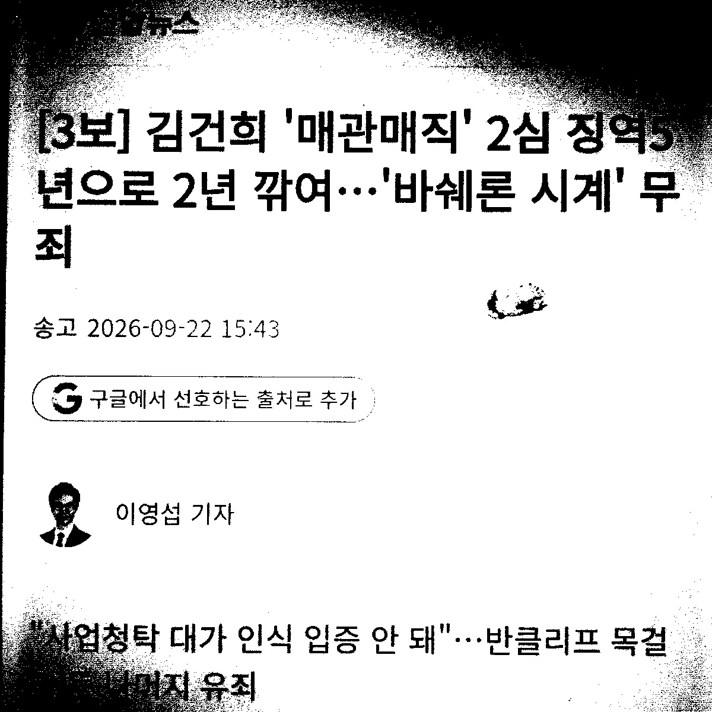
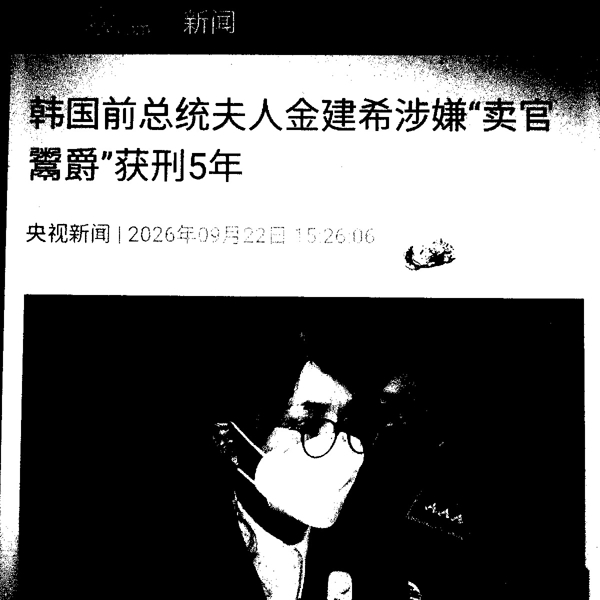
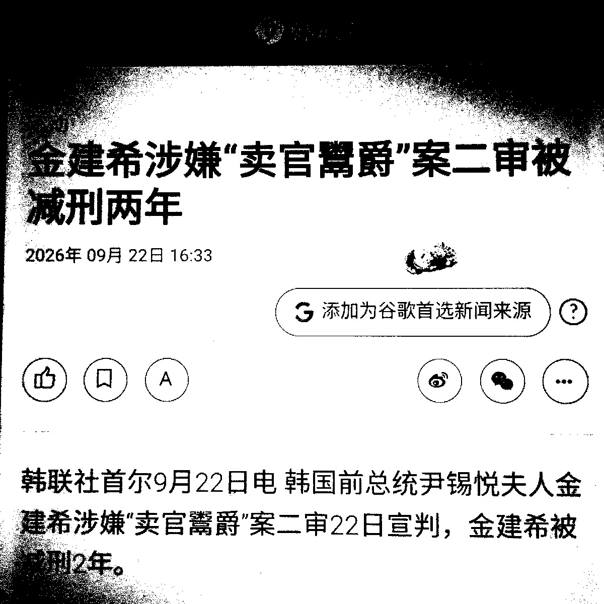
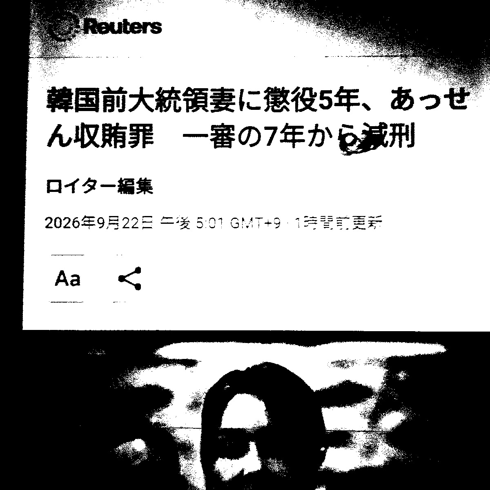
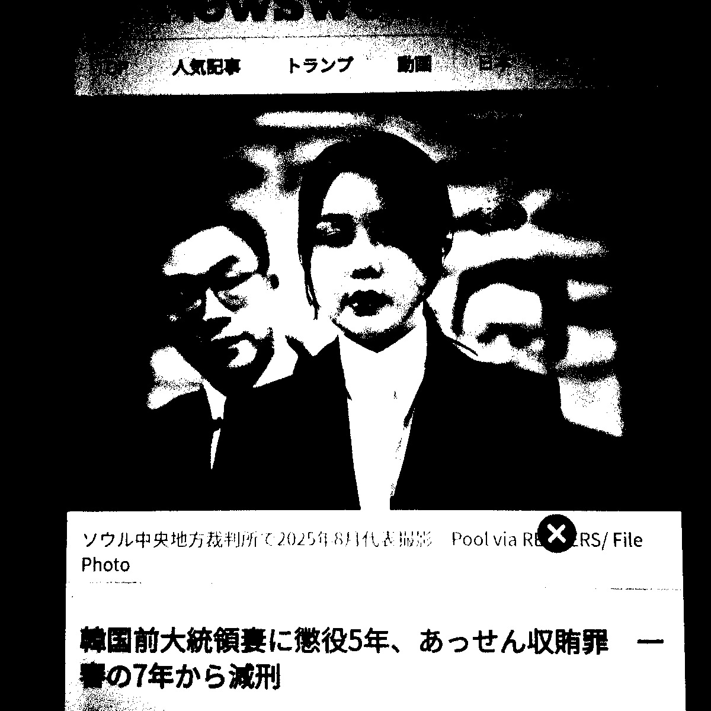
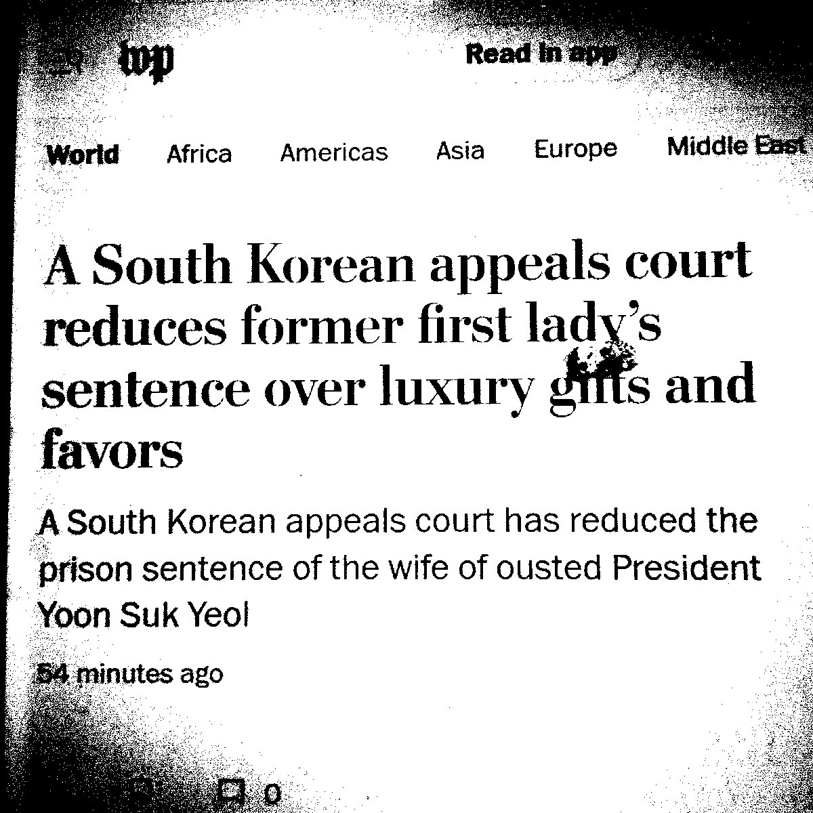
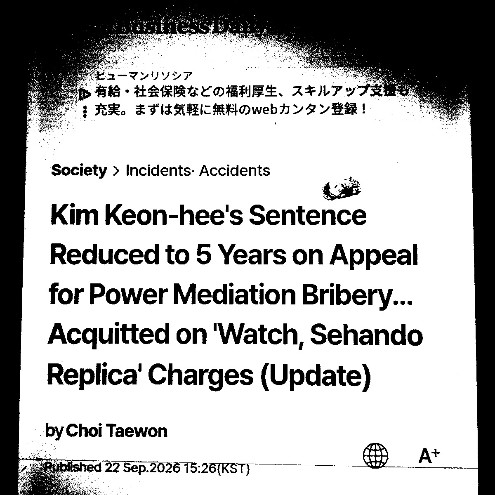
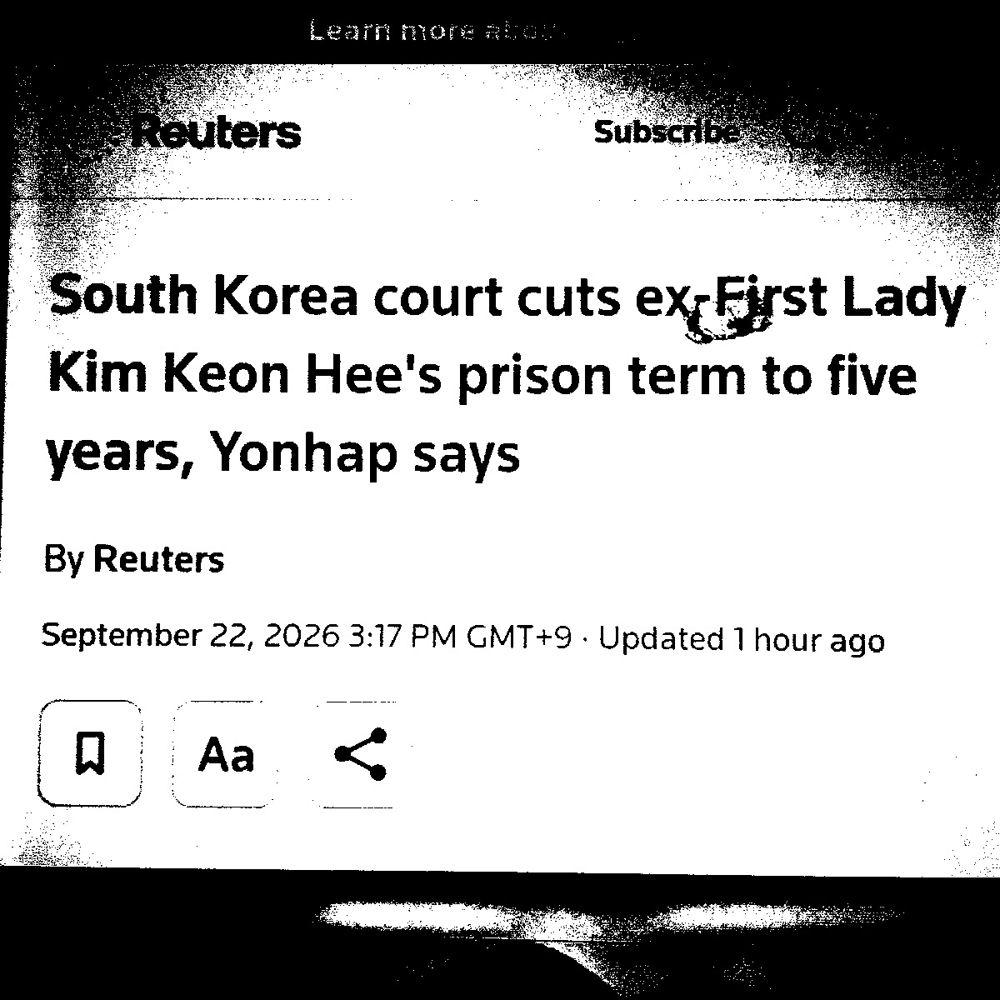

https://anissatta.github.io/l/
26. 9. 25
裁判所のサイトは復旧し、下記の傍聴案内も閲覧出来るようになりました。
2026노648(내란우두머리 등) 온라인 방청권 추첨 안내
https://slgodung.scourt.go.kr/dcboard/new/DcNewsViewAction.work?seqnum=20951&gubun=41

9月23日付The Japan Timesの記事には'A South Korean appeals court on Tuesday reduced a prison term given to former first lady Kim Keon Hee to five years from seven over her conviction for receiving bribes during her husband's presidency,'とあったので裁判所がむやみに金建希の刑を軽くしたと思われた方もおられるかも知れませんが、appeals courtというのは控訴(2審)裁判所ですのでこれを日本語に変換すると「金建希の事件の一つについて1審で懲役7年の判決が出ていたが、2審は懲役5年の判決を出した」というだけのことなのです。この事件についても上告審(3審)が行われ、その結果刑が確定することになります。(この件についてThe Japan Timesだけが報道を許された(?)のはまず誰もこの新聞を読まないからでしょうが、上のような誤解が見込まれるからだとも思われます)
以前尹前大統領の内乱首謀事件の公判が開かれた9月17日頃に「尹前大統領が釈放されたとの噂が流れた可能性もあるので尹前大統領が収監されている拘置所の入口付近を監視する必要がある」と述べましたが、翌日開かれた一般利敵事件の下記の公判映像を見るとこれには尹前大統領は出席しておらず、여인형被告人だけが出席しているようです。この日に尹前大統領が拘置所を出ることはなかったでしょうから、一応書いておきます。
https://m.youtube.com/watch?v=OCq5VW0dIpI
裁判所のサイトが復旧するまでの繋ぎとして内容は一部重複しますが下記の記事を紹介します。これらの記事には尹夫婦の刑の確定状況についての記述も見られますが、ここにある通り金建希には確定した刑がありませんから大法院が10月末までに判決を下し刑を確定しないと拘束期間満了により釈放のおそれがあります。
윤 전 대통령은 징역 7년이 확정된 체포 방해 사건을 제외하고 8개의 형사 재판을 받고 있습니다. 김건희씨는 그제 '매관매직 의혹' 항소심 재판에서 징역 5년을 선고받았습니다.
윤석열·김건희, 두 번째 옥중 추석…명절 특식 없고, 접견도 불가
https://news.jtbc.co.kr/article/NB12319923
윤 전 대통령은 공수처의 체포영장 집행을 방해한 혐의 등으로 대법원에서 징역 7년이 확정된 반면, 김 여사는 아직 형이 확정되지 않았다.
윤석열·김건희, 나란히 '옥중 한가위'…특식 없이 일반식만 제공
https://www.news1.kr/society/court-prosecution/6300724
今日はチュソク(秋夕)であり官民ともに休日ですから、裁判所のサイトがメンテナンス中であるのはその為かも知れません。あとまた誰かが噂を流している可能性もあるので13:00-14:00の間部屋の全てのカーテンを開放します。その間昼寝をしたりしますが私がインターネットに何も書かないからといって死んだ訳ではありません。
PPS: あと韓国の方々がどの程度危機感をお持ちになっているか分かりませんが、下記記事を信用するなら大法院の仕事の速度によっては金建希が釈放される可能性もあるということになります。
PS: 以前書いたことと矛盾しているようですが、10月中に判決が出ると予測される場合に短期労働(ヤマト運輸以外)をして金建希に対する最高裁判決が出てから韓国に行く可能性もあります。
下記は今日出た記事ですが、「도이치모터스 주가조작과 통일교 금품수수, 명태균 여론조사 무상수수 의혹 사건이 대법원 전원합의체에 계류 중이지만 아직 선고기일은 잡히지 않은 상태다」とあり金建希に対する最高裁判決がいつ出るかは未定だといいますから、やはり29日の審理期日が判決を伴うものとは限らないようです。ただ「법조계에서는 한 달이면 전원합의체가 결론을 내리는 데 물리적인 시간은 충분하다는 것이 중론이다」ともありますから、10月中に判決が出る可能性もあるようです。先日書いたことについてはこの辺を見極めて臨機応変に対応していこうと思います。この記事に「대법원 전원합의체는 오는 29일 김씨 사건을 심리할 예정이다. 이날 대법관들 사이에서 사건의 쟁점과 결론을 두고 어느 정도 의견이 모이느냐에 따라 향후 선고 시점도 윤곽을 드러낼 것으로 보인다」ともあるので29日の審理期日に判決が出る時点がある程度予測可能になる可能性もあるかと思います。
김건희씨의 상고심 구속기간 만료가 한 달여 앞으로 다가왔다. 도이치모터스 주가조작과 통일교 금품수수, 명태균 여론조사 무상수수 의혹 사건이 대법원 전원합의체에 계류 중이지만 아직 선고기일은 잡히지 않은 상태다. 대법원이 구속기간 만료 전 결론을 내리지 않을 경우, 김씨는 이 사건으로는 더 이상 구속 상태를 유지할 수 없다. 법조계에서는 한 달이면 전원합의체가 결론을 내리는 데 물리적인 시간은 충분하다는 것이 중론이다. 다만 대법관들의 의견이 첨예하게 갈린다면 구속기간이 임박했다는 이유만으로 결론을 서두르기는 어렵다는 의견도 나온다. (中略) 법조계에서는 구속기간 만료 전 선고 가능성도 열려 있다는 분석이 나온다. 한 고등법원 부장판사는 "물리적으로 한 달이 남았기 때문에 선고가 어렵다고 볼 이유는 전혀 없다"며 "대법원은 1·2심처럼 법정에서 변론을 종결하면서 언제쯤 선고하겠다고 알리는 구조가 아니다"라고 설명했다. 그러면서 "전원합의체 선고기일을 한 달 전부터 미리 발표하는 것도 아니기 때문에 지금 선고기일이 잡히지 않았다는 것만으로 판단하기는 어렵다"고 덧붙였다. 그동안 전원합의체 심리의 변수로 꼽혔던 대법관 공석 문제에도 일부 매듭이 풀렸다. 김성수 신임 대법관이 지난 21일 공식 취임하면서 대법관 공석은 2자리에서 1자리로 줄었다. 법조계에서는 남은 한 자리 공석도 전원합의체 심리를 늦출 사유는 아니라는 의견이 나온다. 한 판사는 "대법관 한 명이 공석이라고 해서 전원합의체 심리가 미뤄지지는 않을 것"이라고 예상했다. 또 다른 부장판사도 "대법관 한 명이 빠진 상태에서 전원합의체가 진행되는 것은 드문 일이 아니다"라며 "대법관 교체나 해외 출장 등으로 한 명이 빠지는 경우가 있을 수 있기 때문에 한 자리 공석 자체가 큰 문제는 아니다"라고 짚었다. 결국 관건은 대법관들의 합의가 어느 단계까지 진행됐느냐다. 물리적으로는 한 달 안에 선고가 가능하지만 대법관들의 의견이 첨예하게 갈려 추가 검토가 필요하다면 상황은 달라질 수 있다. 대법원 전원합의체는 오는 29일 김씨 사건을 심리할 예정이다. 이날 대법관들 사이에서 사건의 쟁점과 결론을 두고 어느 정도 의견이 모이느냐에 따라 향후 선고 시점도 윤곽을 드러낼 것으로 보인다. 구속기간 만료 전 선고 여부를 가늠할 분수령인 셈이다.
김건희 석방 시계 한달 앞으로…재판장 조희대의 선택은?
https://www.nocutnews.co.kr/news/6582945
26. 9. 24
昨日の京郷新聞の記事には尹前大統領夫妻の26日までの食事内容が書かれていましたが、下記の文化日報の記事には27日のも紹介されています。
‘추석인데 떡국?’…감옥서 두번째 추석 맞은 윤석열·김건희의 식사
https://www.munhwa.com/article/11619348
下記はこの話題についてのニュース映像です。
https://m.youtube.com/watch?v=ZoXr8qJi7MI
韓国の裁判所のホームページ全体がメンテナンスによりサービスを停止しているようです。昨日私がリンクを貼った傍聴案内はこのサイト内にあるので閲覧出来ない状態です。メンテナンスが終わってURLが変わることは無いとは思いますが、復旧次第調べて報告します。
26. 9. 23
PS: 以前リンクを貼っていた漫画はInstagramの「o_deng96」というユーザーの4月の投稿にあるものみたいです。
以前リンクを貼った漫画が削除された為に何か噂が流れた可能性もあるので下記を示します。このキャッシュもじきに消えると思います。
조(曺)희대大法院長の行ってきたことについて下記記事は「寝台大法院」(침대 대법원)と呼んでます。
(9. 23) 상고심 두 달 미루고 29일 '전합' 첫 기일 '침대 대법원'
https://www.mindlenews.com/news/articleView.html?idxno=22468
29日の審理期日についての日本語の記事はまだ出ていないようですが、当日になれば何か出るのではないかと思います。
Supreme Court to hold full-bench hearing on Kim Keon-hee “Myeong Tae-gyun Gate” on 29th
https://en.nocutnews.co.kr/news/6582350
恐らく皆様が(願わくば彼女も)最も気になっているであろうことについて書きます。当初私は「金建希に対する最高裁判決が出(て、金建希が数年か数十年は娑婆に出て来る心配が無くなったら)たら韓国に行く」と述べていましたが、来週29日の全員合議体審理期日に判決まで出る場合はその通り実行できると思います。ただ下記の聯合ニュースの記事によると、次のような展開も考えられます。ここでまず皆様に理解して頂きたいのは聯合ニュース(Yonhap News)というのが韓国で主要な報道機関の一つであり、信用出来るということです。日本ですと電車の中に設置された液晶パネルに時事通信社のニュースや天気予報が表示されることが多いようですが、韓国の駅などにあるパネルには聯合ニュースが提供する速報などが表示されていることがあると思います。今朝引用したThe Japan News(by 読売新聞)の記事も引用元としてYonhapの名を明記していました。
まず下記引用に「약 두 달만에 첫 전원합의기일을 열고」とあるように大法院が金建希の事件を全員合議体に回付してから既に2ヶ月経っており、ようやく初審理期日を開くというのですから、今後もそういったタラタラした裁判の進行が予想されるかとも思います。また「통상 전합기일은 한 달에 한 번 열린다. 다만 속행 기일은 언제든지 잡아 진행할 수는 있다」とあるように全員合議体(略して전합)期日は通常1ヶ月に1回開かれますので29日のが万が一延期される場合には翌月以降になると思われます。続行(続きの)期日は何時でも進行することが出来るとありますが、これから察するに29日で判決まで進まず、속행 기일が指定される可能性があります。
ですので29日に判決が出ず、仕事もしないとなるとホームレス化の準備をせざるを得なくなります。以前も書いたと思いますが、ホームレスになるにも元手がある程度必要ですので、このままここで一文無しになるのを待つことは避けなくてはなりません。ですのでとりあえず今月29日に最高裁判決が出ればそれを今回のようにインターネットを通して皆様にお伝えした上で韓国に行く準備をすぐにしますが、29日に審理期日が開かれなかったり、判決を伴わない審理期日であった場合にはここを退去する方向で進めていくことにします。あとチュソクにはジョン2, 3種類と肉無しの里芋スープ(토란국)くらいは作る事が出来ればと思っています。
대법원 전원합의체가 오는 29일 김건희 여사의 3대 의혹 사건과 한덕수 전 국무총리, 이상민 전 행정안전부 장관의 내란 사건 상고심 전원합의체 심리를 진행한다. 22일 법조계에 따르면 대법원은 오는 29일 전원합의기일을 열고 김 여사의 자본시장법 위반 등 사건과 한 전 총리, 이 전 장관의 내란 중요임무종사 사건 등을 심리한다. 통상 전합기일은 한 달에 한 번 열린다. 다만 속행 기일은 언제든지 잡아 진행할 수는 있다. (中略) 당초 대법원은 7월 16일 김 여사 사건 상고심 선고를 진행할 예정이었으나, 윤 전 대통령 1심 선고 이후 민중기 특별검사팀의 연기 신청을 받아들여 같은 달 24일로 선고를 미룬 상태였다. 이후 이를 하루 앞둔 23일 전합 회부를 위해 선고기일을 재차 미뤘는데, 약 두 달만에 첫 전원합의기일을 열고 여론조사 의혹과 관련해 본격 심리에 착수하게 된 것이다. 김 여사는 이 사건 2심에서 정치자금법 위반 혐의 외에 도이치모터스 주가조작 가담 혐의 일부와 통일교 금품수수 혐의가 유죄로 인정돼 징역 4년과 벌금 5천만원을 선고받았다.
(9. 22) 대법 전합, 김건희 상고심 29일 심리…한덕수·이상민 사건도
https://www.yna.co.kr/view/AKR20260922187800004
今年のチュソク(秋夕)当日とチュソク連休の日付については調べて頂きたいのですが、以前「尹、釈放」の噂が流れていたようなので下記の京郷新聞の記事を紹介します。尹前大統領夫妻は今年も拘置所でチュソク連休を過ごされるそうです。この記事には尹夫婦それぞれが収監されている拘置所がチュソク連休中に提供するメニューについて記述しています。
それによれば尹前大統領がいるソウル拘置所は連休の初めである24日の朝食にトック(떡국)とジャバン海苔(김자반)、白菜キムチ(배추김치)を、昼食にワカメスープ(미역국)、唐辛子のチャプチェ(고추잡채)、大根の漬物(쌈무)、白菜キムチ(배추김치)を、夕食にフダンソウ(?)の味噌汁(근대 된장국)、牛プルコギ(소불고기)、白菜キムチ(배추김치)をそれぞれ提供し、特食(특식)は特に提供しないそうです。
チョソク当日には朝食に牛骨ウゴジスープ(사골우거지국)、干し大根のムチム(무말랭이 무침)、白菜キムチ(배추김치)を、昼食に古漬けキムチの酔い覚ましスープ(묵은지 해장국)、鶏卵のチム(달걀찜)、すくって食べる(固形の?)ヨーグルト(떠먹는 요쿠르트)、カクテキ(깍두기)を、夕食に芋スジェビの胡麻スープ(참깨 옹심이국)、豚肉の醤油煮(돼지 장조림)、白菜キムチ(배추김치)をそれぞれ提供するそうです。
その翌日26日には朝食にモーニングパン(모닝빵)、ジャム(잼)、コーンスープ(옥수수 수프)、果物(과일)を、昼食に油揚げうどんスープ(유부우동국)、豚肉丼(제육덮밥)、白菜キムチ(배추김치)を、夕食に牛のコムタン(사골곰탕)、エゴマの葉のムチム(깻잎지 양념무침)、白菜キムチ(배추김치)をそれぞれ提供するそうです。
金建希がいるソウル南部拘置所は連休の初めである24日の朝食に牛肉と大根のスープ(쇠고기뭇국)、エゴマの葉(깻잎)、白菜キムチ(배추김치)を、昼食にスンドゥブチゲ(순두부찌개)、ミートボール(미트볼)、もやしのムチム(콩나물무침)、白菜キムチ(배추김치)を、夕食に牛骨キムチスープ(사골얼갈이국)、唐辛子のチャプチェ(고추잡채)、花形のパン(꽃빵)、白菜キムチ(배추김치)をそれぞれ提供するそうです。
チョソク当日には朝食に椎茸と韓国式蒲鉾のスープ(표고 어묵국)、干し大根のムチム(무말랭이 무침)、白菜キムチ(배추김치)を、昼食に淸麴醬(のスープ?)(청국장)、魚の揚物(생선튀김)、野菜の和物(비빔채소)、コチュジャン(고추장)、生の大根(무생채)を、夕食に豚キムチチゲ(돼지고기 김치찌개)、鶏卵のチム(달걀찜)、獅子唐とカタクチイワシの炒め物(꽈리멸치볶음)、チョンガーキムチ(총각김치)をそれぞれ提供するそうです。
その翌日26日には朝食にモーニングパン(모닝빵)、イチゴジャム(딸기 잼)、牛乳(우유)、チーズ(치즈)、サラダ(샐러드)を、昼食に味噌汁(미소국)、カレーライス(카레)、果物のプリン(과일푸딩)、チョンガーキムチ(총각김치)を、夕食にワカメスープ(미역국)、韓国式蒲鉾のコチュジャン炒め(어묵고추장볶음)、蓮根の煮物(연근조림)、白菜キムチ(배추김치)をそれぞれ提供するそうです。
(9. 23) 윤석열 참깨옹심이국, 김건희 김치찌개···추석 구치소 식단 봤더니
https://www.khan.co.kr/article/202609230939001
(図書館にて) 主要な新聞社(産経, 朝日, 毎日, 日経)の9/23付朝刊を調べた限りThe Japan News(by 読売新聞)だけが昨日の判決について報じていました。
https://drive.google.com/file/d/1k0S2bcTaWUIcSqBOLScwqsdq7ld_uRQR/view?usp=drivesdk
私はこの新聞についてはよく知りませんが、下記の版(September 23, 2026)です。恐らく他の図書館にもあると思います。この版では5ページに該当の記事がありました。
https://drive.google.com/file/d/1mqq1LtgRd5ylFBg0Wb0swYPRMbOYLgOt/view?usp=drivesdk
このページです:
https://drive.google.com/file/d/1bglsvGhJgkFb4faXNQmHY893WpwFFlep/view?usp=drivesdk
この事件の1審判決(懲役7年)について報じた日本の新聞は私が知る限り皆無でしたので、今後皆様が金建希の매관매직事件について何か根拠となるものを探す際にはこのThe Japan News(by 読売新聞) September 23, 2026 (朝刊?)を活用して下さい。
https://drive.google.com/file/d/1sHQOeP68gEa0p2q2jg1bQsPI0NWj-k8J/view?usp=drivesdk
今朝述べたように昨日(22日)金建希の(企業関係者などから金品と請託を受け取った容疑に関する事件の)2審判決が出たのと同時に「金建希のある事件について大法院が審理期日を指定した」というニュースが出ましたので、恐らく「昨日大法院が指定したのは昨日2審判決が出た事件の審理期日なのだろう。ということは以前大法院まで行っていた事件については既に判決が出ているのだろう」といった誤解が生じているかと思います。私は何となく、そのような誤解が除去されないと大法院が更に判決を延期することが容易になってしまうと思っています。これからこれについて説明してみます。まず下記記事は大法院が全員合議期日(전원합의기일)を指定した金建希の事件について「김건희씨의 명태균 여론조사 수수 의혹 등 사건」、「김 여사의 도이치모터스 주가조작과 명태균 여론조사 수수 의혹 등 사건」と表現しています。これは明らかに「3大疑惑」の一部です。この記事が「等」(등)という言葉で除外しているのは統一教金品収受疑惑ですが、これが昨日2審判決が出た매관매직事件の企業関係者等からの金品収受疑惑と混同され易いことは既に述べました。あと全員合議期日というのは「전원합의기일은 대법원장을 비롯한 대법관들이 전원합의체에 회부된 사건의 주요 쟁점을 논의하는 절차다. 통상 한 달에 한 차례 열린다」とあるように必ずしも判決が伴うものではないようです。なので私はやはり皆様が上に述べたような点を正しく認識せねば大法院がまた引き伸ばし戦略を使う可能性があると思っています。(大法院が金建希の事件を全員合議体に回付したのは下記のニュースが出た約2ヶ月前でした)
22일 법조계에 따르면 대법원은 오는 29일 전원합의기일을 열고 한 전 총리와 이 전 장관의 내란 중요임무 종사 등 혐의 사건을 심리한다. 김건희씨의 명태균 여론조사 수수 의혹 등 사건도 같은 날 전원합의체 심리 테이블에 오른다. 전원합의기일은 대법원장을 비롯한 대법관들이 전원합의체에 회부된 사건의 주요 쟁점을 논의하는 절차다. 통상 한 달에 한 차례 열린다. (中略) 대법원은 김 여사의 도이치모터스 주가조작과 명태균 여론조사 수수 의혹 등 사건도 29일 전원합의기일에서 심리할 예정이다. 해당 사건 역시 앞서 전원합의체에 회부된 상태다.
대법원, 29일 김건희 '명태균 게이트' 전합 심리 나선다
https://www.nocutnews.co.kr/news/6582350
下記は今日出たばかりの記事です。ここにあるように昨日2審判決が出た事件について今日、金建希側が大法院に上告したとのことです。ですから、大法院がこの事件の3審(上告審)を審理するとしても、それはこれから明らかになる話です。金建希側が上告する前に出た昨日の「全員合議期日指定」についてのニュースが昨日2審判決が出た事件と無関係であることはこのことからも明らかです。
인사 청탁 등 명목으로 각종 금품을 받은 이른바 '매관매직' 혐의로 항소심에서 징역 5년을 선고받은 김건희 여사가 선고 하루 만에 상고장을 제출하면서 대법원 판단을 받게 됐다. 23일 법조계에 따르면 김 여사 측은 이날 김 여사의 특정범죄가중처벌 등에 관한 법률 위반(알선수재) 혐의 항소심을 심리한 서울고법 형사15-3부(고법판사 성언주 원익선 이희준)에 상고장을 제출했다. 김건희 특검팀(특별검사 민중기)는 아직 상고하지 않았다.
'매관매직' 김건희, 항소심 징역 5년 불복 상고… 선고 하루 만
https://www.news1.kr/society/court-prosecution/6299924
(2025/9/24) 株価操作等事件 初公判
https://youtube.com/shorts/1XF8TtYoU64
https://youtube.com/shorts/1Ij0qBSjATE
(2025/11/19) 株価操作等事件 第10回 公判
https://www.youtube.com/live/frWFHrD6Xpc
(2025/12/3) 株価操作等事件 1審 結審公判
(2026/1/28) 株価操作等事件 1審 宣告公判
(2026/4/13) 金建希が被告人として出席した公判
https://youtube.com/shorts/hFzLnjtKMao
(2026/4/30) 株価操作等事件 2審 宣告公判 (33分あたりでズームアップされます)
(2026/6/26) 賣官賣職事件 1審 宣告公判
https://youtube.com/shorts/GYMaM3t99Eg
🆕 (2026/9/22) 賣官賣職事件 2審 宣告公判
https://m.youtube.com/watch?v=xmrL7pEKt6Y
昨日金建希の刑事事件の1つである売官売職(매관매직)事件の2審判決が出ましたが、同じ日に(先に最高裁まで進み全員合議体に回付され保留されていた)別の事件の初の全員合議体 審理期日が指定されたので恐らく皆様の中で「昨日最高裁が審理期日を指定したのは昨日2審判決が出た事件なのではないか」とか、「ということは別の事件については既に最高裁判決が出ているのでは」といった疑問が生じたと思います。こういったことを狙って昨日そのような報道が同時になされた可能性もあります。裁判が上告審(3審)へと進む際には被告人や検察側が控訴(上告)を行いその上で最高裁が期日を指定します。またいきなり最高裁が全員合議体での審理を選択することはないと思います。現在最高裁で審理されている事件と売官売職(매관매직)事件が混同されやすいことについては既に述べました。韓国の方々が混同するかもしれないもう一つのポイントは「三大疑惑」(3대 의혹)という言葉です。これは現在最高裁で審理されている「統一教会 金品収受(あっせん収賄)•ドイツモータース株価操作•無償世論調査収受」の3つの容疑をセットにして扱っている事件を指しています。来る29日に審理期日が指定されたのはこの「統一教会 金品収受(あっせん収賄)•ドイツモータース株価操作•無償世論調査収受の3つの容疑をセットにして扱っている事件」であり、昨日2審判決が出た「企業関係者などからの金品収受(あっせん収賄)」ではありません。
下記は조(曺)희대大法院長が「政府(青瓦台)から要請されていた大法官の再指定(재제청)を拒否する」との立場を発表されたことについての記事です。同じ日に大法院が金建希の全員合議体での審理期日を指定したというニュースが出ていましたが、これらを総合すると結局このような発表があってもなくても大法院が金建希の事件を審理することは可能だったということになるかと思います。大法官が1名欠員の状態であっても全員合議体の審理が可能であるということですから、大法院がこれまで意味もなく時間を浪費していたという見方も出来るかと思います。日本の皆様は私が조(曺)희대大法院長(69歳)が悪い人間だと述べたり、キョンシーに喩えたりしたことを理解できないと思われたかも知れませんが、この方がなさっている事がおかしいということは韓国でも認識されているみたいです。
서울 소재 로스쿨 C교수는 “과거엔 대법원 법원행정처와 청와대 사이에서 계속 사전에 협의해 조율하고, 이후 대법원장과 대통령이 합의해 제청하는 방식이었는데 지금은 그 작업이 다 비어 있다”고 지적했다. 조 대법원장이 이런 선택을 한 데 대해 원칙주의자이자 헌법·법률을 중시하는 법률가적 면모가 반영됐다고 보는 시각이 크다. D부장판사는 “조 대법원장이 절차 등을 하나씩 따져 이번 결론을 내린 것이 아니겠느냐”며 “제청권 문제가 사법 독립 문제라고 본 것 같다”고 밝혔다. 조 대법원장이 재제청 거부를 꺼내든 ‘시점’을 놓고서는 정치적인 해석이 뒤따를 수밖에 없다. 조 대법원장은 이 대통령이 유엔총회 참석차 청와대를 비우자마자 재제청 거부를 선언했다. 조 대법원장은 불과 하루 전인 지난 21일 김성수 대법관 임명식으로 청와대를 찾았을 때 이 대통령과 대면하고도 재제청 얘기는 꺼내지 않은 것으로 알려졌다. 양측 간 대립은 상당 기간 계속될 것으로 보인다. 청와대가 대법원에 재제청 요구 문서를 다시 마련해서 보낼 가능성은 작다. 혹여 청와대가 요구 문서를 다시 보낸다 해도 조 대법원장이 재제청을 받아들일지 불투명하다.
(9. 22) ‘사법 독립’ 명분 초강수…대통령 출국 후 발표 ‘시점’ 논란
https://www.khan.co.kr/article/202609222111005/
김민석 "조희대 '대법관 재제청 거부'는 희대의 착란‥정신 잃은 것"
https://imnews.imbc.com/news/2026/politics/article/6853569_36911.html
下記は尹前大統領の内乱首謀(내란우두머리)容疑に関する裁判の傍聴案内です。ここにあるように次回は10月1日(木)に公判が開かれるようです。
2026노648(내란우두머리 등) 온라인 방청권 추첨 안내
https://slgodung.scourt.go.kr/dcboard/new/DcNewsViewAction.work?seqnum=20951&gubun=41
이상한 느낌이 들어서 이런 시각에 일어났습니다. 다음 기사에 의하면 오는 29일에 김건희 그리고 한덕수·이상민 사건의 첫 전원합의체 심리기일이 열린답니다. 이건 심리기일이라니 선고가 같은 날에 내릴지는 잘은 모르는데요. 그런데 어제 제가 동영상을 사용하면서 설명한 바와 같이 대법원의 대법관 결원이 지금과 같이 한 명였을 때도 있기 때문에 왜 그때 전원합의체 심리기일을 바로 지정하고 이들의 사건을 심리하지 않았는지 잘 모릅니다. 다음 기사가 전하는 일은 대법관 결원이 한 명 있다고 해도 전원합의체 심리가 가능하단 말이죠? 그리고 다음과 같은 소식이 난 같은 날에 조희대 대법원장이 '재제청 거부'이라는 스스로의 매우 이상한 입장을 발표했다니까 분들의 비판을 잠시 피하기 위한 일이라고도 볼 수 있을 것입니다. 우리가 해야 하는 건 앞으로도 이런 일들을 감시해 갈 것일 거예요. 오늘도 오전 9시경에 마르야스에 갑니다. (이 글을 업로드 한 후 다시 자겠습니다)
대법, 29일 김건희 상고심 전원합의체 심리…한덕수·이상민도
https://m.yonhapnewstv.co.kr/news/AKR20260922204622g8z
대법 전합, 29일 김건희·한덕수·이상민 상고심 첫 심리 착수
https://mbiz.heraldcorp.com/article/10882573
26. 9. 22
これは法院の公式YouTubeチャンネルに上がっている映像ですが、民間の報道社が撮影した映像はあるのか分かりません。明日また探してみます。
https://m.youtube.com/watch?v=xmrL7pEKt6Y








金建希涉嫌“卖官鬻爵”案二审获刑5年
http://world.people.com.cn/n1/2026/0922/c1002-40803646.html
韩国前总统夫人金建希涉嫌“卖官鬻爵”获刑5年
https://news.cctv.com/2026/09/22/ARTIiW2jyeadqZ1wO0v0yRKA260922.shtml
金建希涉嫌“卖官鬻爵”案二审被减刑两年
https://cn.yna.co.kr/view/ACK20260922002700881
韓国前大統領妻に懲役5年、あっせん収賄罪 一審の7年から減刑
https://www.reuters.com/jp/world/korea/NVNB6OXQJ5MDHLGZD7Y64BJ76Y-2026-09-22/
韓国前大統領妻に懲役5年、あっせん収賄罪 一審の7年から減刑
https://www.newsweekjapan.jp/articles/-/334760
A South Korean appeals court reduces former first lady’s sentence over luxury gifts and favors
* 夕食時に金建希の宣告公判映像を指差して私が言ったのは「これは1審宣告公判の映像です」です。下記記事は今日のですが、写真に 「First Lady Kim Geon-hee attending the first trial sentencing hearing for the charge of bribery under the Act on the Aggravated Punishment, etc. of Specific Crimes held on June 26 at the Seoul Central District Court in Seocho-gu. Photo by Yonhap News」との但書があります。これが撮られたのは6/26です。
Kim Keon-hee's Sentence Reduced to 5 Years on Appeal for Power Mediation Bribery... Acquitted on 'Watch, Sehando Replica' Charges (Update)
https://www.asiae.co.kr/en/article/2026092215265505650
(2026/6/26) 賣官賣職事件 1審 宣告公判
https://youtube.com/shorts/GYMaM3t99Eg
金建希涉嫌“卖官鬻爵”案二审获刑5年
https://m.163.com/dy/article/L7EFVIMS05346RC6.html
KBSとロイター通信は正しい(現実的な)時刻を表記しています。私についての噂は中国の方々の間でも楽しまれているようなので指摘しました。(皆様の想像に反して中国の方々は私を憎悪の対象というよりは面白おかしい存在と看做しているようです)
Kim Keon-hee’s Prison Sentence Cut to 5 Years on Appeal in Influence-Peddling Case
https://world.kbs.co.kr/service/news_view.htm?lang=e&Seq_Code=204426
South Korea court cuts ex-First Lady Kim Keon Hee's prison term to five years, Yonhap says
PS: 先のYTNの記事が削除されていたので下記リンクを張っておきます。
https://v.daum.net/v/20260922104029356
https://v.daum.net/v/20260922134320672
https://contents-cdn.viewus.co.kr/video/2026/09/CP-2023-0180/jGZPazVKgUw.mp4
한국에선 오늘 열린 김건희의 선고공판 영상을 TV로 볼 수 있는지도 모르지만 여기선 YouTube 등 밖에 방식이 없습니다. 지금 서울고법의 YouTube 채널을 확인했지만 아직 없는 것 같았습니다. 그런데 아침에 인용한 기사(현대판 '매관매직' 김건희 항소심 오늘 선고..1심은 징역 7년, https://m.ytn.co.kr/news_view.php?key=202609220844238195 )에 '앞서 1심 재판부는 선고 공판 전 과정을 생중계했지만, 2심 재판부는 생중계는 불허하고 대신 녹화 본을 선고 이후 제공하기로 결정했습니다'는 글이 있었으니까 이번에 '전 과정'이 아닌 일부만 선고 이후 제공되겠다고도 볼 수 있는데요. 아마 오늘 밤에 edit한 다음에 그걸 낼 것이라고 상상되는데 제가 저녁밥 안먹으면 제가 죽었다는 소문이 나니 우선 밥 먹고 영상은 이따가 확인하기로 합니다.
https://www.youtube.com/@%EC%84%9C%EC%9A%B8%EA%B3%A0%EB%B2%95
[속보] ‘매관매직’ 김건희, 항소심서 징역 5년
https://www.chosun.com/national/court_law/2026/09/22/LMA5NEGFGJDQJD4YG4SNYBWAKY/
https://www.chosun.com/english/national-en/2026/09/22/Y7PZLWPGVBBPZC2IOKPFJSPK7A/
(LEAD) Appellate court lowers ex-first lady's sentence to 5 yrs in bribery trial
https://en.yna.co.kr/view/AEN20260922001751315
[속보] ‘매관매직’ 김건희 2심 징역 5년으로 감형
https://news.kbs.co.kr/news/mobile/view/view.do?ncd=8669565
15:03: [속보]김건희 '매관매직' 2심 징역 5년…1심보다 감형 (懲役5年だそうです。1審より2年減りがっかりです)
https://mobile.newsis.com/view/NISX20260922_0003800302
15:00: [속보]2심 "김건희, 지위 망각하고 금품 반복 수수…국민 신뢰 훼손"
https://mobile.newsis.com/view/NISX20260922_0003800464
14:53: [속보] 법원 "김건희, 디올 가방 받으며 청탁 인식" - 뉴스1
https://www.news1.kr/society/court-prosecution/6299029
14:48: 뉴스1も実況しているようです。
[속보] 법원 "김건희, 김상민에게 이우환 '진품' 그림 수수…1억4000만원 상당"
https://www.news1.kr/society/court-prosecution/6299016
14:44: 判決文の各部分についての実況の記事は出てきています。(以前も述べたようにこれは「1回表、大谷1安打」のような記事です)
[속보]2심 "김건희 '바쉐론 시계' 수수, 사업 청탁 단정 못 해"
https://mobile.newsis.com/view/NISX20260922_0003800383
14:37: 皆様も金建希の宣告公判について調べてみて下さい:
https://anissatta.github.io/home-project/kim/
14:36: 先のニュースは朝鮮日報にも出ていました:
https://www.chosun.com/national/court_law/2026/09/22/FXF2B6W3XNDSZHEYKD7TZXH2EA/
14:33: 仕方ないので先の作業の続きを行います。
http://weekly.chosun.com/news/articleView.html?idxno=51090
https://www.chosun.com/national/court_law/2026/06/26/7LKAKRLWCNFF3EO6WBSJMVHM6Q/
14:26: Newsisの速報ニュースにはまだ金建希の宣告公判についての記事が出ていないようですが、代わりにこれを見つけました:
[속보]靑, 조희대 '재제청 거부'에 "깊은 유감…헌법 위배되는 인식"
https://mobile.newsis.com/view/NISX20260922_0003800162
皆様が最近話題になった「涙の金建希」と誤解されたかも知れない写真は下記の通り4月のものです。
http://weekly.chosun.com/news/articleView.html?idxno=50645
下記に朝鮮日報に出ている写真をいくつか挙げてみます。(ちなみに김건희(金建希)と同姓同名のプロ野球選手(金乾𠘕)もいますが、韓国ではこういった事は普通にあり得ます) このように実際に公開されている映像は僅かであり、それを何度も再利用しています。
https://www.chosun.com/national/court_law/2025/09/24/RBHQIIL26VFUXOFVKX2ZCFE554/
https://www.chosun.com/national/court_law/2025/10/15/R5HVXSWNUVAV7JGJSTGGKHB3E4/
https://biz.chosun.com/topics/law_firm/2025/10/22/7XTLARK73NFCRDRLSRCKX7YJCE/
https://www.chosun.com/national/court_law/2025/10/27/PJ7S7TD3G5D6FO2DKG6COLJ7GA/
http://weekly.chosun.com/news/articleView.html?idxno=45782
https://www.chosun.com/national/court_law/2025/11/05/CYZUAPXQVBFM3BV6R2SHNGEJBI/
https://biz.chosun.com/topics/law_firm/2025/11/07/RUDD7KAYV5AZ3J3K3KFQL7MCQM/
https://www.chosun.com/national/court_law/2025/11/11/DGQCCBJ6HFFNLIPZTS37JDZG34/
https://www.chosun.com/national/court_law/2025/11/12/MCKMUOA3LNDYFF62S72IKEWHC4/
https://www.chosun.com/national/court_law/2025/11/14/RYHXQTHGKRBXTEA2SEJGE6JSNY/
http://weekly.chosun.com/news/articleView.html?idxno=46150
https://www.chosun.com/national/court_law/2025/11/26/5AJUJ3LGEVD4PBAJAVLPQM7IZQ/
https://www.chosun.com/national/court_law/2025/12/03/ZL3DNEPF2FCCPCPUNAO7NVYSMY/
https://biz.chosun.com/topics/law_firm/2026/01/28/MDPZKBS6UVA5FCCDGQCUWXFGIE/
現在日本でどのような噂が流れているのかは分かりませんが、もし「今日の宣告公判が生中継されない訳がない」という噂でしたら韓国を旅行中の方はまずテレビをご覧になって下さい。(KBSはそういった場合に公判の映像を放映するはずです) 下記の写真は1審判決時のものですが、연합뉴스TV(ケーブルテレビチャンネルの一つ)が放送する判決についてのニュース映像を人々がテレビを通して見ています。
(6. 26) [1보] 김건희 '매관매직' 혐의 1심 징역 7년 선고
https://www.yna.co.kr/view/AKR20260626123600004
皆様が今度韓国に旅行される際にホテルの(ケーブル)テレビのチャンネルを確認して頂きたいのですが、恐らく日本の方がご存知である韓国の報道社は朝鮮日報(The Chosun Daily)ぐらいだと思いますので、今日の2審宣告公判ではなく金建希の別の事件の最高裁判決についてのこれまでの流れを朝鮮日報(The Chosun Daily)を使って説明してみます。恐らく記事Aにある「(当初の日程から7月24日に延期されていた)最高裁判決が中継される」といった内容の報道を皆様も何らかの形でご覧になったかと思います。(下記はAIが翻訳したとの但書があるので若干おかしい可能性があります) ただその判決予定日の前日である7月23日に、記事Bにあるように最高裁がこれを全員合議体(full bench)に回付したので7月24日の公判は延期されたのです。全員合議体というのは恐らく日本でいう大法廷のようなものだと思います。今日これとは別の事件について2審判決が出ますが、最高裁が審理している事件についてはまだ進捗が見られません。(この2つの事件が日本ではいずれも「あっせん収賄事件」として表記されていることは既に述べました。ただ金品を提供した主体が異なりますので、記事をよく読んで下さい)改めて述べるまでもなく、金建希に対する最高裁判決が出れば日本の新聞社やテレビ局、日本語のネットニュースも必ず報じるはずです。(それは判決が無罪であっても同様です)
記事A (7. 15)
https://www.chosun.com/english/national-en/2026/07/15/QO5VP6ZIOJCTVHSZ6JBRCWALGA/
記事B (7. 23)
https://www.chosun.com/english/national-en/2026/07/23/725LLK2F4NFM3NRUGQXLB556NY/
これと誤解されている方もいそうです。(裁判長の指示によりマスクを外しています)
(2026/4/13) 金建希が被告人として出席した公判
https://youtube.com/shorts/hFzLnjtKMao
先のYTNの映像を見て気付いたことですが、最近話題になっていた「金建希が매관매직事件の2審結審公判で涙を流しながら何かを訴えた」という場面というか、この매관매직事件の2審結審公判自体が映像としては公開されていないのです。このYTNの映像に出てくる1審宣告公判時の映像をそれと誤解されておられる方もおられるでしょうが、下記をご覧になれば解決するかと思います。
(2026/6/26) 賣官賣職事件 1審 宣告公判
https://youtube.com/shorts/GYMaM3t99Eg
下記は今日の宣告公判についての記事(映像)ですが、これを用いて改めて下記を確認しておきます。
1) 被告人は金建希である
2) 今回のが2審(항소심)判決である
각종 청탁과 함께 고가의 금품을 받은 혐의를 받는 김건희 씨에 대한 항소심 선고가 오늘 오후 내려집니다.
3) 1審判決は懲役7年だった
1심은 징역 7년을 선고한 가운데, 항소심 재판부가 어떤 결론을 내릴지 관심입니다.
4) 午後2時に宣告公判がスタートする
김건희 씨에 대한 항소심 선고는 오늘 오후 2시 서울고등법원에서 진행됩니다.
5) 金建希に金品を与えた人物らに対する判決は午後4時以降に下される(法律新聞の週間日程にあったのはこれだと思います)
재판부는 김건희 씨에 대한 선고는 오후 2시, 다른 금품 제공자들에 대한 선고는 오후 4시로 분리 진행하기로 했습니다.
6) 1審では宣告公判(선고 공판)の全過程を生中継したが、今回の2審宣告公判は生中継を許可せず、判決後に録画した映像が提供される
앞서 1심 재판부는 선고 공판 전 과정을 생중계했지만, 2심 재판부는 생중계는 불허하고 대신 녹화 본을 선고 이후 제공하기로 결정했습니다.
7) 金建希の今回の事件の容疑は大統領夫人であるという点を利用して金品とともに人事請託を受けたというものだが、その内容は多岐にわたっている(つまり判決文はかなり長くなるはずです)
김건희 씨는 남편이 대통령이라는 점을 이용해 금품과 함께 인사청탁을 받은 혐의가 적용됐는데, 목록도 금액도 꽤 많습니다. 먼저, 이봉관 회장에게 지난 2022년 맏사위 인사 청탁과 함께 반클리프 아펠 목걸이, 티파니 브로치, 그라프 귀걸이 등 1억 원이 넘는 귀금속을 수수한 혐의를 받고 있습니다. 또 지난 2022년에는 이배용 전 국가교육위원장에게 265만원 상당의 금거북이와 세한도 복제품을, 로봇개 사업가에게는 3천 9백만 원 가량의 바쉐론콘스탄틴 손목시계를 받은 혐의도 적용됐습니다. 특검은 또, 김건희 씨가 최재영 목사에게 청탁과 함께 540만원 상당의 디올 가방, 그리고 지난 2023년 김상민 전 검사에게 1억 4천만원 가량의 이우환 화백 그림을 받았다고 판단해 모두 기소했습니다.
宣告公判の開始は午後2時からですが、判決の主文が読み上げられるのは宣告公判の末尾になります。下記は同じ事件の1審宣告公判の映像ですが、今回もかなり時間がかかるものと思われます。
https://youtu.be/HLbxzSJ6gNY
현대판 '매관매직' 김건희 항소심 오늘 선고..1심은 징역 7년
https://m.ytn.co.kr/news_view.php?key=202609220844238195
下記にある通り昨日김성수大法官の任命式があったようです。ここには記載がありませんが、これで大法官の欠員は1名となります。
이 대통령, 김성수 대법관에 임명장…조희대와 차담
https://m.yonhapnewstv.co.kr/news/MYH20260922051047B6G
ここにある通り昨日任命された김성수大法官はその2週間前に退任した이흥구の後任です。노태악の後任はまだ決まっていないので現在欠員は1名です。
(9. 7) 대법관 2명 공석 현실화‥조희대는 오늘도 침묵
https://imnews.imbc.com/replay/2026/nwdesk/article/6850182_37004.html
下記はNewsisの裁判スケジュールですが、これによると今日の金建希の2審(항소심)宣告公判はソウル高裁(서울고법; 고법は고등법원の縮約語です)で午後2時(오후 2시)始まるそうです。ただ昨日述べたように公判の映像は判決が出てから録画したものが公開されます。宣告公判開始から判決まではかなり時間がかかることがありますので、皆様もそれを念頭に置いておいて下さい。
오후 2시 '특정범죄 가중처벌법상 알선수재 혐의' 김건희 여사 외 3명 항소심 선고기일, 서울고법 형사15-3부, 311호
[오늘의 주요일정]법조(9월22일 화요일)
https://mobile.newsis.com/view/NISX20260921_0003798965
26. 9. 21
PPS: 「録画中継」されるそうです。「다만, 선고 장면은 실시간 생중계가 아닌 녹화 형식으로, 선고 이후 영상이 공개될 예정입니다」とあるようにリアルタイムではなく宣告後に録画映像が出るらしいです。
내일 진행되는 김건희 씨의 이른바 '매관매직' 의혹에 대한 항소심 선고가 녹화 중계됩니다. 서울고법 형사 15-3부는 내일 오후 2시 열리는 김 씨의 알선수재 혐의 항소심 선고에 대한 '김건희 국정농단' 특검의 중계 신청을 허가했습니다. 다만, 선고 장면은 실시간 생중계가 아닌 녹화 형식으로, 선고 이후 영상이 공개될 예정입니다. 앞서 김 씨는 윤석열 전 대통령 취임 전후 서희건설 이봉관 회장과 이배용 전 국가교육위원장 등으로부터 각종 청탁을 대가로 3억 원 가까운 금품을 받은 혐의로 1심에서 징역 7년을 선고받았습니다.
내일 김건희 '매관매직' 항소심 선고 녹화 중계
https://imnews.imbc.com/news/2026/society/article/6853338_36918.html
PS: 明日の宣告公判についての中継申請は許可されるとは思いますが、それについての記事はまだ出ていないようです。私は韓国の報道社がどうしてこんなことをしているのか分からなくもありません。(あたかも私がそれを皆様に伝えるのを嫌がっているように見えるからです) あと明日2審判決が下る事件は1審で既に懲役7年が出ていますから、日本の方々が期待されているような無罪はあり得ないと思います。(韓国の方々が想像する日本人というのは「尹アゲイン」的な極右だと思います)
未だにゴミのような噂を流す方がおられるのは、日本で金建希のことや韓国でのこの方の評価について理解されていないからだとも思われます。下記は尹前大統領が逮捕された頃に描かれた漫画だと思いますが、1コマ目で「これで少し安心して寝れるわ〜」と呟いているこの方は3コマ目で「ところで金建希は?」と何かをチェックしようとされています。
https://www.hani.co.kr/arti/cartoon/hanicartoon/1178341.html
意図はよく分かりませんが、これには조(曺)희대大法院長と尹前大統領が描かれています。
https://www.hani.co.kr/arti/cartoon/hanicartoon/1220127.html
これは拘置所にいる金建希です。
https://www.hani.co.kr/arti/cartoon/hanicartoon/1243169.html
金建希の言動には同情を誘って刑を軽くしたいという意図がありますが、日本の方々は愚直にそれを解釈されているかと思います。
https://www.hani.co.kr/arti/cartoon/hanicartoon/1211971.html
非常戒厳は金建希への捜査を防ぐ為のものだったと解釈出来なくもありませんが、それについて反省や尹前大統領に対する申し訳なさのような感情は無いようです。
https://www.hani.co.kr/arti/cartoon/hanicartoon/1212192.html
尹前大統領の在任中に下記のような風刺画を学生が描いたということからも何か察することが出来るのではないかとも思います。
https://www.joongang.co.kr/article/25107374
以前も紹介しましたが、下記のような映画もあります。
下記は以前書いた文章です。
[속보]종합특검, ‘김건희 도이치 무혐의’ 전 서울중앙지검장 등 검사 5명 기소
https://www.khan.co.kr/article/202608201224011
https://m.news.nate.com/view/20260820n16206
ちなみに1審で金建希の株価操作容疑を無罪としたソウル中央地方地裁の判事らは今日このように起訴されたのですが、同じ事件の2審でこの株価操作容疑を有罪と認定したソウル高裁の申宗旿(신종오 / シン・ジョンオ / Shin Jong-oh)判事は裁判所の庁舎内で不審な死を遂げています。私はこれがずっとおかしいと思っていましたが、今日のソウル中央地方地裁の判事らが起訴されたという記事を読んでやはり何か恐ろしく汚れたものが韓国の司法に影響を及ぼしているのではないかと思いました。
金建希夫人の二審で一審より重い判決言い渡したソウル高裁判事（55）、遺体で発見
https://www.chosunonline.com/m/svc/article.html?contid=2026050680064
日本の皆様は分からないでしょうが、韓国の方々が面白がって私が金建希が好きだといった噂を流しているのだとしたら、それは韓国で金健希が好きだという事が一般的にかなり致命的になるからだと思います。韓国と日本とでは考え方が違うのですから(竹島は独島ですし、韓国の固有領です)、皆様の想像で何もかも決めつけて勝手に噂を流さないで下さい。同じことは以前中日関係についても述べました。
どうして報道がここまで遅れたのか定かではありませんが、明日の宣告公判の中継申請はなされているようです。(裁判所の決定はまだ出ていないようです) またヤマト運輸のごみ人間達が噂を流しているのかも知れませんが、最近は日が昇るのが遅くなおかつ騒音により早く目覚めさせられることが多かったので電灯のある台所で朝食をとっていました。今日も外が騒がしいので散歩がてら外出しますね。外出中はホームページを更新しません。(できません)
내일로 예정된 김건희 씨의 이른바 '매관매직' 사건 항소심 선고를 앞두고 특검 측이 법원에 재판 중계를 요청했습니다. '김건희' 특검은 지난 17일 서울고법에 재판 중계방송 허가 신청서를 제출한 것으로 확인됐습니다.
특검, 김건희 '매관매직' 사건 2심 선고 재판 중계방송 신청
https://imnews.imbc.com/news/2026/society/article/6853228_36918.html
もしかすると韓国で「金建希への最高裁判決は既に出ている」との噂が流れているかも知れません。(フェイクニュース等によりそれが助長されているかも知れないとも思います) 大法院の公式サイトには主要な判決の一覧があります。
https://www.scourt.go.kr/supreme/news/NewsListAction2.work?gubun=4
この11124番の「대법원 2026. 7. 9. 선고 중요판결 요지」を開くとHWPXファイルとPDFファイルへのリンクが表示されますが、このPDFファイルの8ページ(4枚目の右側部分)から14ページまでが尹前大統領の特殊公務執行妨害等の事件に対する最高裁判決についての部分となります。もし金建希の事件に対する最高裁判決が出ているならこの一覧内のどこかにそれがあるはずです。
今朝書いたように現時点で明日の金建希の宣告公判が中継されるかどうかについてのニュースは出ていないようですが、下記に日本の皆様が金建希についてのニュースを探す為のツールを示しますので、Google翻訳等と組み合わせて皆様も調べてみて下さい。
https://news.nate.com/search?q=%EA%B9%80%EA%B1%B4%ED%9D%AC
https://anissatta.github.io/home-project/kim/
これまで開かれた金建希の宣告公判は全て中継されており、その旨が前日には報道社を通して公表されていました。今回のようなことは初めてだと思います。
(2026/1/28) 株価操作等事件 1審 宣告公判
(2026/4/30) 株価操作等事件 2審 宣告公判 (33分あたりでズームアップされます)
(2026/6/26) 賣官賣職事件 1審 宣告公判
https://youtube.com/shorts/GYMaM3t99Eg
朝方から騒がしかったのは私が昨晩作った動画のせいかも知れませんが(該当の動画は既に削除しました)、皆様に分かるように説明するのは困難ですのでとりあえずこの漫画でも見ておいて下さい。
https://www.goodmorningcc.com/news/articleView.html?idxno=450500
https://www.goodmorningcc.com/news/articleView.html?idxno=452244
https://www.goodmorningcc.com/news/articleView.html?idxno=440528
下記の聯合ニュースTVの映像内に明日宣告公判が開かれる金建希の매관매직事件について理解するのに役立つ図解が出てきます。
내일 김건희 ’매관매직’ 2심 결론…오늘은 여인형·이진우 선고
https://m.yonhapnewstv.co.kr/news/MYH20260921053838weI

(6. 23) 법원, 26일 김건희 '매관매직' 1심 선고 생중계 허가
https://www.yna.co.kr/view/AKR20260623077400004
(4. 25) 서울고법, 28일 김건희 2심 선고 생중계 허용
https://www.yna.co.kr/view/MYH20260425002600038
(1. 27) 법원, '주가조작·통일교 금품' 김건희 내일 1심 선고 중계 허가
https://imnews.imbc.com/news/2026/society/article/6796564_36918.html
26. 9. 20
金建希釈放をイメージ出来ない方は下記を参考にしてみて下さい。私は韓国で조(曺)희대大法院長のことがあまり問題視されていないのだとすれば、日本で高市首相の台湾発言が問題視されないのと同じ理由からかも知れないとも思います。高市首相がゴキブリを愛でるように조(曺)희대大法院長も何かそういったものに感謝しているかも知れません。皆様が私に投影したかも知れない影をそれぞれの持ち主に返さない限り、韓日両国の将来は明るくないでしょう。
https://www.youtube.com/live/BYeYuBSN0_c
下記の映像にあるようなことは小さな虫けら達の為に抜け道を作ってやるようなものですが、こういったことが原因で大韓民国という建物自体が崩壊することもあり得る危険性を持っています。ただ恐らく韓国でそのような危機感を持っている方は少ないのではないかとも思います。私はこれまでニュース記事等を通してこのような事を伝えようとして来ましたが、映像の方が伝わるだろうと思いこれらを紹介することにしました。
https://youtube.com/shorts/AF9Gkn7mR1g
明後日開かれる宣告公判の映像が中継(중계)されるかについての報道は今のところ見つかりませんが、皆様も探してみて下さい。今日は日曜日であり法院が機能していないからなのかも知れませんが。
김건희 '매관매직' 2심 모레 선고...1심 징역 7년
https://m.ytn.co.kr/news_view.php?key=202609200923121534
김건희 '매관매직' 2심 선고…'계엄 가담' 군 장성들 1심도 결론
https://mnews.sbs.co.kr/news/endPage.do?newsId=N1008762023
Kim Keon-hee Faces Appellate Ruling on Influence-Peddling Allegations; Military Generals Await Verdicts in Martial Law Trial
https://mnews.sbs.co.kr/english/article.do?newsId=N1008762026
김건희 '매관매직' 2심 선고…'계엄 가담' 軍장성들 1심도 결론
https://www.yna.co.kr/view/AKR20260918190000004
이번주 김건희 '매관매직' 혐의 2심 선고… 군인들 내란 혐의 1심 선고도
https://www.mt.co.kr/society/2026/09/20/2026092009444813485
이번주 김건희 '매관매직' 혐의 2심 선고…1심 징역 7년
https://mobile.newsis.com/view/NISX20260918_0003796041
下記は22日に開かれる金建希の宣告公判の傍聴案内です。ここにあるように午後2時スタートです。
2026노1712(특정범죄가중처벌등에관한법률위반(알선수재) 등) 온라인 방청권 추첨 안내
https://slgodung.scourt.go.kr/dcboard/new/DcNewsViewAction.work?seqnum=20892&gubun=41
下記の通り記事にもなっています。
20일 법조계에 따르면 서울고법 형사15-3부(고법판사 성언주 원익선 이희준)는 오는 22일 오후 특정범죄 가중처벌 등에 관한 법률 위반(알선수재) 혐의로 기소된 김 여사의 항소심 선고기일을 연다. 김 여사는 2022년 3월부터 5월까지 이봉관 서희건설 회장으로부터 사업상 도움과 맏사위 박성근 전 국무총리 비서실장의 인사 청탁 명목으로 반클리프 아펠 목걸이, 그라프 귀걸이 등 1억 380만 원 상당의 금품을 수수한 혐의를 받는다. 같은 해 4월과 6월에는 이배용 전 국가교육위원장으로부터 인사 청탁 명목으로 시가 합계 265만 원 상당의 금거북이와 세한도 복제품을 받고, 9월에는 서성빈 드론돔 대표로부터 사업 청탁 명목으로 3990만 원 상당의 바쉐론 콘스탄틴 손목시계를 받은 혐의도 있다. 지난 6월 1심은 김 여사가 받은 금품과 청탁 사이의 대가 관계를 모두 인정하고 징역 7년을 선고했다. 일부 금품의 몰수와 6480만 원의 추징도 명령했다.
'매관매직' 김건희, 22일 항소심 선고…1심 징역 7년[주목, 이주의 재판]
https://www.news1.kr/society/court-prosecution/6295773
22일(화)
서울고법, ‘특정범죄가중처벌등에관한법률위반(알선수재) 혐의’ 등 김건희 여사 외 3명 항소심 선고(오후 2시)
↓ これは明らかに誤入力ですが(時刻以外は上と全く同じですね)、法律新聞がある理由でわざとこのようなデータを入れて人々がこの日程を信用しないようにしているかも知れません。
서울고법, ‘특정범죄가중처벌등에관한법률위반(알선수재) 혐의’ 등 김건희 여사 외 3명 항소심 선고(오후 4시)
(이번주 법조 일정) 9월 21일~9월 25일
https://www.lawtimes.co.kr/news/articleView.html?idxno=226627
下記のナムウィキの記事によれば尹前大統領の内乱首謀容疑に関する裁判は来週10月1日まで開かれないそうです。恐らくこれが今週の日程に尹前大統領の名が出ていない理由だと思います。
12.3 내란/재판/윤석열·김용현·조지호·노상원·김용군·김봉식·목현태·윤승영
https://namu.wiki/w/12.3%20내란/재판/윤석열·김용현·조지호·노상원·김용군·김봉식·목현태·윤승영
一般利敵の方は来週10月2日まで開かれないそうです。
12.3 내란/재판/윤석열·김용현·여인형·김용대
https://namu.wiki/w/12.3%20내란/재판/윤석열·김용현·여인형·김용대
尹前大統領の公判期日を自ら調べたい方は下記のページにある手順を法院名を「서울고등법원」、当事者名を「윤석열」、事件番号を下記の通りそれぞれ置き換えて実行してみて下さい。
- 内乱首謀: 2026노648
- 一般利敵: 2026노1560
https://anissatta.github.io/home-project/kim3/
26. 9. 19
22日に下される判決について日本語で書かれた記事を探してみました。下記はAIによる翻訳記事ですので所々誤表記がありますが(「韓学者」は正しくは「韓鶴子」です)、ここにあるように9月22日に判決が下されるのは売官売職(매관매직)事件の控訴審(2審)判決です。「ドイツモーターズ株価操作・名(明)太均世論調査・統一教会金品受領疑惑事件は、当初予定されていた判決が延期された後、大法院全員合議体に移された状態である」とあるこれは22日に判決が出るのとは別の事件です。
いわゆる『売官売職』疑いで1審で懲役7年の判決を受けた金建希夫人の控訴審初公判は26日に行われる。裁判所は9月22日判決を目指して迅速に進める計画である。また、統一教会との癒着疑惑の核心である韓学者統一教会総裁の1審判決は31日に予定されている。 ただし、金夫人のドイツモーターズ株価操作・名太均世論調査・統一教会金品受領疑惑事件は、当初予定されていた判決が延期された後、大法院全員合議体に移された状態である。
(26. 8. 6) 法廷休廷終了...来週から『3大特検・総合特検』主要裁判が加速
https://m.jp.ajunews.com/view/20260806184870870
恐らく来週22日に金建希に下される判決が最高裁判決だという噂が流れていると思いますが、そのような誤解が生じるのは皆様が金建希の複数の事件の区別が出来ていないからだと思います。とりあえず下記に以前書いた文章を再掲しますから、一度お読みになってみて下さい。
尹前大統領だけでなく金建希も複数の刑事裁判にかけられています。現時点で出ている判決は仮に各裁判を記号で呼ぶことにすると裁判Aの1審判決、裁判Aの2審判決、裁判Bの1審判決の計3つです。これらはこの通りの順序(裁判Aの1審判決 → 裁判Aの2審判決 → 裁判Bの1審判決)で出ただけでなく刑罰の量(형량)が順番に上がっていっています(1年8ヶ月 → 4年 → 7年)から、これらが一連の裁判なのではないか、この懲役7年のが大法院(3審)判決なのではないか、といった噂が流れたかも知れません。各判決についての記事には管轄の法院(裁判所)名が書かれていますから、まずそれを確認してみて下さい。1審はいずれも「ソウル中央地方法院」、2審は「ソウル高等法院」、3審は「大法院」がそれぞれ管轄するはずです。また裁判Aに含まれる3大容疑のうち一つは裁判Bの容疑と表面上は似通っています。いずれにも金建希が何かを貰ったという要素が含まれています。ただ取引の相手が異なり(裁判Aでは相手方が統一教会でした)、金建希が貰った物品も異なっています。
まず裁判Aの2審判決についての記事を読んでみましょう。ここにある「ソウル高裁」とは「ソウル高等法院」のことです。取引の相手は「世界平和統一家庭連合（旧統一教会）」とありますね。また金建希が貰った物は「高級バッグやネックレス」でした。
世界平和統一家庭連合（旧統一教会）側から不正に高級品を受け取ったあっせん収財などの罪に問われた尹錫悦前大統領の夫人、金建希被告に対し、韓国のソウル高裁は２８日、懲役４年、罰金５０００万ウォン（約５４０万円）の実刑判決を言い渡した。一審は懲役１年８月。特別検察官は高裁でも一審と同様懲役１５年を求刑していた。 (中略) 金被告は、尹氏の大統領就任前後の２０２２年、教団側から高級なバッグやネックレスを受け取ったとされる。また、輸入自動車販売会社の株価操作に関与した資本市場法違反や、世論調査の無償提供を受けた政治資金法違反の罪にも問われた。
(26. 4. 28) 前大統領夫人に懲役４年 一審無罪の株価操作も認定―韓国高裁
https://www.jiji.com/sp/article?k=2026042800972&g=int
次に裁判Bの1審判決についての記事を読んでみましょう。ここにある「ソウル中央地裁」とは「ソウル中央地方法院」のことです。また取引の相手は「検事や企業関係者」です。金建希が貰ったものは「絵画やネックレス等」だといいます。
韓国のソウル中央地裁は２６日、あっせん収財の罪に問われた尹錫悦前大統領夫人の金建希被告に対し、懲役７年の実刑判決を言い渡した。特別検察官は懲役７年６月を求刑していた。金被告側は控訴する意向。 判決によると、金被告は尹大統領就任前後の２０２２年から２３年にかけ、検事や企業関係者らから、総選挙での党公認や政府ポスト登用などの請託を受けつつ、１億４０００万ウォン（約１５００万円）相当の絵画、５５６０万ウォン（約５８０万円）相当のネックレスなど多数の高級品を受け取った。 判決は起訴された罪状全てを有罪と認定。「大統領の配偶者として、どんな高官よりも国政運営に多大な影響力を及ぼし得る地位にあった」と指摘し、「求められる社会的責務を無視したまま、地位を私的な利益追求の手段に活用した」と批判した。
(26. 6. 26) 韓国地裁、金建希被告に懲役７年の実刑判決 前大統領妻、人事巡りあっせん収財
https://www.jiji.com/sp/article?k=2026062601031&g=int
先ほど引用した金建希の裁判Bについての時事通信の記事には「１億４０００万ウォン（約１５００万円）相当の絵画、５５６０万ウォン（約５８０万円）相当のネックレスなど多数の高級品」との記載がありましたが、下記の記事により詳しく書かれていますから引用してみます。
The Seoul Central District Court sentenced Kim to seven years in prison on charges of influence peddling under the Act on the Aggravated Punishment of Specific Crimes. The court also ordered that items that Kim accepted — a painting by artist Lee Ufan, an empty Vacheron Constantin watch box, a golden turtle case, a Van Cleef & Arpels diamond necklace, a Tiffany brooch and a Dior bag — be confiscated. It also ordered Kim to forfeit 64.8 million won ($42,000).
(26. 6. 26) Ex-first lady Kim Keon Hee gets seven years for influence-peddling
裁判Aについても下記記事を引用しておきます。
The Seoul High Court on Tuesday sentenced former first lady Kim Keon Hee to four years in prison, overturning her previous acquittal on charges of stock manipulation and bribery linked to the Unification Church. The court also imposed a 50 million won ($33,900) fine on Kim, whose latest sentence marked a sharp increase from the 20-month prison term handed down three months ago by the Seoul Central District Court, which had cleared her of the most serious charges. However, the appellate court upheld her acquittal on a separate charge of violating the Political Funds Act by receiving free opinion polling data from a political associate. (中略) On bribery charges, the court found Kim guilty of graft by accepting all valuables provided by figures linked to the Unification Church, including two Chanel handbags, ginseng extract and a Graff diamond necklace.
(26. 4. 28) Former first lady given four-year sentence for stock manipulation, bribery in appeals ruling
裁判Aについては株価操作等の他の容疑も対象となっているのでこのような分類は少しおかしいのですが、日本の皆様が分かりやすいように裁判Aと裁判Bを「金建希が貰ったもの」で区別してみました。
| 裁判A (2審まで判決済) |
|---|
| シャネル社のバッグ2個 (two Chanel handbags) |
| 朝鮮人参のエキス (ginseng extract) |
| グラフ社のダイアモンドネックレス (a Graff diamond necklace) |
| — 以上、統一教会関係者より受領 |
| 裁判B (1審まで判決済) |
|---|
| Lee Ufan氏の絵画 (a painting by artist Lee Ufan) |
| ヴァシュロン・コンスタンタン社の腕時計の空箱 (an empty Vacheron Constantin watch box) |
| 金製の亀の小物入れ (a golden turtle case) |
| ヴァンクリーフ&アーペル社のダイアモンドネックレス (a Van Cleef & Arpels diamond necklace) |
| ティファニー社のブローチ (a Tiffany brooch) |
| ディオール社のバッグ (a Dior bag) |
| — 以上、検事や企業関係者より受領 |
26. 9. 18
오는 22일엔 김건희의 이른바 '매관매직' 사건 2심(항소심) 판결이 내린다니까 저는 한 일을 계획 중에 있습니다. 대법원이 아직 김건희의 주가조작 등 사건 3심(상고심) 판결을 언제 내릴지를 밝히지 않고 제가 스스로의 경제 상태를 볼 때 오래는 이런 일을 할 수 없으니 이번이 아마 마지막 싸움이 될 것입니다. 저는 이번을 결승전으로 정해 이걸 통해 제가 중년 여성을 좋아한다는 바보와 같은 소문에 승리할 것입니다.
김건희 '매관매직' 2심서도 혐의 부인…9월 22일 선고
https://www.yna.co.kr/view/AKR20260729172900004
조(曺)희대大法院長や私のこの方についての言及がどのように解釈されているかはよく分かりませんが、これは韓国の方々が真剣に考えなくてはならない問題の一つだと思います。司法が独立したからといって、大法院が特定の政治勢力にとって有利となる作業に専念すれば良いということにはなりません。
(京郷新聞が提供するAI要約) 조희대 대법원장이 18일 아시아·태평양 대법원장회의 폐회사에서도 사법부 독립을 강조했다. 조 대법원장은 이날 서울에서 열린 제20차 아시아·태평양 대법원장회의 폐회사에서 "법원은 변화에 대응해야 하지만 우리를 이끄는 원칙은 굳건히 유지돼야 한다"며 "사법부의 독립과 공정성, 청렴성, 국민의 신뢰는 언제나 보호돼야 한다"고 했다. 특히 이날 오전 이재명 대통령이 조 대법원장의 전날 '사법권 독립' 발언에 공개적으로 반응한 뒤 나온 메시지라는 점에서 눈길을 끈다.
이 대통령 “독립성, 무제한 권한 아냐” 강조에도···조희대는 또 “사법부 독립”
https://www.khan.co.kr/article/202609181556001
26. 9. 17
昨日下記のような記事が出ていたので何か噂が流れたのかも知れませんが、조(曺)희대大法院長が発言されたのは確かですがこれは政府(青瓦台)側から求められている「立場の発表」とは異なるものです。「立場の発表」とは「大法院の裁判官(대법관)の欠員をいつどのようにして埋めるのか」についての立場の発表です。これは金建希の大法院判決を下す上で必要なものとなります。下記記事によると昨日조(曺)희대大法院長が世宗法律文化賞 授賞式 記念行事(세종법률문화상 시상식 기념사)にて「법과 제도는 단순히 통치의 수단이 아니라 백성의 삶을 돌보고 보호하는 데 쓰여야 한다」と述べたそうですが、これが李在明大統領への嫌味だったのかは分かりません。今後誤解を防ぐために「立場の発表」の代わりに「金建希の最高裁判決を下すのに必要な手続に関する立場の発表」という言葉を使います。
조희대 대법원장이 16일 "법과 제도는 단순히 통치의 수단이 아니라 백성의 삶을 돌보고 보호하는 데 쓰여야 한다"고 말했다. 조 대법원장은 이날 오전 서울 용산구 그랜드하얏트 서울에서 열린 제1회 세종법률문화상 시상식 기념사를 통해 세종대왕의 법사상을 이같이 소개했다.
조희대 "법은 단순 통치 수단 아냐…백성 삶 보호에 쓰여야"(종합)
https://www.yna.co.kr/view/AKR20260916096651004
26. 9. 16
昨日조(曺)희대大法院長について述べるのを忘れていたので下記記事を引用します。これによると韓国与党の「共に民主党」が조(曺)희대大法院長に関して「李在明大統領が大法官候補の再指定を要請してから15日(보름)が過ぎたが、조(曺)大法院長は依然として黙々不答で揺るぎない」(이재명 대통령이 대법관 후보 재제청을 요청한 지 보름이 넘었지만, 조 대법원장은 여전히 묵묵부답, 요지부동)と述べたとのことですが、「大法官の空白(欠員)をいつ、どのようにして終わらせるのか具体的な立場と日程を速やかに明らかにせねばならない」(대법관 공백을 언제 어떻게 끝낼 것인지 구체적인 입장과 일정을 신속하게 밝혀야 한다)とのことですので조(曺)희대大法院長が「立場の発表」をしていないのは確かだと思われます。
더불어민주당은 조희대 대법원장을 향해 기존 대법관 후보 추천위원회가 추천한 후보 가운데 한 명을 재제청해야 한다고 거듭 촉구했습니다. 한병도 원내대표는 오늘(15일) 원내대책회의에서 이재명 대통령이 대법관 후보 재제청을 요청한 지 보름이 넘었지만, 조 대법원장은 여전히 묵묵부답, 요지부동이라며 이같이 말했습니다. 그러면서 조 대법원장은 추상적인 사법부 독립을 되풀이할 것이 아니고, 대법관 공백을 언제 어떻게 끝낼 것인지 구체적인 입장과 일정을 신속하게 밝혀야 한다고 언급했습니다. 이어 이미 적법한 절차를 거쳐 추천된 후보들이 있고, 이 가운데 다시 후보를 추천해 대법관 공백을 끝낼 수 있다고 덧붙였습니다. 김한규 원내정책수석부대표도 공정하고 신속한 재판에 대한 국민 요구가 크고 대법원의 정치개입에 대한 우려도 크다며, 조 대법원장은 숙고라는 명목으로 시간 끄는 것을 멈추고 조속히 후보자를 재제청하라고 촉구했습니다.
민주 "조희대, 대법관 공백 언제 끝낼지 신속히 밝혀야"
https://m.ytn.co.kr/news_view.php?key=202609151057010114
https://v.daum.net/v/8fea7CEovS
26. 9. 14
조(曺)희대大法院長はまだ「立場の発表」をしていないようですが、以前述べられていた「来週立場を発表します」という約束は完全に無視されましたし((28일) 조 대법원장은 당일 퇴근길에 “다음 주 공식 입장을 내겠다”고 했으나, 이후 부친상 등으로 입장 발표가 미뤄진 뒤 아직까지 입장을 표명하지 않고 있다)、下記記事はソウルで「アジア太平洋大法院長会議」(아시아·태평양 대법원장 회의)が開かれる関係で20日以降になるだろうとしていますが、どうしようもないような感じがします。
13일 법조계에 따르면 조 대법원장은 지난달 말 청와대가 대법관 후보 재제청을 요구한 뒤로 2주 넘게 침묵을 지키고 있다. 조 대법원장은 지난달 18일 노태악 전 대법관 후임으로 손봉기 대구지법 부장판사를 제청했지만, 청와대는 열흘 뒤인 28일 “실질적 협의 없는 일방적인 서면 제청”이라며 재제청을 요청했다. 조 대법원장은 당일 퇴근길에 “다음 주 공식 입장을 내겠다”고 했으나, 이후 부친상 등으로 입장 발표가 미뤄진 뒤 아직까지 입장을 표명하지 않고 있다. 청와대는 11일 신속한 재제청 절차 진행을 거듭 요구하고 나섰다. (中略) 조 대법원장이 공식 입장을 낼 시점도 관심사다. 당장 16∼19일 서울에서 열리는 제20차 아시아·태평양 대법원장 회의가 예정돼 있는 만큼, 이 기간은 피할 것으로 점쳐진다. 예상보다 빠른 14∼15일쯤 입장을 내거나, 아예 20일 이후로 시점을 미룰 것으로 보인다.
조희대, '대법관 재제청' 2주 넘게 고심 중 外 [법조브리핑]
https://m.news.nate.com/view/20260914n03738
26. 9. 13
以前「尹アゲインというのは法的に実現不可能な概念であるにも関わらず、人々を突き動かして不可能を可能にする呪文のようなものである」と述べましたが、私が一例として思いつくのは下記の例です。ここで述べられているのは「新しい国家が誕生すればこれまでの憲法は意味が無くなるから尹前大統領が復帰することは可能である」ということだと思いますが、このような本当に馬鹿馬鹿しいことが今も続いているようです。(よく覚えていませんが、この牧師は何度か逮捕されています)
チョン牧師は演壇に上がって「必ず2年以内に北朝鮮は自ら崩れることになっている。 2年以内に自由統一が実現する」とし、「その時は、尹錫悦（大統領）を自由統一大統領に復帰させなければならない。」と主張した。
(25. 4. 26) 原題: ‘2년 안에 北 무너진다’는 전광훈…“윤석열, 통일 대통령으로 복귀시켜야”
https://www.mk.co.kr/jp/politics/11302285
下記は尹アゲインの犠牲者となった人々についての記事ですが、最近の若者が攻撃的なのもSNSが関係していると思います。(以前手紙に書いたテストステロンについての文は国防総省についてのニュースとは全く関係ありませんでした)
(8. 27) 韓国最高裁、ソウル西部地裁乱入の5人に約11億7000万ウォンの損害賠償請求
https://news.yahoo.co.jp/articles/06c5b1eb66c37cad18b2934fb5a895d04c7a1dad
下記の今週の裁判スケジュールには「김건희」(金建希)の公判が一つもありませんが、これは記事の誤りか、あるいは先週매관매직事件(2審)が結審まで終わり、22日の宣告公判を待つのみの状態となっているからだと思われます。下記はいずれも尹前大統領の公判ですが、16日(水)の偽証容疑の宣告公判については無罪か軽い罪となる可能性が高いです。(1審の判決を確認して下さい) 以前にも書いたように尹前大統領の複数の刑事事件のうち偽証についてのものが無罪となったからといって、例えば内乱首謀の最新の判決である無期懲役には影響しません。このようなことを事前に書いていても、今週の判決の翌日にはこの地域でオートバイが早朝から騒音を発したり、コンビニの前で若者らが酒を飲みながら寝そべったり、老人までが私に暴力を振るおうとする事態がかなり高い確率で発生することでしょう。この偽証事件の2審(항소심)宣告公判が金建希の매관매직事件の2審宣告公判の直前に配置されていることは何か意味のあることだと私は思います。金建希の매관매직事件2審宣告(22日)時には恐らく1審と同様、有罪判決が下されるでしょうから、この地域に住んでいる方々は落胆したり、憤慨されたりされるはずです。ただ直前に「尹前大統領、無罪!」というニュースが出ることにより(日本のSNS等には100%このような事実を完全に伝えないニュースが流れるはずです)そういったことが緩和されるだけでなく「あいつは無実の我らが同胞・尹前大統領を非難しただけでなく、その夫人まで侮辱しているけしからん奴だ」という合意が生まれ私が皆様から犯罪に近いか犯罪そのものの被害を被る事態が起こりうるのです。はっきりとは覚えていませんが、尹前大統領の偽証事件1審宣告直後にも金建希の何らかの宣告公判があったかも知れません。たしか当時も似たような状態にこの街が陥っていたかと思います。
14일(월) 서울고법, ‘내란우두머리 등 혐의’ 등 윤석열 전 대통령 외 7명 항소심 16차 공판(오후 2시)
16일(수) 서울고법, ‘위증 혐의’ 윤석열 전 대통령 항소심 선고(오전 10시 30분)
서울중앙지법, ‘직권남용권리행사방해 등 혐의’ 윤석열 전 대통령 외 1명 1차 공판준비기일(오후 2시)
17일(목) 서울고법, ‘내란우두머리 등 혐의’ 등 윤석열 전 대통령 외 7명 항소심 17차 공판(오전 10시)
18일(금) 서울고법, ‘일반이적 등 혐의’ 등 윤석열 전 대통령 외 3명 항소심 7차 공판(오전 10시)
서울고법, ‘일반이적 등 혐의’ 등 윤석열 전 대통령 외 3명 항소심 8차 공판(오후 2시)
(이번주 법조 일정) 9월 14일~9월 19일
https://www.lawtimes.co.kr/news/articleView.html?idxno=226257
26. 9. 12
下記の「きょうのニュース」内にもこの조(曺)희대大法院長のスピーチについての記述があります。
◇最高裁長官 司法は「他の国家機関の干渉受けない」
曺熙大（チョ・ヒデ）大法院長（最高裁長官）は、ソウル市内で開かれた「韓国法院（裁判所）の日」の記念式典であいさつし、「憲法上独立した国家機関である裁判所（司法）は、他の国家機関や政治権力、社会勢力はもちろん訴訟当事者からも不当な干渉や影響を受けず、ただ憲法と法律のみに従って中立的で公正に裁判を行ってこそ国民の自由と権利を完全に保障し、法治主義を実現することができる」と強調した。曺氏は慣例を破って大法官（最高裁判事）候補を書面で推薦し、再推薦を求めた青瓦台（大統領府）と対立している。これに対し、大法院は近く立場を明らかにする見通しだ。
韓国 きょうのニュース（9月11日）
https://news.yahoo.co.jp/articles/ae0ac64cb31e9b72be6d6c23e09112ca74bc37f7
今日明日は土日であり、韓国の裁判所も休みますので조(曺)희대大法院長についてのニュースも出てこないと思います。下記は昨日の記念式で조(曺)희대大法院長が行ったスピーチについての記事です。これについて何か誤解が生じている可能性もあるのでより多くの方が読めるようにと英訳された版を紹介します。(韓国の「裁判所の日」は9. 13ですが、今年はこの日が日曜日なので記念式をその直近の平日である9. 11(金)に開いたというのが事実らしいです)
"No Undue Interference from Political Power... Chief Justice Speaks Out on Blue House Conflict for the First Time
https://mnews.sbs.co.kr/english/article.do?newsId=N1008748901
26. 9. 11
金建希(私はずっと「金健希」だと思っていましたが、金建希が正しいようです)の事件が大法院の全員合議体に回付されたことについては下記記事にある通りです。この記事は今月初めに出たものですが、この時点でもまだ判決が出ていないことがお分かりになるかと思います。
大法院は7月23日、キム・ゴンヒ氏の資本市場法違反事件を全員合議体に付託するため、予定されていた判決期日を再び延期した。当初の事件は大法院2部が審理して7月24日に判決する予定だったが、判決の1日前に全合付託が決定された。大法院が判決直前に事件を全合に移した以上、法理と事実関係についての追加的な検討が必要だと判断したものと解釈される。
(9. 2) 「全員合議体」に移行した金建希事件…大法院が解決すべき法的争点
https://news.jkn.co.kr/post/972796
下記に今日の記念式で조(曺)희대大法院長が述べたという言葉が書かれてありますが、これによると大法院が政府(青瓦台)の言うことを聞いて大法官の欠員を埋め、全員合議体にて金建希に対して判決を下すことは当分なさそうです。
조희대 대법원장은 11일 "헌법상 독립적인 국가기관인 법원이 다른 국가기관과 정치 권력, 사회 세력으로부터 부당한 압력이나 영향을 받지 않아야 한다"고 밝혔다. 조 대법원장은 이날 서울 서초구 대법원 2층 중앙홀에서 열린 제12회 대한민국 법원의 날 기념식에서 "오직 헌법과 법률에 따라 중립적이고 공정하게 재판할 때 국민의 자유와 권리를 온전히 보호하고 정의를 실현할 수 있다"며 이같이 말했다.
[속보] 조희대 대법원장 "법원, 정치 권력·사회 세력으로부터 부당한 압력이나 영향 받지 않아야"
https://m.newspim.com/news/view/20260911000634
下記に日本の皆様が誤解しやすいポイントについて述べてみますが、まず一昨日開かれたのは金建希のある(韓国では一般に「매관매직事件」と呼ばれている)事件の結審公判です。結審というのは日本でも同様だと思いますが、判決の前段階となるものでここで検察が求刑を行います。今回の求刑量は懲役7年でしたが、これは同事件の1審判決(懲役7年)と同じ数字ですので、子供達がこれらを混同した可能性はあります。今後ニュース記事をご覧になる際には記事が発行された年月日をチェックして下さい。それから金建希の複数の刑事事件のうち最も早く大法院(最高裁判所)まで進んだ事件と、一昨日2審結審公判が開かれたいわゆる매관매직事件はいずれも日本の報道では同じ「あっせん収賄」事件だと説明される事が多いのです。これが原因でさらに複雑な混同が生じたかも知れませんね。ただ日本の報道社の中にも前者を「統一教会側から金品を受け取ったり、株価操作をしたり、政治ブローカーから無償で世論調査結果を受け取ったりした事件」、後者を「企業関係者などから金品を受け取って便宜を図った事件」といった風に容疑の内容を詳しく説明しているものもあります。あと22日の매관매직事件の宣告公判についてはこれまでの経緯から、韓国の放送社が裁判の様子を中継したり、映像がYouTube等に公開される可能性はあると思います。
Googleで検索してみたところ、一昨日の懲役7年求刑についての日本語の記事はヒットしないようです。なので「金建希 7年」等のキーワードで検索をした方は過去の매관매직事件の1審判決についての記事をご覧になることになりますが、ここで記事が発行された年月日をチェックしない方々は誤解をしたはずです。韓国語の記事ないしその韓国語の記事のAIによる英訳を通して日本の方々が一昨日金建希の매관매직事件の2審結審公判が開かれ、そこで検察が懲役7年を求刑した事実を確認することは可能です。
(26. 9. 9) “남편이 대통령 돼 다 잃었다”…‘매관매직’ 혐의 김건희, 항소심서 무죄 주장
https://biz.chosun.com/topics/topics_social/2026/09/09/5QVEKAQUMNGF7EU2FIH6LTCG3M/
また韓国の刑事裁判が3審制であることや、その各段階の呼称についてあまり理解されていないかも知れません。このような事が原因で、私が以前から「大法院が金建希への宣告を保留している」と述べていたにも関わらず、最近皆様が何らかの宣告と思われた事象が起きたことから、これが私が述べていた「大法院判決」なのではないかと誤解された方もおられたかも知れません。下記に3審制の各段階についての名称を日本語と英語で示し、更に各段階で一般的に利用される法院(裁判所)の名称も記します。皆様が各ニュース記事をご覧になる際にはこれらの単語を必ず確認するようにして下さい。
| 韓国語 | 英語 | 日本語 |
|---|---|---|
| 1심 | court of first instance | 1審 |
| 2심 (항소심) | appeal court | 2審 (控訴審) |
| 3심 (상고심) | supreme court | 3審 上告審 |
| # | 韓国語 | 日本語 |
|---|---|---|
| 1審 | 서울중앙지방법원(서울중앙지법) | ソウル中央地方法院, ソウル中央地方裁判所(ソウル中央地裁) |
| 2審 | 서울고등법원(서울고법) | ソウル高等法院, ソウル高等裁判所(ソウル高裁) |
| 3審 | 대법원(대법) | 大法院, 最高裁判所(最高裁) |
先に金建希が拘置所から釈放される可能性があると述べましたが、一昨日2審結審公判が開かれた매관매직(賣官賣職)事件の2審宣告公判は下記記事によれば今月22日に開かれます。これは皆様で調べていただきたいのですが、特別検察法(内乱・金建希)には「6·3·3規定」というものがあり、3審判決(最高裁判決)は2審判決より3ヶ月以内に下さなくてはならないことになっています。(Google等に「특검법 6·3·3 규정」と入力してみて下さい) これに従えば金建希の매관매직(賣官賣職)事件について大法院は今年の終わりには判決を下す必要があるということになります。もしそうなれば金建希釈放は回避されるかも知れません。ただ大法院が매관매직(賣官賣職)事件についても全員合議体に回付する場合にはこの通りとはならず、金建希の複数の刑事事件のうち2件が조(曺)희대大法院長の定年まで保留されることとなります。
서울고법 형사15-3부는 오늘 김 씨의 '매관매직' 재판 첫 준비기일을 열고 "특별한 사정이 없으면 9월 22일 오후 2시에 판결을 선고하겠다"고 밝혔습니다.
(7. 29) '매관매직' 김건희 항소심 9월 선고‥1심 징역 7년
https://imnews.imbc.com/news/2026/society/article/6840993_36918.html
昨日も述べたように今日は「裁判所の日」(법원의 날)の記念行事が開かれ、조(曺)희대大法院長がそこで「立場の発表」をするか注目されるとのことですが、あまり期待出来ないようにも思います。「立場の発表」と書くと大袈裟なことのようにも思えますが、これは大法院長が本来やらなくてはいけない事なのです。
‘법원의 날’ 조희대, 대법관 재제청 입 열까…기념사 이목
https://www.edaily.co.kr/News/Read?newsId=02122166645579136&mediaCodeNo=257
조(曺)희대大法院長が現時点でまだ「立場の発表」をしていないのは確かなことのようですが、李在明大統領もこの件について直接言及されていないようです。(이재명 대통령 역시 대법관 임명 문제를 직접 언급하지 않고 있다) 大法官が2名欠員するという事態は未曾有の事態だそうですが、조(曺)희대大法院長のような人物が登場することを大韓民国の憲法は想定していなかったのかも知れません。法的な拘束力が無いことを理由に조(曺)희대大法院長がこのまま欠員を放置し、全員合議体の審理を実施できないとなると、조(曺)희대大法院長が70歳で定年を迎える確か来年の6月まで金建希の事件について最高裁判決を下せないということになります。そうすると10月釈放がなんとか回避できたとしても金建希が今後拘置所から出てきてしまう事態になりかねません。
조희대 대법원장의 침묵이 길어지고 있다. 노태악 대법관이 퇴임한 3월3일 이후 대법관 공백이 190일(9월9일 기준)을 넘어섰고, 9월7일 이흥구 대법관마저 퇴임하면서 2명 공백 사태가 현실화됐다. 그럼에도 여전히 조 대법원장은 청와대의 '대법관 재제청 요구'에 답을 내놓지 못하는 중이다. 이재명 대통령 역시 대법관 임명 문제를 직접 언급하지 않고 있다. 행정부와 사법부, 두 헌법기관 수장이 침묵하는 동안 국회는 조 대법원장과 사법부를 향한 공세의 고삐를 죄고 있다. 대통령 임명권과 대법원장 제청권이 충돌하는 초유의 사태 속에서 법조계와 헌법학자들은 '헌법 정신'을 훼손하지 않으면서도 공백 사태를 조속히 매듭지어야 한다고 제언한다.
靑 ‘재제청 요구’에 꼬인 대법관 인선…190일째 공전하는 대법원
https://v.daum.net/v/20260911064151559
26. 9. 10
(이온몰에서) 조(曺)희대大法院長については下記記事に「明日裁判所の日(법원의 날)記念式にて関連メッセージが出されるか注目される」(청와대의 대법관 재제청 요구에 대해 법원행정처가 검토를 이어가는 중 관련 메시지가 있을지도 주목된다)とあるので今日はまだのようです。
대법원은 오는 11일 오전 11시 서울 서초구 대법원 2층 중앙홀에서 제12회 대한민국 법원의 날 기념식을 개최한다고 10일 밝혔다. (中略) 청와대의 대법관 재제청 요구에 대해 법원행정처가 검토를 이어가는 중 관련 메시지가 있을지도 주목된다. 대법원은 기념식에서 법원 발전과 법률문화 향상에 기여한 법원 구성원 등에게 대법원장 표창을 수여한다. 지난 5월 서울법원종합청사에서 숨진 채 발견된 고(故) 신종오 전 서울고법 고법판사에게도 표창이 주어진다. 그는 김건희 여사의 자본시장법 위반 등 혐의 항소심 재판장을 맡았고, 선고 일주일 뒤 청사 내에서 숨진 채 발견됐다. 이후 서울고법은 법관 업무 경감을 위한 태스크포스(TF)를 구성하는 등 판사들의 부담 경감에 나섰다.
내일 법원의 날…조희대 '대법관 제청 갈등' 메시지 낼까 주목
https://mobile.newsis.com/view/NISX20260910_0003783870
下記は昨日開かれた金建希の매관매직事件の2審結審公判についてのニュース映像ですが、公判の部分は1審宣告公判のを再利用しています。
https://www.youtube.com/live/lWy-RJ4ZIH0
下記の映像と比較してみて下さい(1:38:22付近):
(2026/6/26) 賣官賣職事件 1審 宣告公判
https://youtu.be/HLbxzSJ6gNY?t=5900
https://youtube.com/shorts/GYMaM3t99Eg
昨日の結審公判はソウル高裁で開かれたので映像が公開された場合は下記に出てくるはずです。
http://www.youtube.com/@%EC%84%9C%EC%9A%B8%EA%B3%A0%EB%B2%95
下記は別の裁判(建前上「現在大法院が審理中」となっているもの)の映像ですが、ソウル高裁も金建希の映像を公開する場合には公開します。
(2026/4/30) 株価操作等事件 2審 宣告公判 (33分あたりでズームアップされます)
호르무즈 파병에 국민 45% “반대”…찬성은 36% 그쳐
https://www.donga.com/news/Politics/article/all/20260910/134641804/1
'호르무즈 파병여건 파악' 현지조사단 귀국…NSC에 결과보고할듯
https://www.yna.co.kr/view/AKR20260910067800504
https://youtube.com/shorts/bPO2lOHDuGo
下記は조(曺)희대大法院長の今日の出勤時の様子です。
출근하는 조희대 대법원장
https://www.news1.kr/photos/8098507
下記は非常戒厳の前に描かれた肖像画ですが、私の言いたいことは分かると思います。
Forced cancellation of satirical works exhibition sparks debate on freedom of expression
どうも昨日の晩から迫害が強まったのは金建希のことが関係しているような気がするので後でWifiが使える所に行って調べてみます。
下記の記事によると昨日金建希の매관매직事件の結審公判が開かれたそうですが、それについての報道が見つからないので恐らく(매관매직事件の)1審結審公判と同様、中継はなされなかったのだと思います。ところでこの陳述はかなり変です。というのは金建希が大統領夫人になる以前に犯したドイツ・モータース株価操作の罪に対する追及を止めさせる為に全てを使い込んだのは尹前大統領だからです。(尹前大統領が非常戒厳を宣布したのはその為だと言う人もいます) また金建希はかなり財産を持っています。
Kim Keon Hee says she 'lost everything' after husband became president
https://m.koreaherald.com/article/10868490
私が昨日の結審公判に気付かなかったのは以前参照した週間スケジュールにその記載が無かったからです。
(이번주 법조 일정) 9월 7일~9월 11일
https://www.lawtimes.co.kr/news/articleView.html?idxno=225929
以前金建希の法廷での傲慢な態度について話題になっていましたが(下記記事を参照して下さい) 今回このように態度が変わったのはやはり以前まで流れていた「金建希10月釈放説」が覆されつつあり、法廷での態度に気をつけねばならないと思い始めたからだと思います。
[자주시보] 김건희 태도 돌변 배경에 조희대가 있다?
昨日出た조(曺)희대大法院長についての記事は私が知る限り下記と同様のものだけです。下記の通りこれは間接的に조(曺)희대大法院長の動向を伝えるものですが、これによればまだ時間がかかりそうです。
법원행정처장, 대법관 재제청에 "조희대 원장이 숙고 중"(종합)
https://www.yna.co.kr/view/AKR20260909137251004
26. 9. 9
(外出中) 今日は조(曺)희대大法院長 出勤についての記事が出るのが少し遅かったみたいです。
출근하는 조희대 대법원장
https://mobile.newsis.com/photo/NISI20260909_0021429738
(교토 시청에서) 下記記事にあるように「尹アゲイン」(YOON AGAIN)というワードは尹前大統領の側近であった김용현(金龍顯)前国防部長官が獄中で記した書簡に登場し、以降尹前大統領の支持者らの間で拡散したものです。このように「尹アゲイン」は尹前大統領の身内が考案したキャッチコピーですから、あたかも尹前大統領自身が「尹アゲイン!」と叫んでいるようなおかしな事なのです。また「尹アゲイン」が尹前大統領の再選を意味するのだとしたら、法的に不可能なことでもあります。この記事はまず헌법재판소법 54조(憲法裁判所法 第54条)の「弾劾により罷免された者は5年間公務員になることが出来ない」という条文に触れていますが、5年が経過したとしても韓国は(憲法の規定により)大統領の중임제(重任制)ではなく単任制(단임제)を採用しているので改憲がない限り再選は難しいと述べています。(설령 5년이 지나더라도 우리나라는 현행 헌법상 대통령 중임제가 아닌 단임제이기 때문에 개헌이 되지 않는 이상 차기 대선 출마 역시 어렵다는 게 중론이다)
10일 정치권에 따르면 윤 전 대통령 재출마설은 김용현 전 국방부 장관이 4일 공개한 옥중 서신이 계기가 됐다. 김 전 장관은 "자유대한민국 수호를 위해 더욱 뭉쳐서 끝까지 싸우자. 다시 윤석열! 다시 대통령!"이라며 사실상 재출마를 촉구했다. ‘YOON AGAIN(윤 어게인)’이라는 구호도 김 전 장관의 서신에 등장했다. 이후 탄핵 반대 집회나 보수 성향 커뮤니티에서는 ‘윤 어게인’ 구호가 확산하고 있다. 그러나 뉴스1에 따르면 법조계는 이 같은 출마설은 가능성이 없는 것으로 본다. 헌법재판소법 54조에 따르면 탄핵 결정으로 파면된 사람은 5년 동안 공무원이 될 수 없기 때문이다. 설령 5년이 지나더라도 우리나라는 현행 헌법상 대통령 중임제가 아닌 단임제이기 때문에 개헌이 되지 않는 이상 차기 대선 출마 역시 어렵다는 게 중론이다.
(25. 4. 10) ‘YOON AGAIN?’ 윤석열 재출마 법적으로 가능한지 봤더니
https://www.munhwa.com/article/11497993
ちなみにこの金龍顯は非常戒厳の失敗直後に拘置所のトイレで自殺未遂したことで有名です。世間の皆様は私が自殺するのではないかと期待しているようですが、「尹アゲイン」とは発案者の自殺未遂により飾られた興味深い作品なのです。
金氏は逮捕直前の10日午後11時50分ごろ、拘置所のトイレで、衣類をつなぐひもで自殺を図ろうとしているのを職員が見つけた。法務省幹部が11日、国会で答弁した。保護室に収容され、命に別条はないという。
(24. 12. 11) 韓国戒厳、初の逮捕者は尹錫悦大統領の「先輩」 逮捕直前に自殺を図り…拘置所職員に命を救われていた
https://www.tokyo-np.co.jp/article/373026
(교토 시청에서) 下記は9月1日に開かれた尹前大統領の一般利敵事件の控訴審の公判映像です。この映像にはわりと大きく尹前大統領の姿が写されていますが、居眠りしているように見える場面もあります。
https://youtu.be/OoxLryEGD5w?t=1320
重任と連任の違いについては下記が参考になります。ここでも述べられているように現行の憲法では1回しか大統領になれません。
ここで注意して頂きたいのは大韓民国憲法が現在の形になる以前には重任があり得ただろうということと、弾劾等によって大統領の代理が発生した場合にはその代理の名がWikipedia等の「韓国の歴代大統領のリスト」等に掲載され得るということです。(代理は大統領ではありませんから重任するかも知れません)
조희대大法院長についてのニュースが何故か出てきませんが、これについてはよく分かりません。
下記が今日の조(曺)희대大法院長についての記事かは分かりませんが、日付は今日になっています。
오늘 입장은 어떨지,조희대 대법원장 출근길 현장으로 가보겠습니다.차에서 내린 조희대 대법원장. 청와대 재제청 요구와 관련해서 언제쯤 답변이 나올 것인가라는 취재진의 질문에 아무런 말도 하지 않고 청사 안으로 들어갔습니다. 지금 이흥구 대법관이 그제 임기를 마치고 퇴임하고 그리고 노태악 전 대법관 퇴임 이후에 임명이 안 됐기 때문에 대법관 공석이 2명이 된 게 현실화된 상황인데요. 여기에서 재제청 요구 관련해서 특별한 메시지가 나오지 않고 있습니다. 조희대 대법원장 앞서 부친상 치르고 업무에 복귀하며 재제청 관련에 대해서 논의를 거쳐 공식입장을 밝히겠다고 했는데요. 오늘도 묵묵부답이었습니다.
대법관 2명 공백 현실화…조희대 '재제청' 입장 주목
https://www.ytn.co.kr/replay/view.php?idx=21&key=202609090907012902
조(曺)희대大法院長の今日の出勤時の質疑応答についてのニュースはまだ見つかりませんが、皆様も下記を定期的にクリックしてみて下さい。
https://m.news.nate.com/search?q=조희대
https://m.news.nate.com/search?q=%EC%A1%B0%ED%9D%AC%EB%8C%80
下記は昨日の晩出た記事ですが、「특검은 김씨의 다른 재판에서 새로운 구속영장 발부를 요청하는 방안도 검토중인 것으로 취재됐습니다」とあるようにやはり検察は金建希の別の事件の別の容疑について新たに拘束令状を請求し、拘束期間を延長する手法を検討中だそうです。(利用する容疑は21그램のではなく前からある매관매직事件の容疑となるようです) 裁判所が拘束令状を発付すればとりあえず金建希が10月末に拘置所から釈放されることは不可能になります。
[앵커] 대법원이 오늘 일부 대법관들을 재배치했습니다. 대법관 두자리가 공석인 상태에서 일단 4명이 하는 '소부 심리'는 가능하게 하기 위해섭니다. 문제는 '전원합의체'입니다. 전원합의체에 회부된 김건희씨 구속기한은 오는 10월 31일까지입니다. 그 전에 선고가 안나오면 풀려날 수 있습니다. 조희대 대법원장은 오늘도 입장을 밝히지 않았습니다. 특검은 다른 재판에서 구속영장을 발부를 요청하는 방법도 검토중입니다. (中略)
[기자] 대법원이 오늘 대법관 2명 공백사태에 따라 소부 구성을 재배치 했습니다. (中略) 대법원은 대법관 공백 사태에서 전원합의체 선고를 자제해왔습니다. 전원합의체에 회부된 김건희씨 '3대 의혹' 사건도 47일째 선고기일이 잡히지 않고 있습니다. 문제는 구속기간입니다. 상고심에선 2개월씩 세차례 구속기간을 갱신할 수 있는데, 이미 세차례 갱신을 한 상탭니다. 구속 만료는 10월 31일 밤 12시. 오늘부터 53일 내에 선고가 나오지 않으면 석방될 수 있는 겁니다. 특검은 김씨의 다른 재판에서 새로운 구속영장 발부를 요청하는 방안도 검토중인 것으로 취재됐습니다. 김건희 특검은 "대법원 선고가 10월 31일까지 나오지 않을 것이 확실해질 경우 선고기일 전 매관매직 재판부에 추가 구속영장 발부를 요청할 수 있다"고 설명했습니다. 김씨 매관매직 사건은 오는 22일 항소심 선고가 예정돼 있습니다. 내일 열리는 매관매직 사건 결심재판에서 특검은 구형과 함께 최종변론에 나섭니다.
‘김건희 석방일’ 다가오는데…특검 "전합 선고 안 나오면"
https://v.daum.net/v/20260908195103561
https://news.jtbc.co.kr/article/NB12317375
26. 9. 8
(8. 7 再揭) 私が尹前大統領ではなく金建希についてのみ述べているせいで何か噂が流れているのかも知れませんが(子供達というのはこういったどうでもいい、的外れなことを面白がるものです)、下記記事の見出しにあるように尹前大統領は複数の裁判において合計「∞(無期懲役) + 39年」が宣告されていますから、この方はほぼ確実に封印されると思われるのです。金建希は今のところ「4 + 7年」であり、4年の方の大法院(最高裁)判決が延期されているのでその間に拘束期間が満了して釈放される可能性があることは以前にも述べた通りです。
‘무기징역+39년형’ 윤석열, 남은 재판서 형량 얼마나 늘까
https://www.khan.co.kr/article/202608052105025
下記記事で한병도氏が「김건희의 3대 의혹 사건과 한덕수, 이상민 전 장관의 내란 사건 등 중대한 사건이 회부된 전원합의체 운영에도 차질이 빚어질 수 있다」、「김건희, 한덕수, 이상민, 모두 전원합의체에 회부되었기 때문에 대법관 부족 사태의 가장 큰 수혜자가 될 수도 있다」と述べているように조(曺)희대大法院長がこれまでなされてきたことの結果、金建希に対する最高裁判決が下されないという面があります。ただ世間の方々は私が何らかの理由でこの件について隠しているのではないかと思っているようです。
더불어민주당이 8일 조희대 대법원장을 향해 "대법원장의 제청권은 인사권을 움켜쥐고 사법부를 사유화하라고 부여된 권한이 아니다"라며 신속한 재제청을 요구했다. 한병도 원내대표는 이날 원내대책회의에서 "어제 이흥구 대법관이 퇴임하면서 대법관 두 자리가 동시에 비게 됐다"며 "지난 3월 노태악 전 대법관이 퇴임한 뒤 후임 제청이 반년 넘게 지연된 결과"라고 말했다. 한 원내대표는 "대법관 공백은 단순히 자리 두 개가 비는 문제가 아니다"라며 "김건희의 3대 의혹 사건과 한덕수, 이상민 전 장관의 내란 사건 등 중대한 사건이 회부된 전원합의체 운영에도 차질이 빚어질 수 있다"고 했다. 한 원내대표는 "2011년 말 대법관 두 명의 공백이 46일간 이어졌을 당시, 전원합의체 선고는 단 한 건도 이뤄지지 못했다"며 "김건희, 한덕수, 이상민, 모두 전원합의체에 회부되었기 때문에 대법관 부족 사태의 가장 큰 수혜자가 될 수도 있다"고 강조했다. 그는 "그런데도 조희대 대법원장은 청와대의 재제청 요청에 아직까지 아무런 답을 내놓지 않고 있다"며 "대법원장의 제청권은 인사권을 움켜쥐고 사법부를 사유화하라고 부여된 권한이 아니다"라고 비판했다. 이어 "조희대 대법원장은 추천위가 이미 추천한 후보 가운데 신속하게 재제청 절차를 진행하라"고 요구했다. 천준호 원내운영수석부대표는 "조 대법원장도 윤석열의 대통령 재임 기간에는 5명의 대법관을 그 절차에 따라 협의해 임명 제청했다. 그런데 이재명 대통령이 취임하자 이를 무시하고 오직 자신이 원하는 대법관만을 고집하며 판을 깨버린 것"이라고 말했다. 천 원내수석은 "조희대 대법원이 시스템에 의해 추천된 후보들을 완전히 무시하고 자신이 원하는 대법관 인선을 위해 새 판 짜기를 시도한 것 아닌가"라며 "그 결과 대법관 재제청을 요청하는 상황까지 발생했다. 이것이 바로 조희대표 셀프 사법농단의 전말"이라고 했다. 그는 "더 큰 문제는 지금부터다. 조희대 대법원장이 기존 후보추천위를 다시 구성해 새로운 후보 추천하는 방안을 검토하고 있다는 이야기가 나오고 있다"고 언급했다. 이어 "이제 와서 추천위부터 다시 꾸리겠다는 건 뭔가 자신이 원하는 결과가 나오지 않았다고 심판을 다시 고르는 위원회 쇼핑과 다를 바 없다"며 "추천위 재구성 시도를 즉각 중단하라"고 덧붙였다.
與 "조희대, 추천위 재구성 중단하고 신속히 재제청 진행해야"(종합)
https://mobile.newsis.com/view/NISX20260908_0003780484
10 AM: 조(曺)희대大法院長は今日は沈黙の代わりに「미리 알릴 일이 있으면 미리 알려드리도록 하겠다」と述べられました。伝えることは何も無いようです。雨が降り出しましたので今日は外出を控えます。
후임 대법관 문제와 관련해 공식 입장을 내놓겠다던 조희대 대법원장이 오늘도 아무런 입장을 밝히지 않았습니다. 조 대법원장은 오늘 출근길 '대법관 2명이 공백인데 오늘은 재제청 여부를 결론 내는지', '후보 추천위를 새로 구성하는지', '청와대와 소통하고 있는지' 등을 묻는 취재진 질문에 "미리 알릴 일이 있으면 미리 알려드리도록 하겠다"고만 답했습니다.
조희대 대법원장, '대법관 재제청' 입장 오늘도 안 밝혀
https://v.daum.net/v/20260908093900793
9 AM: この写真によると今回は沈黙ではなく何か喋っているようにも見えます。
질문 답변하는 조희대 대법원장
https://www.news1.kr/photos/8093743
下記は今日の出勤の様子ですが、質疑応答についての記述はありません。昨日もこのように写真だけが先に公開され、質疑応答の内容については昼頃報道されたかと思います。ただ昨日は大法官の退任式があったのでその関係もあるかも知れません。
https://m.news.nate.com/view/20260908n08118
https://m.news.nate.com/view/20260908n07852
下記は今日出た記事ですが、昨日のことについて触れられています。
[앵커] 대법관의 공백이 길어지면 '전원합의체' 운영 등 주요 재판이 제대로 진행되기 어렵습니다. 이제 시선은 조희대 대법원장에게 향합니다. 청와대가 대법관 후보를 다시 제청하라 요구한 지 벌써 열흘이 지났습니다. (中略)
[기자] 이흥구 대법관의 퇴임으로 대법관 두 자리가 비게 된 상황. 조희대 대법원장은 재제청 여부를 묻는 질문에 아무런 답을 하지 않았습니다. [조희대/대법원장 (어제) : {오늘부터 대법관 공백 두 명인데 재제청 여부 결론 날까요?} … {후보 추천위 새로 구성하시나요?} …] (※この「...」は沈黙を表しています)
대법관 재제청은? 추천위는?…조희대, 또 묵묵부답
https://m.news.nate.com/view/20260908n04122
https://news.jtbc.co.kr/article/NB12317217
26. 9. 7
11 AM: 조(曺)희대大法院長はまだ이흥구大法院裁判官(대법관)の退任式の最中にあるようです。
대화하는 조희대 대법원장
https://mobile.newsis.com/photo/NISI20260907_0021426488
0 PM: 下記によると今日「立場の発表」があるかも定かではないようです。末尾に「김건희 씨와 한덕수 전 국무총리 사건 선고도 차질을 빚을 수밖에 없을 거로 예상됩니다」とあるようにこれは金建希の最高裁判決にも関わるものです。よく分かりませんが、조(曺)희대大法院長は李在明大統領がフランスから帰ってくるまでは質問をはぐらかしたりして時間を稼ぐつもりなのかも知れません。
[앵커] (中略) 윤해리 기자! 대법원의 공식 입장은 언제쯤 나올까요?
[기자] 구체적인 시점은 아직 정해지지 않았습니다. 조희대 대법원장은 출근길 재제청 여부에 대한 결론이 오늘 나게 될지 등을 묻는 취재진의 질문에 침묵을 이어갔습니다. 조 대법원장이 부친상을 당하면서 공식 입장 발표가 미뤄지고 있습니다. (中略) 이흥구 대법관은 오늘 오전 대법원 청사에서 퇴임식을 열었습니다. (中略) 오늘 이 대법관까지 퇴임하면서 대법관 14명 가운데 2명이 공석이 됐습니다. (中略) 재판 지연 우려도 현실화하고 있습니다. (中略) 대법관이 충원되기 전까지 전원합의체에 회부된 김건희 씨와 한덕수 전 국무총리 사건 선고도 차질을 빚을 수밖에 없을 거로 예상됩니다.
대법원, 재제청 결론 아직...대법관 2명 공백 현실로
https://m.ytn.co.kr/news_view.php?key=202609071143029787
1 PM: 下記記事にある通り李在明大統領は9日(現地時間)までフランスに滞在されるとのことです。
李在明（イ・ジェミョン）大統領は、フランスのエマニュエル・マクロン大統領の招待を受け、６日から９日までの４日間、フランスを国賓訪問する。
李大統領、フランスを国賓訪問へ
http://japanese.korea.net/NewsFocus/Policies/view?articleId=299065
조(曺)희대大法院長は今日出勤されたようです。よく分かりませんが今日午前10時に이흥구大法院裁判官(대법관)の退任式が開かれるとのことですので、その後にでも立場の発表があるのではないかと想像しています。私は今日も体力作りの為散歩に出かけますが、夕方にこの件について調べてホームページに掲載するつもりです。
출근하는 조희대 대법원장
https://mobile.newsis.com/photo/NISI20260907_0021426186
下記記事は大法院裁判官(대법관)の欠員が審理に影響を与える可能性について述べていますが(대법관 14명 가운데 2명이 빠지면서 소부 운영에 차질이 예상되고 주요 사건을 심리하는 전원합의체에도 영향을 줄 수 있다)、この2名の欠員状態については先の記事にもあった通り、今日退任する이흥구の後任として確定している김성수が約10日後には就任しますから(노태악 전 대법관의 후임 인선이 청와대와 대법원 간 제청 갈등으로 멈춰 있는 가운데 이 대법관까지 퇴임하면서 당분간 대법관 2명이 자리를 비우게 된다. 이 대법관 후임 절차는 진행되고 있지만 노 전 대법관의 후임 인선은 여전히 해법을 찾지 못한 상태다)、結局1名の欠員には留まるはずです。1名の欠員によって全員合議体が機能しなくなるのかについてもっと詳しく報道してほしいとも思います。
이흥구 대법관이 7일 6년 임기를 마치고 대법원을 떠난다. 노태악 전 대법관의 후임 인선이 청와대와 대법원 간 제청 갈등으로 멈춰 있는 가운데 이 대법관까지 퇴임하면서 당분간 대법관 2명이 자리를 비우게 된다. 이 대법관 후임 절차는 진행되고 있지만 노 전 대법관의 후임 인선은 여전히 해법을 찾지 못한 상태다. (中略) 조 대법원장은 청와대 요구에 대한 공식 입장을 밝힐 예정이었지만 부친상 등을 이유로 발표를 미뤘다. 법조계에서는 조 대법원장이 이번 주 기존 추천 후보 가운데 다시 제청할지, 후보추천위원회를 새로 구성해 인선 절차를 처음부터 다시 밟을지에 주목하고 있다. 기존 후보를 다시 제청하면 인선 절차를 앞당길 수 있지만 대법원장의 제청권을 둘러싼 논란이 이어질 수 있다. 반대로 추천위를 다시 구성하면 후보 추천부터 다시 진행해야 해 노 전 대법관의 후임 공백이 장기화할 가능성이 있다. 대법관 공백이 이어지면서 상고심 재판에도 부담이 불가피하다. 대법관 14명 가운데 2명이 빠지면서 소부 운영에 차질이 예상되고 주요 사건을 심리하는 전원합의체에도 영향을 줄 수 있다.
대법원 떠나는 이흥구… 조희대, 노태악 후임 해법 내놓나
https://www.newscj.com/news/articleView.html?idxno=3430485
下記記事によれば조(曺)희대大法院長が早ければ今週の初めに立場を発表する可能性があるそうです。(대법원은 이르면 이번 주 초 입장을 낼 전망이다) ただ今日は大法院で이흥구大法院裁判官(대법관)の退任式が開かれるとのことです。以前も述べたように조(曺)희대大法院長の立場の発表について注目されるのは「大法院が欠員を埋めるための後任の選出にあたり、『推薦委員会』(추천위원회, 略して추천위)を構成し直して一から候補者の選出を行うのか、前回選出した候補者のうち政府(青瓦台)に提出されなかった者のうちの一名を選ぶのか」なのですが、この記事によると推薦委員会の構成を要請する法律を改正する動きもあり得るようです。(여당인 더불어민주당은 "신속한 재제청 절차를 진행하길 바란다"는 입장을 냈다. 대법원장이 대법관 후보를 제청할 때마다 추천위를 구성하도록 한 법원조직법 제41조의2 제2항을 개정하겠다며 압박하고 있다) ともあれこのような手続きが完了するまでは金建希の事件を担当する全員合議体を含む大法院の審理が遅延することは不可避だそうです。(절차가 진행되는 동안 대법관 4명으로 구성된 소부 및 전원합의체 심리 지연 역시 피할 수 없을 것으로 보인다)
이흥구 대법관(63·사법연수원 22기)이 6년 임기를 마치고 7일 퇴임한다. 전체 대법관 14명 중 2명이 공백이 되는 상황에서 조희대 대법원장이 청와대의 대법관 재제청 요구에 어떤 입장을 내놓을지 관심이 쏠리고 있다. 대법원에 따르면 이 대법관의 퇴임식은 이날 오전 10시에 진행된다. (中略) 이 대법관의 후임으로 제청된 김성수 서울고법 부장판사(58·24기)는 오는 14일 국회 인사청문회를 앞두고 있다. 인사청문 경과보고서 채택을 위한 전체회의는 16일 열린다. 퇴임과 후임 임명까지 최소 열흘은 대법관 2명 결원 상태가 불가피한 셈이다. (中略) 대법원은 이르면 이번 주 초 입장을 낼 전망이다. 쟁점은 조 대법원장이 손 부장판사를 제외한 나머지 후보 3명 중 1명을 재제청할지, 후보 추천위원회 자체를 다시 꾸릴지다. 여당인 더불어민주당은 "신속한 재제청 절차를 진행하길 바란다"는 입장을 냈다. 대법원장이 대법관 후보를 제청할 때마다 추천위를 구성하도록 한 법원조직법 제41조의2 제2항을 개정하겠다며 압박하고 있다. 이런 움직임은 사실상 추천위를 새로 꾸릴 필요 없이 이미 추천된 김민기 수원고법 고법판사(55·사법 연수원 26기), 박순영 서울고법 고법판사(59·25기), 윤성식 서울고법 부장판사(57·24기) 중 재제청하라는 일종의 '가이드라인'으로 해석됐다. 법원 내에서는 조 대법원장이 현행 법원조직법에 따라 후보 추천위를 재구성할 것이라는 관측이 많다. (中略) 절차가 진행되는 동안 대법관 4명으로 구성된 소부 및 전원합의체 심리 지연 역시 피할 수 없을 것으로 보인다.
이흥구 대법관 오늘 퇴임…조희대, 재제청 입장 발표 주목
https://www.news1.kr/society/court-prosecution/6281439
26. 9. 6
下記は今週韓国で開かれる裁判の日程です。子供たちから攻撃を受ける原因となっていたかもしれないので尹前大統領の公判についても引用することとしました。(尹前大統領の公判については※印をつけてあります) 水曜日に金建希の매관매직事件の控訴審だと思いますが、同じ日に2回開かれるとあるのは何なのかよく分かりません。
7일(월) 대법원, 이흥구 대법관 퇴임 행사(오전 10시, 대법원 2층 중앙홀)
※ 서울고법, ‘내란우두머리 등 혐의’ 등 윤석열 전 대통령 외 7명 항소심 14차 공판(오전 10시)
8일(화) ※ 서울고법, ‘공직선거법위반 혐의’ 윤석열 항소심 1차 공판(오후 2시)
9일(수) 서울고법, ‘특정범죄가중처벌등에관한법률위반(알선수재) 혐의’ 등 김건희 여사 외 3명 항소심 3차 공판(오전 10시)
※ 서울중앙지법, ‘직권남용감금 등 혐의’ 등 윤석열 전 대통령 외 11명 20차 공판(오전 10시 10분)
서울고법, ‘특정범죄가중처벌등에관한법률위반(알선수재) 혐의’ 등 김건희 여사 외 3명 항소심 4차 공판(오후 2시)
10일(목) ※ 서울고법, ‘내란우두머리 등 혐의’ 등 윤석열 전 대통령 외 7명 항소심 15차 공판(오전 10시)
11일(금) 서울중앙지법, ‘정당법위반 혐의’ 한학자 통일교 총재 외 4명 4차 공판(오전 10시 10분)
※ 서울고법, ‘정치자금법위반 혐의’ 윤석열 전 대통령 외 1명 항소심 2차 공판(오전 11시)
(이번주 법조 일정) 9월 7일~9월 11일
https://www.lawtimes.co.kr/news/articleView.html?idxno=225929
26. 9. 4
조(曺)희대大法院長は結局「立場の発表」を来週に持ち越すそうです。(裁判所は土日と公休日には休みますから明日や明後日に発表されることもないでしょう)
조희대 대법원장이 대법관 재제청 문제와 관련해 이번 주 중 밝히기로 했던 입장 발표를 미루기로 했다. 대법원은 4일 오후 언론 공지를 통해 "현재 사안을 신중히 검토하고 있으며, 오늘 별도의 공식 입장 발표는 없을 예정"이라고 밝혔다. 그러면서 "검토가 마무리되는 대로 조속히 알리겠다"고 말했다. (中略) 대법원이 이날 입장 발표 시기를 밝히지는 않았으나, 내주 중에는 입장을 낼 것으로 보인다. 갈등이 조속히 해소되지 않으면 대법관 공백으로 인한 재판 차질이 불가피하기 때문이다.
고심 길어지는 조희대…'대법관 재제청' 관련 입장 발표 미뤄
https://www.yna.co.kr/view/AKR20260904107900004
조(曺)희대大法院長が「立場の発表」を来週に持ち越すだろうという見方もあるそうです。
조희대 대법원장의 부친상으로 청와대의 대법관 재제청 요구에 대한 후속 방안 발표 시점이 다음 주로 늦춰질 가능성이 거론된다. 조 대법원장은 4일 출근길에 대법관 후보 재제청 시점을 묻는 취재진에게 아무 답변을 내놓지 않았다. 그는 지난달 30일 부친상을 당해 휴가를 쓴 뒤 전날 대법원에 출근하면서 "그동안 업무 관계로 전혀 논의한 바가 없다. 경과를 들어보고 말씀드리겠다"고 설명했다. 조 대법원장은 부친상을 당하기 전인 지난달 28일 청와대의 대법관 재제청 요구에 대한 후속 방안을 이번주 내로 발표하겠다고 밝힌 바 있다. 이날이 이번주 마지막 평일이라 이르면 오늘 발표할 것이라는 관측은 여전하다. 다만 조 대법원장이 부친상을 이유로 대법관 재제청 문제에 대해 전혀 논의하지 못했다고 밝힌 만큼, 시간을 좀 더 달라는 의중을 드러낸 것이라는 해석도 나온다. 법원행정처 내부에서도 연기가 불가피하다는 기류가 읽힌다. 대법관 제청 문제를 둘러싸고 3부 요인인 대법원장과 대통령이 정면 충돌한 상황인 만큼, 좀 더 숙고하는 모습을 보여줄 필요도 있다는 고려가 작용했을 수 있다.
조희대 '대법관 재제청 요구' 후속 방안 발표 다음주로 미루나
https://mobile.newsis.com/view/NISX20260904_0003776463
下記は以前新たに起訴された事件の初回の公判準備期日が来月2日に開かれることについてのニュースです。金建希にはこのように新しい事件もありますので、それの容疑を利用して拘束期間を延長出来ないのか?とも思います。尹前大統領の場合にはそういうことがあったからです。(尹前大統領については最高裁判決が一つ出ていますから、娑婆に出てくることはないでしょうが)
4일 법조계에 따르면 서울중앙지법 형사합의22부(부장판사 조형우)는 내달 2일 김 여사의 특정범죄가중처벌등에관한법률 위반(알선수재), 직권남용권리행사방해 혐의 첫 공판준비기일을 진행한다.
'관저 이전 의혹' 김건희, 내달 첫 재판…'尹 체포방해' 국힘 의원들도(종합)
https://mobile.newsis.com/view/NISX20260904_0003776495
조(曺)희대大法院長の「立場の発表」と連動して私の身に何かが起きたり、私が何かを発表するのではないかとの噂が流れていたかも知れませんが、午前の時点ではそのような立場の発表はまだなされていないようです。
부친상을 마치고 어제 업무에 복귀한 조 대법원장은 논의 경과를 살펴본 뒤 입장을 밝히겠다고 했지만, 오늘 출근길엔 별다른 언급이 없었습니다.
조희대 '대법관 재제청' 입장 주목…출근길엔 침묵
https://m.yonhapnewstv.co.kr/news/MYH20260904110222eZR
조(曺)희대大法院長が早ければ今日「立場の発表」をするとのことですが、ここで注目されるのは大法院が欠員を埋めるための後任の選出にあたり、「推薦委員会」(추천위원회, 略して추천위)を構成し直して一から候補者の選出を行うのか、前回選出した候補者のうち政府(青瓦台)に提出されなかった者のうちの一名を選ぶのか、だそうです。もし推薦委員会から一からやり直す場合、後任の決定にかなり時間がかかることになるので金建希に対する宣告も遅れることになり得ます。法院内部の多数意見は推薦委員会の再構成が必要だというものだそうですが、記事の末尾にあるように「推薦委員会を新たに構成すれば3ヶ月位必要となるので、国民の迅速な裁判を受ける権利が侵害されないよう、既存の候補者から1名を選ぶ方法をとるべきだ」との専門家の意見もあるそうです。(다만 신속하게 대법관을 임명해야 한다는 측면에서 기존 후보를 대상으로 1명을 골라 제청해도 문제가 되지 않는다는 의견도 있다. 임지봉 서강대 법학전문대학원 교수는 "후보 추천위를 새로 구성해 추천을 받아 그중 1명을 제청해도 되고 기존 나머지 3명 중 1명을 제청해도 문제가 없다"면서도 "추천위를 새로 구성하면 석 달 정도 더 걸리니, 국민의 신속한 재판 받을 권리가 침해당하는 일이 없도록 기존 3명 중 1명을 빨리 제청하는 게 중요하다"고 했다) 「推薦委員会を新たに構成すれば3ヶ月位必要となる」というのが本当なら、その場合に12月頃まで大法院裁判官(대법관)の欠員が埋まらず、金建希の拘置所からの釈放が予定されている10月末まで全員合議体判決を延期する口実を大法院が手にしてしまうということになります。
조희대 대법원장(69)이 대법관 재체정 여부에 대해 이르면 4일 입장을 밝힐 예정이다. 법조계에서는 대법관 후보추천위원회를 재구성하고 노태악 전 대법관 후임 논의를 원점에서 다시 시작할 가능성이 높다는 관측이 나온다. (中略) 청와대는 대법관 추천위원회 회의 내용을 존중해 '최대한 신속히' 재제청 절차를 진행해달라는 입장이다. 추천위를 재구성하지 말고 손봉기 후보자를 제외하고 앞서 추천된 김민기 서울고법 고법판사(55·26기), 박순영 서울고법 고법판사(60·25기), 윤성식 서울고법 부장판사(58·24기) 등 3명 중에서 다시 임명 제청하라는 의미로 해석된다. 현행 법원조직법 제41조의2 제2항은 추천위를 대법원장이 대법관 후보자를 '제청할 때마다' 구성한다고 규정돼 있다. 또 추천위가 대법관 후보자를 추천하면 추천위는 해산된 것으로 본다고 정하고 있다. 조 대법원장은 기존 추천위가 해산됐다고 보면서도 추천위를 다시 꾸려야 하는지를 검토 중이다. (中略) 법원 내부에서는 법원조직법에 따라 추천위가 재구성돼야 한다는 의견이 우세하다. 수도권의 한 부장판사는 "추천위에서 추천한 기존 후보자 중에서 (대통령이) 원하는 사람을 대법관으로 올릴 때까지 반려한다는 거냐"며 "추천위를 새로 구성해야 한다"고 말했다. (中略) 다만 신속하게 대법관을 임명해야 한다는 측면에서 기존 후보를 대상으로 1명을 골라 제청해도 문제가 되지 않는다는 의견도 있다. 임지봉 서강대 법학전문대학원 교수는 "후보 추천위를 새로 구성해 추천을 받아 그중 1명을 제청해도 되고 기존 나머지 3명 중 1명을 제청해도 문제가 없다"면서도 "추천위를 새로 구성하면 석 달 정도 더 걸리니, 국민의 신속한 재판 받을 권리가 침해당하는 일이 없도록 기존 3명 중 1명을 빨리 제청하는 게 중요하다"고 했다.
조희대 대법원장, 이르면 오늘 입장 표명…법조계는 추천위 재구성 무게
https://www.news1.kr/society/court-prosecution/6279213
26. 9. 3
(아침) 지금 저의 컴퓨터는 수리 중에 있으니까 웹사이트에는 낼 수가 없는데요 조희대 대법원장이 오늘 업무에 복귀했다네요.
조희대 대법원장이 부친상을 치른 뒤 3일 업무에 복귀하면서 청와대의 대법관 후보자 재제청 요구에 대한 입장을 밝힐지 주목된다.
조희대 대법원장 부친상 후 첫 출근…대법관 재제청 입장은
https://www.yna.co.kr/view/AKR20260902173400004
조(曺)희대大法院長の「立場の発表」は今日はとりあえず無かったようです。
조희대 대법원장이 부친상을 마치고 업무에 복귀하면서 청와대의 대법관 후보 재제청 요구와 관련해 내부 논의 경과를 들어보고 공식 입장을 밝히겠다고 말했습니다. 조 대법원장은 오늘 출근길에서 부친상 기간에 업무 관계로 논의한 바가 없다며 이같이 밝혔습니다. 청와대는 앞서 지난달 28일 손봉기 대구지방법원 부장판사의 대법관 후보자 제청을 두고 "절차적 완결성을 갖추지 못했다"며 재제청을 요구했습니다.
조희대 “재제청 논의 경과 듣고 입장 낼 것”
https://news.kbs.co.kr/news/mobile/view/view.do?ncd=8653824
先の뉴스1の記事には「노태악前大法官の後任として손봉기が、이흥구大法官の後任として김성수がそれぞれ指定されていた」が、「李在明大統領は손봉기について任命を見送った」とあります。下記の先月出た記事によると노태악前大法官は3月に既に退任しており、이흥구大法官も今月7日に退任するとのことです。이흥구大法官が退任後、李在明大統領が任命を見送らなかった(?)김성수がすぐに就任する可能性もありますが、現時点で既に退任している노태악前大法官の後任がまだ決まっていないのでいずれにせよ1名欠員の状態は続くのだと思います。大法官が1名欠員しているからといって全員合議体が機能しないのかというと、どうもそれも違うような気もします。ただ欠員が存在しない状態で大法院が全員合議体での審理をせず、金建希に対する判決も出さないとすれば、大法院が100%悪いということになるので私はよく分かりませんが李在明大統領は손봉기を任命しておくべきだったのではないかという気がしています。
지난 3월 노태악 전 대법관이 퇴임한 데 이어 다음 달 7일 이흥구 대법관도 6년 임기를 마치고 퇴임한다.
(8. 26) 조희대, 퇴임까지 9개월 ‘가시밭길’…서면제청 논란에 탄핵론까지[세상&]
https://mbiz.heraldcorp.com/article/10852916
これについては日本語できちんと説明しなかったのでまだ理解されていない方もおられるでしょうが、現在韓国で起きていることは大法院(最高裁判所)の裁判官の欠員を埋めるプロセスを巡っての政府(青瓦台)と大法院との戦いであり、この戦いが長引きいつまで経っても大法院裁判官(대법관)の欠員が充足されないために、全ての大法院裁判官が関与する全員合議体という、現在金建希のいくつかある事件の内一つを担当している大法院の部門がこの事件について判決を出せないという状態が続いています。私はこれまで大法院側の조(曺)희대大法院長がこの問題について責任があるという見方のみを紹介してきましたが、政府というか李在明大統領が悪いという見方も存在し、下記記事はそれに関するものです。記事の末尾にこれまでの経緯が書かれてありますが、조(曺)희대大法院長は2名の欠員について後任となる裁判官を指定し、李在明大統領に(書面で)提出していました。ただ李在明大統領(青瓦台)はそのうち1名について任命同意案を国会に提出しないとし、大法院に候補者を再指定するよう要求していました。(청와대는 지난 28일 춘추관 브리핑에서 "손봉기 후보자에 대해 국회 임명동의안을 제출하지 않기로 했다"며 조 대법원장에게 대법관 후보자 재제청을 요청했다) 今週조(曺)희대大法院長が立場を発表するというのはこの候補者の再指定についてのことです。もし仮に李在明大統領が大法院が提出した後任候補を受け入れていれば、金建希やその後全員合議体にての審理が決定された한덕수等の内乱事件についての判決も早期に出すことが可能であったかも知れません。下記記事に登場する弁護士らは大統領には大法院が提出した後任候補を拒絶する権利は無いと述べていますが、これは以前紹介した記事の見解とは正反対となっています。この点については私はよく分かりませんが。
사법연수원 14기 출신 법조인 84명이 대통령의 대법관 후보자 재제청 요구와 관련해 "헌법에 근거 없는 재제청 강요를 중단하라"라고 촉구했다. (中略) 이들은 "대법원장이 7개월여 기간 동안 사전협의가 이뤄지지 못해 부득이 서면으로 대법관 후보자를 제청한 것에 대해 절차적 완결성 미비를 이유로 대통령이 그 임명동의안을 국회에 제출하지 않고 다른 후보자의 재제청을 요구했다면 이는 결코 가볍게 볼 일이 아니다"라고 지적했다. 이어 "대통령에게 (대법관) 임명권이 있다고 해서 후보자 선택권까지 있는 것은 아니다"라며 "대법원장의 제청권은 대통령의 임명권을 보조하는 하위 권한이 아닌 헌법이 사법부 독립을 위해 직접 부여한 독립된 권한"이라고 했다. 대통령과 대법원장 간 사전 협의 관행이 깨진 것에 대해서는 "헌법이나 법률이 요구하는 제청의 효력 요건은 아니다"라고 했다. 나아가 "대통령이 특정 후보자를 선호해 그 사람이 제청될 때까지 다른 후보자를 거부한다면 이는 사실상 대통령이 제청권과 임명권을 함께 행사하는 것"이라고 했다. 일부 여권에서 제기된 '제청 반려권 입법' 움직임과 관련해서도 "헌법이 대법원장에게 직접 부여한 권한을 법률로 축소할 수 없다"며 우려했다. 이 같은 입법 시도가 "제도개선이 아닌 헌법상 권력 배분을 흔드는 '입법권 남용'이라는 비판을 피하기 어려울 것"이라는 쓴소리도 했다. (中略) 한편 조희대 대법원장은 지난달 18일 노태악 전 대법관(64·16기)의 후임으로 손봉기 대구지법 부장판사(61·22기)를, 이흥구 대법관(63·22기)의 후임으로 김성수 서울고법 부장판사(58·24기)를 이재명 대통령에게 각각 서면으로 임명 제청했다. 청와대는 지난 28일 춘추관 브리핑에서 "손봉기 후보자에 대해 국회 임명동의안을 제출하지 않기로 했다"며 조 대법원장에게 대법관 후보자 재제청을 요청했다. 대법원은 재제청 및 대법관후보추천위 재구성 여부 등에 대한 후속 절차를 검토해 이번 주 내로 공식 입장을 낼 방침이다.
(9. 2) 사법연수원 14기 84명 李에 "헌법 근거 없는 재제청 강요 중단하라"
https://www.news1.kr/society/court-prosecution/6277966
26. 9. 2
私が金建希の大法院(最高裁)判決について述べたようなことについて疑問視している方は韓国の議員の中にもおられるようです。韓国の一般市民の方々は(10月末に金建希が釈放されるという)そんな事は起きるはずがないと楽観視されているのでしょうが、かなり深刻な問題だと思います。
조 원장은 2일 자신의 사회관계망서비스(SNS)를 통해 "김건희 사건은 대법원 선고기일 하루를 앞둔 지난 7월23일 전원합의체에 전격 회부됐다"며 "이례적이었다"고 밝혔다. 이어 "10월28일까지 전합 선고가 없으면 김건희는 구속기간 만료로 석방된다"며 "두 달 남았다"고 했다. 조 원장은 현재 대법관 2명이 공석이라는 점을 문제 삼았다. 그는 "통상 전합은 법원행정처장을 제외한 대법관 전체가 참석해야 열리는데 현재 2명이 결원 상태"라며 "두 달 안에 2명 전부가 충원될지 불투명하다"고 지적했다. 조 원장은 앞서 대법원 전원합의체가 이재명 대통령의 공직선거법 위반 사건을 유죄 취지로 파기환송한 판결을 거론하며 대법원에 대한 의구심을 나타냈다. 그는 "설마 하는 마음이지만 지난 대선 시기 최유력 후보였던 이재명 후보 사건에서 기존 법리를 바꿔 유죄 취지 파기환송 판결을 내려 이 후보에게 타격을 줬던 대법원"이라고 짚었다. 이어 "당시 경악했다"며 "조희대 대법원장 등 다수의견에 섰던 대법관들은 이재명 대통령 당선을 바라지 않았던 것은 분명하다"고 덧붙였다. 조 원장은 대법원이 이재명 정부 출범 이후 재판소원 도입과 대법관 증원 등 사법개혁에 반대해왔다는 점도 언급했다. 그는 이를 들어 "혹시 대법원이 전합 구성 미비를 이유로 판결을 못 하겠다고 결정해 두 달 후 김건희가 자유를 찾도록 해주는 것 아닌가"라며 "눈을 부릅뜨고 지켜봐야 한다"고 강조했다.
조국 "김건희, 10월28일까지 전합 선고 없으면 구속기간 만료로 석방"
http://www.snakorea.com/news/articleView.html?idxno=1047053
下記の記事によるとやはり조(曺)희대大法院長の身内の葬儀により休戦状態となっていた政府(青瓦台)と조(曺)희대大法院長との攻防はいずれは再開されるだろうという見方が優勢だそうです。(다만 장례 절차가 끝났고 이번 주 내 관련 입장을 내겠다고 밝혔던 만큼, 소강상태가 오래가지는 않을 거란 관측이 우세합니다)
[앵커] 대법관 후임 서면 제청 논란을 둘러싼 공방이 조희대 대법원장 부친상으로 잠시 소강상태에 접어들었습니다. 업무 복귀 시점이 아직 확정되지 않은 가운데, 애초 이번 주로 예정됐던 대법원 공식 입장 표명 여부에 관심이 쏠립니다. (中略) [기자] 조희대 대법원장의 부친상 소식에, '서면 제청' 논란 이후 불거진 여권과의 갈등은 숨 고르기에 들어갔습니다. 정치권 인사들이 잇따라 조의를 표했고, 조 대법원장 출석을 벼르던 국회 법사위 긴급현안질의도 취소됐습니다. 다만 장례 절차가 끝났고 이번 주 내 관련 입장을 내겠다고 밝혔던 만큼, 소강상태가 오래가지는 않을 거란 관측이 우세합니다. [조희대 / 대법원장 (지난달 28일) : 자세한 내용은 우리가 검토 중에 있으니까 다음 주 중에 정리가 되면 여러분께 공식으로 알려드리겠습니다.]
'부친상' 휴전에도 불씨 여전…조희대 복귀는 언제쯤?
https://m.news.nate.com/view/20260901n40623
조(曺)희대大法院長の身内の葬儀は昨日完了したはずですから、近いうちに何か進展があるのではないかと思います。
조희대(13기) 대법원장 부친상 *별세: 2026년 8월 30일(일) *발인: 2026년 9월 1일(화) *빈소: 포항성모병원 장례식장 1호실
조희대(13기) 대법원장 부친상
https://www.lawtimes.co.kr/news/articleView.html?idxno=225574
26. 9. 1
今朝引用したJTBCの記事にもありましたが、韓国で唐澤(가라사와)を名乗る脅迫メールが送りつけられる事例は去年にも発生していたそうです。下記の引用にあるようなことは皆様や皆様のお子様の方が詳しいのではないかと思います。
警察によりますと、去年8月から今月までに、日本の実在の弁護士、唐澤貴洋氏を名乗る脅迫事件は合わせて44件発生していて、対象は百貨店や競技場、学校など、不特定多数が集まる場所でした。 唐澤弁護士は2012年、日本のオンライン掲示板「2ちゃんねる」で中傷被害を受けた高校生を弁護したことをきっかけに、右翼勢力のサイバー攻撃の標的となりました。 その後、「恒心教」という架空の宗教の教祖に見立てられ、唐澤弁護士の名前を使った虚偽の脅迫が日本国内の公共機関に繰り返し送られるようになりました。 警察は、今回の事件は日本で流行した「いたずら目的の犯行」が韓国に広がったものとみていて、発信元が海外である可能性が高いと判断して、ICPO＝国際刑事警察機構や日本の警察と合同で捜査を進めています。
(25. 8. 12) 韓国各地で日本人弁護士名乗るテロ予告が相次ぐ
https://world.kbs.co.kr/service/news_view.htm?lang=j&Seq_Code=90935
下記記事によると조(曺)희대大法院長が職権濫用等の容疑で市民団体に告発されていた事件が公捜処(공수처; 高位公職者犯罪捜査処の略)の担当するものとなったそうです。韓国ではこの조(曺)희대大法院長のことがどの新聞も取り上げる大問題となっているようです。
1일 법조계에 따르면 공수처는 시민단체 사법정의바로세우기시민행동(사세행)이 지난달 25일 조 대법원장을 직권남용·직무유기 혐의로 고발한 사건을 같은 달 27일 수사 1부(나창수 부장검사)에 배당했다. 앞서 사세행은 조 대법원장이 관례를 무시하고 손봉기 대법관 후보자를 일방적으로 서면 제청해 정당한 대통령의 인사권 행사를 방해했다며 공수처에 고발장을 냈다. 사세행은 조 대법원장이 "정당한 사유 없이 7개월이 넘도록 노태악 전 대법관의 후임을 대통령에게 제청하지 않아 자신의 직무를 고의로 해태했다"며 직무유기 혐의도 적용했다.
'대법관 서면제청' 조희대 직권남용 고발건 공수처 수사1부 배당
https://www.yna.co.kr/view/AKR20260901100300004
下記は大分前に述べた金建希のドイツ・モータース株価操作容疑が1審で不正に無罪とされたという問題についてです。(以前も述べたように2審で金建希のドイツ・モータース株価操作容疑を有罪にしたShin Jong-oh判事は裁判所で不審な死を遂げています)
도이치모터스 주가조작 의혹을 수사하던 서울중앙지검 수사팀이 김건희 여사 측으로부터 "서면답변서 완결성을 위해 수정이 필요한 부분에 대해 검토해 달라"는 취지의 청탁을 받고 이를 승낙한 것으로 조사됐다.
종합특검 "도이치수사팀, 김건희측 청탁받고 서면답변서 의견 전달"
https://www.yna.co.kr/view/AKR20260901088400004
もしかすると以前紹介した法院爆破予告メールの送信者が本当に私なのではないかという噂が流れているのかも知れませんが(子供というのは悲しいほどに非現実的な噂の影響を受けやすいものです)、下記記事によると最近明らかになった情報によれば、同様のメールは24日にソウル市役所(市庁)にも送られていたとのことです。
지난 26일 전국 법원 40여곳이 폭발물 설치 협박 메일을 받은 데 이어, 오늘(31일) 서울시청에 자살 폭탄 테러를 예고한 협박 메일이 지난주 전송된 것으로 확인됐습니다. 서울시는 지난 24일'주의-폭탄을 설치했습니다'라는 메일을 받아 경찰과 공조하고 있다고 밝혔습니다. 해당 메일에서는 오늘(31일) 서울시청 테러를 예고한 것으로 알려집니다. 폭발물이 발견되지는 않았지만 만일에 대비해 청사 출입과 보안을 강화했다고 덧붙였습니다. (中略) 경찰은 피의자 특정을 위해 해외 공조 수사까지 벌이고 있지만 아직 범인을 잡지 못했습니다. 협박이 실제 범행으로 이어진 경우는 없었지만, 공권력이 낭비되고 사회적 비용이 증가한다는 우려가 나옵니다.
(8. 31) [단독] 또 ‘가라사와’ 이름으로 서울시청 폭파 협박...청사 출입 보안 강화
https://news.jtbc.co.kr/article/NB12315882
26. 8. 31
曺(조)大法院長のこのようなニュースがあり、大法院(最高裁)が審理する金建希の事件についての進捗はしばらく無いだろうと思われるので代わりに韓鶴子の宣告公判についてのニュースを紹介します。このように日本のニュースサイトにも記事が出ていました。
世界平和統一家庭連合（旧統一教会）と韓国政界の癒着疑惑を巡り、政治資金法違反や特定経済犯罪加重処罰法違反（横領）などの罪に問われた旧統一教会トップのハン・ハクチャ（韓鶴子）総裁に対する第1審の判決公判が31日午後、ソウル中央地裁で開かれる。(中略) 起訴状などによると、ハン・ハクチャ氏は教団幹部らと共謀し、2022年1月に当時の与党「国民の力」の元議員に現金1億ウォン（約1100万円）の政治資金を渡したほか、同年3〜4月には教団資金約1億4400万ウォンを与党議員らに寄付したとされる。さらに同年7月、ユン・ソンニョル（尹錫悦）大統領（当時）の妻キム・ゴニ（金建希）氏側に高級ダイヤモンドネックレスなど計8000万ウォン相当の金品を供与した疑いや、これらの資金捻出のために教団マネーを横領した罪などに問われている。 また、2022年10月に米ラスベガスでのカジノ遠征賭博疑惑に関する捜査情報を得た後、証拠隠滅を指示したとされる罪も含まれている。(中略) ハン・ハクチャ氏は、健康上の理由から勾留の執行停止決定を受け、現在は病院に入院している。
韓国・旧統一教会の韓鶴子総裁、きょう一審判決…懲役計13年を求刑（KOREA WAVE）
https://news.yahoo.co.jp/articles/c8257ef98228ac44e56be958d67d483814145de2
この記事に「また、2022年10月に米ラスベガスでのカジノ遠征賭博疑惑に関する捜査情報を得た後、証拠隠滅を指示したとされる罪も含まれている」とあり気になって調べてみると代わりに下記のような記事が見つかりました。ラスベガス在住の信者たちも今日の宣告公判を見守っているようです。(私は信者ではありませんが)
先に述べたように曺(조)희대大法院長が大法院(最高裁)の裁判官補充について自らの立場を明らかにされるとのことでしたが、身内に不幸があったとのことでこの「立場の発表」も延期されるとのことです。
조 대법원장은 지난 28일 이번주 중 청와대의 대법관 후보 재제청에 대한 입장을 내놓겠다고 밝혔지만, 이번 부친상으로 일정이 연기될 것으로 보인다.
조희대 대법원장 부친상…재제청 입장 연기될 듯
https://www.hani.co.kr/arti/society/society_general/1275420.html
下記記事もこのことについて述べています。
앞서 국회 법제사법위원회는 조 대법원장이 이날 예정된 현안질의에 불출석 사유서를 제출하자 법적 조치를 시사했으나, 부친상으로 국회 출석은 불가능한 상황이 됐다.
조희대 대법원장 부친상…"외부 조문은 안 받기로"
https://www.yna.co.kr/view/AKR20260831024900004
Chief Justice Cho Hee-dae's Father Passes Away... "No External Mourners"
https://mnews.sbs.co.kr/english/article.do?newsId=N1008729714
下記記事にも今日判決が下る事件の被告人は「韓総裁と秘書室長のチョン(정)某氏ら」だとしています。また公判の映像が公開されるかについては言及されていません。KBSは金建希の全ての宣告公判を中継しましたから、今日の韓鶴子の宣告公判が中継される場合にはその旨が記されるはずです。
서울중앙지방법원 형사합의27부는 오늘 오후 2시 10분 정치자금법 위반 등의 혐의로 기소된 한 총재와 비서실장 정 모 씨 등의 선고 공판을 진행합니다.
(拙訳) ソウル中央地方法院 刑事合議27部は今日午後2時10分政治資金法違反等の容疑で起訴された韓総裁と秘書室長のチョン(정)某氏らの宣告公判を執り行います。
‘정교유착 의혹’ 한학자 총재 오늘 1심 선고
https://news.kbs.co.kr/news/mobile/view/view.do?ncd=8649959
今日判決が下る事件(A)と金建希も被告人に含まれている事件(B)それぞれについて英語の記事を引用しますので、比較してみて下さい。これをお読みになればこれらは別の事件だとお分かりになると思います。また韓鶴子の事件については日本でも関心が高いので今日の判決については報道がなされると思います。それらをご覧になれば疑問は解消するかも知れません。
(A) Han is accused of handing over 100 million won in cash to People Power Party lawmaker Kweon Seong-dong around the time of the 20th presidential election and making "split donations" totaling 140 million won to lawmakers affiliated with the People Power Party. She is also facing charges of delivering expensive luxury goods, such as a Graff necklace, to Kim Keon-hee.
(8. 31) First-to-1st Instance Ruling Today for Unification Church Leader Hak Ja Han on Collusion Allegations; Special Counsel Seeks 13-Year Prison Term
https://mnews.sbs.co.kr/english/article.do?newsId=N1008729178
(B) Kim is standing trial alongside Unification Church leader Han Hak-ja, Jeon Seong-bae — a shaman known as Geon Jin — and others on charges of violating the Political Parties Act. Kim was indicted by the special counsel team led by Min Joong-ki on charges of conspiring with Jeon around November 2022 to ask Yun Young-ho, the Unification Church's then-World Headquarters chief, to have church members join the PPP en masse.
(8. 21) Former first lady denies role in mass PPP enrollment scheme
韓鶴子の1審 宣告公判は今日午後2時頃に始まるそうです。よく分かりませんが1-2時間後くらいに結果が出てくるかと思います。ちなみに今回判決が出るのは韓鶴子や統一教会関係者に関係する事件であって、韓鶴子が金建希とつるんで信徒らを「国民の力」に入党させた政党法(정당법)違反事件ではありません。
서울중앙지법 형사합의27부(우인성 부장판사)는 이날 오후 2시 10분 한 총재의 정치자금법 위반 등 혐의 사건 선고 공판을 연다.
'尹정부와 정교유착 혐의' 한학자 통일교 총재 오늘 1심 선고
https://www.yna.co.kr/view/AKR20260830043400004
어젯밤에 꾼 꿈 속에서 아마존 물류센터에 계셨을 때의 당신을 만났습니다. 오늘도 오전 9시경에 마르야스에 갑니다.
昨日述べた조(曺)희대大法院長が発表することになる立場というのはどうやら現在欠員になっている大法院(最高裁)の裁判官の補充をどのような方式で行うかについての立場になるようです。曺大法院長がどのような方式をとるかにより恐らく金建希に対する判決が下される時期も変わると思われます。
대법관 제청이 반려돼 다시 제청할 경우 어떤 절차를 밟아야 하는지에 관한 별도 규정은 없다. 선택은 결국 조희대 대법원장의 몫인데, 선택지는 크게 두 가지다. 우선 대법관 추천위를 새로 꾸려 제청 절차를 처음부터 다시 진행하는 방법이 있다. 법원조직법은 대법원장이 후보자를 제청할 때마다 추천위를 구성하도록 하고, 추천을 마치면 해산한다고 정한다. 이에 법원 내에서도 새 추천위를 꾸려 절차를 밟아야 한다는 견해가 지배적이다. 다만 인선 작업이 그만큼 지연되기 때문에 이미 반년째 이어진 대법관 공석이 더 길어진다는 점이 문제가 될 수 있다. 다른 하나는 손봉기 부장판사와 함께 추천됐던 김민기 고법판사, 박순영 고법판사, 윤성식 부장판사 중 한 명을 골라 제청하는 방안이다. 청와대의 요구를 일정 부분 수용해 갈등을 봉합하고, 공석을 비교적 빠르게 해소할 수 있다는 장점이 있다.
다시 사법부로 넘어온 공…조희대, 초유의 ‘대법관 재제청’ 어떻게 풀까
https://www.khan.co.kr/article/202608310600071
26. 8. 30
下記は今日出た記事ですが、ここにも大法院(最高裁)が金建希に宣告を下す期日はまだ指定されていないとあります。(사건이 전원합의체에 회부된 지 약 1개월이 지난 현재까지도 기일은 지정되지 않았다) それどころか、このまま大法院が10月まで宣告を怠っていれば拘束期間が満了し金建希が拘置所から出てしまう可能性があるとも述べています。
대법관 임명을 두고 청와대와 사법부 간 갈등이 장기화하면서 자칫 대법원장이 재판장을 맡는 전원합의체 사건 처리가 늦어질 수 있어 대법원장의 부담도 커지고 있다. 특히 전원합의체에 회부된 김건희 여사 사건의 경우 구속기간 만료가 두 달 앞으로 다가온 만큼, 심리가 장기화할 경우 구속 상태 유지하기 어려워질 가능성도 거론되고 있다. 30일 법조계에 따르면 대법원은 지난달 23일 자본시장과 금융투자업에 관한 법률 위반, 정치자금법 위반, 특정범죄가중처벌 등에 관한 법률 위반(알선수재) 혐의로 기소된 김 여사의 상고심에 대해 "전원합의체에 회부하기 위해 선고기일을 변경·추정(추후 지정)했다"고 밝혔다. 김 여사 상고심 사건에서 구속기간 만료 시점이 2개월 앞으로 다가온 만큼 대법원이 언제 심리를 열고 선고할지가 주목된다. 사건이 전원합의체에 회부된 지 약 1개월이 지난 현재까지도 기일은 지정되지 않았다. 형사소송법 제92조는 피고인을 구속 상태에서 심리할 필요가 있을 때 구속기간을 심급마다 2개월 단위로 2회 갱신할 수 있도록 규정한다. 상소심에서는 증거 조사, 서면 제출 등으로 추가 심리가 필요한 경우 최대 3회까지 갱신이 가능하다. 김 여사 사건은 지난해 9월 1일 공소가 제기됐다. 1심 재판부가 구속기간을 두 차례 갱신하면서 구속기간은 올해 2월 말까지 연장됐다. 이후 2심 재판부가 선고 전 구속기간을 한 차례 갱신해 구속기간은 4월 말까지 늘어났다. 2심 재판부는 선고일(4월 28일) 직후인 4월 29일 김 여사의 구속기간을 다시 한 차례 갱신했고 구속기간 만료일은 6월 말이 됐다. 이는 선고 이후 대법원에 기록이 도착할 때까지 시간을 확보하기 위한 조치로, '대행갱신'이라고도 불린다. 대법원은 지난 6월 15일과 8월 19일 각각 구속기간 갱신 결정을 했다. 이로써 구속기간 갱신 횟수는 모두 소진됐고 김 여사의 구속기간은 오는 10월 말까지로 연장된 상태다.
대법관 갈등 속 김건희 전원합의체 기일 깜깜…'석방' 가능성도 거론
https://www.news1.kr/society/court-prosecution/6273503
先日下記のような記事が出ていたので、조(曺)희대大法院長が辞任を発表されるのではとの噂が流れたのかも知れませんが、この記事にもあるように大法院長が発表することとなる立場(입장)とは質問にあった「대법관 재제청 요구에 대한 입장」つまり「大法官の再・提請(제청)要求についての立場」です。記事のタイトルに惑わされないで下さい。
조희대 대법원장은 28일 청와대의 대법관 후보 재제청 요구에 “국민 여러분께 심려를 끼쳐 송구하다”며 내주 공식 입장을 밝히겠다고 말했다. 조 대법원장은 이날 오후 6시 11분께 서울 서초구 대법원 청사 퇴근길에 취재진과 만나 ‘대법관 재제청 요구에 대한 입장’에 대한 질문에 “우선 국민 여러분께 심려를 끼쳐 송구하다”며 “자세한 내용은 검토 중”이라고 답변했다. 이어 “다음 주 중 정리가 되면 공식적으로 알려드리겠다”고 덧붙였다.
[속보] 조희대 대법원장 “심려 끼쳐 국민께 죄송…내주 공식입장 낼 것”
https://www.mk.co.kr/news/society/12139118
下記の記事によると26日に韓国各地の裁判所に対する爆破予告があり、一部の裁判が中止される事態が発生していたそうです。中止されたのがどの裁判かは分かりませんが、これが原因で何か噂が流れたのかも知れません。(私の見当違いかも知れませんが) ただそもそも先週あった公判の被告人(特に韓鶴子)の映像はほとんど公開されないものなのです。金建希(김건희)についての記事の探し方は以前お伝えしましたね。皆様も少し時間を使えば調べることが可能ですから、調べてみて下さい。
[앵커] 오늘(26일) 전국 주요 법원에 "폭발물을 설치했다"는 협박 메일이 전해져 재판이 중단되고 사람들이 대피하는 소동이 벌어졌습니다. (中略) [기자] 네, 오늘 '폭탄 테러' 협박 메일을 받은 법원은 전국에서 40여 곳에 달합니다. 서울동부지법과 인천지법, 청주지법과 전주지법, 부산고법 등 전국 주요 법원 대부분에 "사제 폭탄을 설치했다"는 협박이 메일을 통해 전해졌는데요. (中略) '폭파 협박'은 단순 해프닝으로 마무리됐지만, 일부 법원에서는 재판이 중단되고 직원들과 시민들이 대피하는 소동이 벌어지기도 했는데요.
(8. 26) 전국 40여 개 법원에 '폭파 협박'…재판 중단·대피 소동
https://www.yna.co.kr/view/MYH20260826015500038
26. 8. 28
最近出た記事の中で金建希の大法院(最高裁)判決について触れられているのは私が見つけた限り下記の1件のみでした。ここに「대법원은 현재 김건희 여사의 도이치모터스 주가조작 등 혐의 사건을 전원합의체에 회부해 심리하고 있다」とありますので詳細は不明であるものの전원합의체(直訳すると「全員合議体」ですが日本の大法廷に相当すると思われます)に金建希の事件が回付され判決がペンディングされているとお分かりになるかと思います。ここで曺(조)희대大法院長が自身の定年を前にしてこのようなことをしているということに注目してみても良いかも知れません。
26일 법조계에 따르면 2023년 12월 취임한 조 대법원장은 1957년 6월 6일생으로 만 70세가 되는 내년 6월 정년을 맞아 퇴임한다. 대법원장의 임기는 헌법상 6년이지만 법원조직법은 대법원장과 대법관의 정년을 각각 70세로 정하고 있다. 임기가 9개월 가량 남은 조 대법원장에게 있어 해결이 시급한 과제 중 첫손에 꼽히는 것이 대법관 공백이다. 지난 3월 노태악 전 대법관이 퇴임한 데 이어 다음 달 7일 이흥구 대법관도 6년 임기를 마치고 퇴임한다. 주어진 시간상 이 대법관의 후임자가 퇴임일까지 임명되기 어려운 만큼 대법관 2명의 동시 공백은 기정사실이 됐다. (中略) 대법관 2명의 동시 공백은 소부 구성부터 사건 배당, 심리 및 선고에도 차질을 불러오게 된다. 대법관 전원이 참여하고 대법원장이 재판장을 맡는 전원합의체에도 굵직한 사건들이 쌓이고 있다. 대법원은 현재 김건희 여사의 도이치모터스 주가조작 등 혐의 사건을 전원합의체에 회부해 심리하고 있다. 한덕수 전 국무총리와 이상민 전 행정안전부 장관의 내란 혐의 사건도 전원합의체에 회부된 상태다.
(8. 26) 조희대, 퇴임까지 9개월 ‘가시밭길’…서면제청 논란에 탄핵론까지[세상&]
https://mbiz.heraldcorp.com/article/10852916
大法院(最高裁)が審理する金建希の事件(これは2審判決が懲役4年であったものです)についてほとんど報道がなされていないということすらも皆様はご存知でないかも知れません。下記のURLを使うか、ここに入れてあるキーワードをGoogle等他の検索エンジンに入力後、出てくる最新の記事をいくつかお読みになってみて下さい。
https://m.news.nate.com/search?q=김건희+상고심
https://m.news.nate.com/search?q=김건희+전원합의체
https://m.news.nate.com/search?q=조희대+전원합의체
26. 8. 27
下記は以前紹介した漫画に出てくる明太均の釈放についての記事ですが、今回金建希の弁護人がフェイスブックに法廷での逸話を掲載したのはこれが関係しているかも知れませんね。あと皆様に気付いて頂きたいのはもし金建希の公判が全て(映像として)一般に公開されているものなら私達は先に挙げたような消息を直接知りうるでしょうから、弁護人が自身のフェイスブックにあのような内容の投稿をすることもなかっただろうという事です。
'여론조사 무상제공' 명태균 보석 석방…"나라 시끄럽게해 사죄"
https://www.yna.co.kr/view/AKR20260825127000004
金建希の大法院(最高裁判所)判決がいつ下されるかについての報道はこの判決が全員合議体(大法廷, full bench)にて下されると決定されて以降まだなされていないのですが、いつ頃この判決が下されるかについて検察や被告人である金建希本人、弁護人、報道機関等はある程度は知り得るのかも知れません。また私はよく分かりませんが、金建希が大統領夫人であった頃の人脈を利用してある程度報道をコントロールすることは可能なのではないかと思っています。下記は今日出た記事ですが、以前話題となっていた法廷での傲慢な態度についての記述(参考: http://m.jajusibo.com/70700 )とは異なり今回は読者に同情を強いるような内容となっています。私はこのようなことから、実は近いうちに金建希の大法院判決が下される可能性があり、それに備えて弁護人や一部の報道機関が国民の感情を操作し、判決に間接的に影響を及ぼそうとしているのではないかと考えています。
윤 전 대통령 부부의 변호인인 유정화 변호사는 26일 자신의 페이스북을 통해 이날 열린 재판 상황과 김 여사의 구치소 내 건강 상태에 관한 내용을 전했다. 유 변호사는 "오늘 김건희 여사님 재판을 방청하러 많은 분들이 와주셨다"며 "전 행정관의 증언을 들으며 곳곳에서 눈물을 훔치시는 모습을 보니 저희도 너무 마음이 아팠다"고 밝혔다.
김건희 "식사 거의 못 했다" 증언에 방청객 눈물…링거 치료도 받아
https://mobile.newsis.com/view.html?ar_id=NISX20260827_0003764468
これは皆様自身で調べて頂きたいのですが、金建希の事件はいずれも1審をソウル中央地方法院が、2審をソウル高等法院が担当しています。いずれの法院もYouTubeチャンネルを持っており、公判の映像が公開される場合にはそこに映像が出てきます。昨日2審初公判が開かれた事件については1審の宣告公判(判決)以外は映像が公開されていないはずです。下記のキーワードをYouTubeに入力して各法院の公式チャンネルを探してみて下さい。
- 서울중앙지방법원
- 서울고등법원
26. 8. 26
下記によると結審公判は9/9、宣告公判は9/22に予定されているようです。
서울고법 형사15-3부(고법판사 성언주 원익선 이희준)는 26일 특정범죄 가중처벌 등에 관한 법률 위반(알선수재) 혐의를 받는 김 여사 등의 항소심 첫 공판기일을 열었다. 김 여사는 남색 정장 차림으로 법정에 출석했다. (中略) 재판부는 다음 달 9일 양측의 최종 의견을 듣고 변론을 종결할 계획이다. 앞서 재판부는 지난달 공판준비기일에서 9월 22일 선고할 방침이라고 밝힌 바 있다. (中略) 1심은 지난 6월 김 여사가 받은 금품과 청탁 사이의 대가 관계를 모두 인정하고 징역 7년을 선고했다. 6480만 원의 추징도 명했다.
'매관매직' 김건희, 항소심서 혐의 부인…특검 "항소 기각해야"
https://www.news1.kr/society/court-prosecution/6269964
下記によると公判自体は終了したようです。
[앵커] (中略) 김건희 씨의 매관매직 혐의 항소심 첫 공판이 종료됐다고요? [기자] 김 씨의 매관매직 혐의 항소심 첫 공판은 2시간 만에 종료됐습니다. 김 씨는 영부인 시절 각종 인사와 이권 청탁을 대가로 금품을 수수한 혐의로 1심에서 징역 7년을 선고받았습니다. (中略) 재판부는 다음 달 9일 양측의 최종 의견을 듣고 변론을 종결할 계획입니다.
김건희, '매관매직 혐의' 항소심에서도 혐의 부인..."현안 청탁 없어"
https://m.ytn.co.kr/news_view.php?key=202608261417562053
今日の公判についてはまだ始まったばかりであり詳しい内容については明らかになっていないようです。
[앵커] (中略) 김건희 씨의 매관매직 혐의 항소심 일정이 오늘부터 본격화됐죠? [기자] 오늘 오전 10시 서울고등법원에서 김 씨의 매관매직 혐의 항소심 첫 공판이 시작됐습니다. 김 씨는 영부인 시절 각종 인사와 이권 청탁을 대가로 금품을 수수한 혐의로 1심에서 징역 7년을 선고받았습니다. (中略) 김 씨 측 변호인은 금품 수수 사실을 대체로 인정하면서도 대가성은 없었고, 양형도 지나치게 무겁다며 항소를 제기했습니다. 항소심에선 김 씨가 대가성을 인지했는지가 핵심 쟁점이 될 거로 예상됩니다. 또 이우환 화백 그림의 위작 여부와 김 씨가 받은 명품 시계의 실제 구매자 등에 대한 판단 역시 주목할 부분으로 꼽힙니다.
김건희 '매관매직 혐의' 항소심 본격 시작...'대가성' 쟁점
https://m.ytn.co.kr/news_view.php?key=202608261036530047
下記は今日開かれる金建希の賣官賣職(매관매직)事件 第2審(항소심 / 抗訴審)初公判についての記事です。
공직 및 사업 청탁과 함께 금품을 받은 이른바 '매관매직' 혐의로 1심에서 징역 7년을 선고받은 김건희 여사의 항소심이 26일 시작된다. 서울고법 형사15-3부(성언주 원익선 이희준 고법판사)는 이날 오전 10시 특정범죄 가중처벌 등에 관한 법률 위반(알선수재) 등 혐의로 기소된 김 여사의 항소심 첫 공판을 연다.
1심은 징역 7년, 2심은?'…매관매직' 김건희 항소심 돌입
https://news.tf.co.kr/read/life/2357969.htm
この記事にもありますが今日第2審(항소심 / 抗訴審)の初公判が開かれるのは第1審で懲役7年が出ている事件です。
각종 청탁과 금품을 받은 이른바 '매관매직' 혐의로 1심에서 실형을 선고받은 김건희 씨의 항소심 첫 공판이 오늘(26일) 열립니다. 서울고등법원은 오늘 오전 10시 알선수재 혐의 등을 받는 김 씨의 첫 공판기일을 진행합니다. 1심 재판부는 김 씨가 각종 청탁 알선을 대가로 금품을 챙긴 혐의를 모두 유죄로 인정해, 징역 7년을 선고했습니다.
김건희 매관매직 항소심 첫 공판...1심 징역 7년
https://m.ytn.co.kr/news_view.php?key=202608260007293099
ここにもある通り今日開かれるのは2審(항소심 / 抗訴審)初公判(항소심 1차공판)です。
▲오전 10시 '특정범죄 가중처벌법상 알선수재 혐의' 김건희 여사 외 3명 항소심 1차공판, 서울고법 형사15-3부, 303호
[오늘의 주요일정]법조(8월26일 수요일)
https://mobile.newsis.com/view/NISX20260825_0003762238
26. 8. 25
(Wifi spot가 아닌데 밖에 있는 한 곳에서) 下記の今日出た記事にあるように特別検察の捜査期間は昨日終了しましたが、金建希は今後最近起訴されたものを含む4つの裁判を受けなくてはなりません。このうち下記引用にある「도이치모터스 주가 조작」は大法院(最高裁)が審理せずに放置しているもの(実際にはこの裁判には통일교 금품 수수, 명태균 무상 여론조사 수수といった別の容疑も含まれるのですが、下記記事では省略されています)、「매관매직 금품수수」は明日2審初公判が開かれるものとなります。また記事の末尾に書かれている通り、今回検察が取りこぼした容疑については警察に引き継がれるとのことです。(다만, 김 씨가 21그램 측으로부터 대가성으로 명품 의류를 받았다는 의혹, 또 디올백 수사를 무마했다는 의혹 등에 대해선 혐의 규명까진 추가로 수사가 필요하다고 보고 경찰에 사건을 넘기기로 했습니다)
수사 막바지에 이르러서야 각종 의혹의 정점인 김건희 씨를 소환 조사한 종합특검, 일단 목표였던 김 씨 기소에는 성공했습니다. 무자격 인테리어 업체 21그램이 김 씨와 친분을 바탕으로 대통령 관저 이전 공사를 수주했다는 '관저 이전' 관련 혐의입니다. (中略) 앞으로 김 씨가 받게 될 재판은 기존 도이치모터스 주가 조작과 매관매직 금품수수, 통일교 집단 입당 의혹에 더해 총 4건으로 늘었습니다. 검찰의 김건희 도이치모터스 주가조작 수사무마 의혹과 관련해선 이창수 전 서울중앙지검장을 포함해, 당시 불기소 처분에 관련된 수사 책임자들이 재판에 넘겨졌습니다. 다만, 김 씨가 21그램 측으로부터 대가성으로 명품 의류를 받았다는 의혹, 또 디올백 수사를 무마했다는 의혹 등에 대해선 혐의 규명까진 추가로 수사가 필요하다고 보고 경찰에 사건을 넘기기로 했습니다.
재판 4개로 늘어난 김건희, '무자격' 업체에 관저 맡겼다[자막뉴스]
https://m.ytn.co.kr/news_view.php?key=202608250750551694
なぜかNewsisは昨日このような日程を出さなかったようですが、以前お伝えした法律新聞の週間スケジュール( https://www.lawtimes.co.kr/news/articleView.html?idxno=225196 )にあった8/24の公判のうち(a)박성재の公判 および (b)강의구の宣告公判については下記の通り記事になっています。
(a) 내란전담재판부인 서울고법 형사1부(부장판사 윤성식)는 24일 내란 중요임무 종사, 직권남용권리행사방해 혐의로 기소된 박 전 장관에 대한 2차 공판기일을 열었다.
(a) 尹 "박성재, 비상계엄 반대…김건희-박성재 공동체 주장 말도 안돼"
https://www.news1.kr/society/court-prosecution/6267624
(b) 서울고법 형사12-3부(고법판사 김민아 이승철 조진구)는 오늘(24일) 허위공문서작성과 대통령기록물관리법 위반, 공용서류손상 등 혐의로 기소된 강 전 실장과 내란특검팀의 항소를 모두 기각했습니다.
(b) ‘사후 계엄선포문 작성·폐기’ 강의구, 2심도 징역 1년 6개월
https://news.kbs.co.kr/news/mobile/view/view.do?ncd=8644239
Newsisの日別公判日程をご覧になる方法は下記のページに書いています。(ソルラル休暇云々については無視して下さい)
https://anissatta.github.io/home-project/kim2/
昨日の検察の捜査期間終了のニュースにより何らかの噂が流れた可能性もありますので今日の公判の日程を下記に引用しておきます。ここにある通り今日は尹前大統領(윤석열 전 대통령)の内乱首謀(내란 우두머리)容疑の第2審(항소심)裁判の公判がソウル高等法院(서울고법; 서울고등법원)で開かれるそうです。
▲오전 10시 '12·3 비상계엄' 내란 우두머리 등 혐의 윤석열 전 대통령 외 7명 항소심 12차공판, 서울고법 형사12-1부, 417호
[오늘의 주요일정]법조(8월25일 화요일)
https://mobile.newsis.com/view/NISX20260824_0003760649
26. 8. 24
金建希について「検察の捜査期間が終了した」といったニュースが出ているようなのでそれが原因で何か噂が流れたのかも知れませんが、検察の捜査というのは裁判の前段階にあたるものなのでこれが終了したからといって現在進行中の裁判に影響するものではないのです。検察が捜査した内容を裁判所に提出し、審理を求めるのが「起訴」であり、これは恐らく日本でも同じことだと思います。また特別検察というのは2次、3次と新たに発足させることも可能だったと思います。特別検察の捜査期間が定められているのは国民的関心の高い尹前大統領や金建希の事件を迅速に解決せねばならないという理念に基づいたものです。金建希の最高裁判決を延期している大法院(最高裁)はこの理念を無視しています。
下記引用にあるように今日終了したのは以前終了した3つの特別検察が取りこぼしていた容疑を捜査するために発足した2次特別検察だそうです。
3대 특검(내란·김건희·순직해병)의 남은 의혹을 수사하기 위해 만들어진 2차 종합특별검사팀(특별검사 권창영)이 180일간의 수사를 마무리하고 윤석열 전 대통령과 김건희 여사를 비롯해 전직 군 장성 및 검찰 간부 등 총 58명을 재판에 넘겼다.
종합특검 180일 수사 마침표…윤석열·김건희 등 58명 기소
https://mobile.newsis.com/view/NISX20260824_0003759834
26. 8. 23
(Wifi spot에서) 下記は一般に「内乱特検法」、「金建希特検法」と呼ばれているものの条文の一部です。どちらの法律も似たようなな構造を持っているようですが、どちらも第2条(特別検事の捜査対象)にて各法律が対象とする事件を指定しています。尹前大統領の事件は主に内乱特検法の対象となり、金建希の事件は主に金建希特検法の対象となります。各法律の「裁判期間等」(内乱特検法では第11条、金建希特検法では第10条)という条文には各法律が対象とする事件の公判がどのような条件で中継されるかが規定されています。
内乱特検法では「제1심 재판(공판준비기일은 제외한다)은 중계하여야 한다. 다만, 재판장은 국가의 안전보장 또는 안녕질서를 방해하거나 선량한 풍속을 해할 염려가 있을 때에는 재판의 일부를 중계하지 아니할 수 있다」と1審の公判については国家安全保障等の憂慮がなければ中継せねばならないとし、1審以外についても「제1심을 제외하고 재판장은 특별검사 또는 피고인의 신청이 있는 경우 특별한 사정이 없으면 중계를 허가하여야 한다」と特別検事ないし被告人の申請がある場合特別な事情がなければ中継を許可せねばならないとしています。
金建希特検法には1審公判をデフォルトで中継するこのような条文はなく、「재판장은 특별검사 또는 피고인의 신청이 있는 경우 특별한 사정이 없으면 중계를 허가하여야 한다」と申請がある場合のみ中継がなされるとあります。
(内乱特検法) 제2조(특별검사의 수사대상)
① 이 법에 따른 특별검사의 수사대상은 다음 각 호의 사건 및 그와 관련된 사건에 한정한다. 1. 2024년 12월 3일 위헌ㆍ위법한 비상계엄을 선포하여 대한민국 영토의 전부 또는 일부에서 국가권력을 배제하거나 국헌을 문란하게 할 목적으로 폭동을 일으킨 범죄 혐의 사건 2. 12ㆍ3 비상계엄과 관련하여 국회 통제 및 봉쇄, 인적 피해 및 국회 기물 파손 등 범죄 혐의 사건 3. 12ㆍ3 비상계엄과 관련하여 군ㆍ경 등의 물리력을 동원한 국회 표결 방해 시도 행위 및 기타 그 외의 방법으로 표결 방해 시도 행위를 하였다는 범죄 혐의 사건 4. 12ㆍ3 비상계엄과 관련하여 정치인, 법조인, 언론인 등을 체포 및 감금 시도하였다는 범죄 혐의 사건 5. 12ㆍ3 비상계엄과 관련하여 중앙선거관리위원회, 언론사, 정당 당사 등의 불법 점령 및 압수수색 등 범죄 혐의 사건 6. 12ㆍ3 비상계엄과 관련하여 작당하여 병기를 휴대하고 반란을 일으켰다는 범죄 혐의 사건 7. 12ㆍ3 비상계엄과 관련하여 비상계엄 선포 건의 및 구금시설을 마련하거나 내란목적의 살인, 예비, 음모 및 내란을 선동, 선전하였다는 범죄 혐의 사건 8. 12ㆍ3 비상계엄과 관련하여 무인기 평양 침투 등의 방법으로 북한의 공격을 유도하여 전쟁 또는 무력충돌을 야기하려고 하였다는 범죄 혐의 및 이를 통하여 비상계엄 선포를 하는 방법으로 내란, 군사반란을 시도하였다는 범죄 혐의 사건 9. 제1호부터 제8호까지의 사건과 관련하여 범인도주ㆍ은닉, 범죄은폐, 증거인멸ㆍ증거인멸교사 또는 재판 및 수사를 방해하거나 지연 등을 하였다는 범죄 혐의 사건 10. 제1호부터 제9호까지의 사건 등 내란ㆍ외환 행위와 관련된 고소ㆍ고발사건 11. 제1호부터 제10호까지의 사건 수사과정에서 인지된 관련 사건
제11조(재판기간 등)
④ 제2조제1항 각 호의 사건에 대한 제1심 재판(공판준비기일은 제외한다)은 중계하여야 한다. 다만, 재판장은 국가의 안전보장 또는 안녕질서를 방해하거나 선량한 풍속을 해할 염려가 있을 때에는 재판의 일부를 중계하지 아니할 수 있다. <신설 2025. 9. 26.>
⑤ 제4항의 제1심을 제외하고 재판장은 특별검사 또는 피고인의 신청이 있는 경우 특별한 사정이 없으면 중계를 허가하여야 한다. 다만, 중계를 허가하지 아니할 특별한 사정이 있다고 판단되는 경우에는 결정으로 중계를 불허할 수 있으며, 이 경우에는 그 이유를 밝혀 선고한다. <개정 2025. 9. 26.>
윤석열 전 대통령 등에 의한 내란ㆍ외환 행위의 진상규명을 위한 특별검사임명 등에 관한 법률
https://www.law.go.kr/법령/윤석열전대통령등에의한내란ㆍ외환행위의진상규명을위한특별검사임명등에관한법률
(金建希特検法) 제2조(특별검사의 수사대상 등)
① 이 법에 따른 특별검사의 수사대상은 다음 각 호의 사건 및 그와 관련된 사건에 한정한다. 1. 윤석열 전 대통령의 배우자 김건희(이하 “김건희”라 한다)가 주식회사 도이치모터스, 주식회사 삼부토건, 주식회사 우리기술 등 상장회사 및 비상장회사의 주식과 관련하여 주가를 인위적으로 조작하거나, 미공개 정보를 이용하거나, 정부 정책을 사적인 이익을 위하여 활용하는 등 부정한 방법으로 부당한 이익을 취득하였다는 의혹 사건 2. 김건희가 운영한 코바나컨텐츠 관련 전시회에 기업들이 뇌물에 해당하는 협찬을 제공하였다는 의혹 사건 3. 김건희가 고가의 명품 가방, 다이아몬드 목걸이 등 금품 또는 향응을 수수하거나 경제적 이익을 제공받은 의혹 사건 4. 김건희가 대통령 집무실 및 관저 이전 등 국가계약 관련 사안에 부당하게 개입하였다는 의혹 사건 5. 김건희와 그 일가, 명태균ㆍ건진법사 등의 국정개입 및 인사개입을 하였다는 의혹 사건 6. 김건희가 이종호 등을 매개로 하여 임성근, 조병노 등에 대한 구명 로비를 하는 등 국정에 부당하게 개입하였다는 의혹 사건 7. 김건희 및 그 일가가 서울양평고속도로 노선 변경 및 양평 공흥지구 개발 관련 인허가 과정에 부당하게 개입하였다는 의혹 사건 8. 김건희 및 명태균ㆍ건진법사 등 민간인을 매개로 국가계약 및 국정운영 등에 관여하여, 민간인이 2022년 대우조선 파업 사태에 불법적으로 개입하거나, 창원 국가첨단산업단지(창원산단) 지정 과정에서 대통령실의 국가기밀을 유출하고, 김건희 측근이 법적 근거 없이 국가업무를 수행하게 하는 등 국정을 농단하였다는 의혹 사건 9. 김건희가 제8회 전국동시지방선거, 2022년 재보궐선거, 제22대 국회의원 선거에 부당하게 개입하였다는 의혹 사건 10. 김건희와 윤석열 전 대통령이 명태균 등을 통하여 제20대 대통령선거 및 그 경선과정에서 불법 여론조사와 무상 여론조사를 제공받고 그 대가로 공천개입 등을 통하여 부정한 이익을 주고받았다는 의혹 사건 11. 김건희, 명태균, 건진법사 등 제21대 국회의원 선거, 2021년 재보궐선거, 제8회 전국동시지방선거, 2022년 재보궐선거, 제22대 국회의원 선거 등에서 불법ㆍ허위 여론조사, 공천거래 등 선거 개입이 있었다는 의혹 사건 12. 윤석열 전 대통령 재임 중 김건희가 대통령의 지위 및 대통령실의 자원을 이용하여 사적 이익을 추구하였다는 의혹 사건 13. 윤석열 전 대통령 또는 김건희가 제20대 대통령선거 전후 과정에서 허위사실을 공표하거나, 「공직선거법」에 위반되는 방법으로 선거운동에 개입하였다는 의혹 사건 14. 제1호부터 제13호까지의 각 사건과 관련하여 공무원 등이 직무를 유기하거나 직권을 남용하는 등 수사를 고의적으로 지연ㆍ은폐하거나 비호, 각 사건과 관련하여 증거를 인멸하거나 인멸을 교사하였다는 의혹 사건 15. 제1호부터 제13호까지의 각 사건에 대한 조사 및 수사를 윤석열 전 대통령 또는 대통령실 등이 방해하였다는 의혹 사건 16. 제1호부터 제15호까지의 사건 수사 과정에서 인지된 관련 범죄행위 및 특별검사의 수사를 방해하는 일체의 행위
제10조(재판기간 등)
④ 재판장은 특별검사 또는 피고인의 신청이 있는 경우 특별한 사정이 없으면 중계를 허가하여야 한다. 다만, 중계를 허가하지 아니할 특별한 사정이 있다고 판단되는 경우에는 결정으로 중계를 불허할 수 있으며, 이 경우에는 그 이유를 밝혀 선고한다. <신설 2025. 9. 26.>
⑥ 제4항에 따라 재판을 중계하는 경우 개인정보ㆍ사생활ㆍ국가기밀 등을 포함한 재판 내용에 대한 비식별조치(법정 내 재판참여자들의 신변 또는 사생활 보호를 위한 시각적 또는 청각적 조치를 의미한다)를 하지 아니하여도 되고, 관계 공무원은 고의 또는 중대한 과실로 인한 것이 아니면 위 중계와 관련하여 민사상ㆍ형사상 책임을 지지 아니한다. <신설 2025. 9. 26.>
김건희와 명태균ㆍ건진법사 관련 국정농단 및 불법 선거 개입 사건 등 진상규명을 위한 특별검사 임명 등에 관한 법률
https://www.law.go.kr/법령/김건희와명태균ㆍ건진법사관련국정농단및불법선거개입사건등진상규명을위한특별검사임명등에관한법률
8月26日に2審初公判が開かれる매관매직事件の1審宣告公判は中継されましたが、これは下記の通り特別検事の中継申請があり、それを法院(裁判所)が許可したため実現したものです。(注: 下記の宣告があった26日とは6月26日です)
23일 법원에 따르면 서울중앙지법 형사합의21부(조순표 부장판사)는 26일 오후 2시 열리는 김 여사의 특정범죄 가중처벌법상 알선수재 혐의 사건 선고 공판의 생중계를 결정했다. 민중기 특별검사팀과 방송사 등의 중계 신청을 허가한 것이다.
(26. 6. 23) 법원, 26일 김건희 '매관매직' 1심 선고 생중계 허가
https://www.yna.co.kr/view/AKR20260623077400004
下記は今週の公判の日程ですが、ここにも「항소심 1차 공판」(2審 初公判)とあります。(2審は항소심(抗訴審)、3審は상고심(上吿審)です)
26일(수) 서울고법, ‘특정범죄가중처벌등에관한법률위반(알선수재) 등 혐의’ 등 김건희 여사 외 3명 항소심 1차 공판(오전 10시)
(이번주 법조 일정) 8월 24일~8월 29일
https://www.lawtimes.co.kr/news/articleView.html?idxno=225196
先に述べたことについて一つ事例を挙げますと、例えば1月28日に開かれた宣告公判(선고공판)の前日には下記のような記事が出ていました。韓国でも裁判の映像がデフォルトで公開される訳ではありませんが、尹前大統領については恐らく内乱特検(特別検察)法の規定により公開が可能なのだと思います。金建希についても金建希特検法というのがありますが、金建希が国家公務員ではなく一般人であることから何かが異なるのではないかと思います。
(26. 1. 27) 법원, 28일 김건희 여사 1심 선고 생중계 허가
https://www.chosun.com/national/court_law/2026/01/27/JNKLYDQQRJA3ZEQTUFVBXLAHLU/
下記の記事によると26日に金建希の事件の一つであり一般に「賣官賣職」事件と呼ばれている事件の2審(항소심)初公判がソウル高裁(서울고법)で開かれるそうです。下記引用にある通りこれは1審で懲役7年が宣告されている方の事件です。1審で懲役4年が宣告され、現在大法院(最高裁)が審理をサボっている事件とは別のものです。(記事には特に書かれていませんが今回が初公判準備期日ではなく初公判期日なのだと思います)
23일 법조계에 따르면 서울고법 형사15-3부(성언주 원익선 이희준 고법판사)는 오는 26일 김 여사의 특정범죄 가중처벌법상 알선수재 혐의 사건 항소심 첫 공판을 연다. 김 여사는 윤석열 정부 출범 전후 각종 인사·이권 청탁을 알선해주는 명목으로 목걸이, 귀걸이 등 약 3억원어치 금품을 받은 혐의로 기소돼 지난 6월 1심에서 징역 7년을 선고받았다.
김건희 '매관매직' 2심 첫 공판…'직무유기' 한덕수 구형도
https://www.yna.co.kr/view/AKR20260822041500004
ハングルが読める方がおられたら下記のような点について確認して頂きたいのです。金建希の何らかの公判の映像が公開される場合にはそれに先立って、「특검(특별 검찰)은 오는 X일에 열리는 김건희 씨의 Y사건 첫 공판기일에 대한 중계신청을 이날 법원에 제출했다」とか「법원은 이날 특검이 제출한 중계신청을 허가했다」とかいう記事が出るものなのです。また公判が中継される場合にはKBS等が事前にその旨を告知し、それら報道社のYouTubeチャンネルにもライブ映像が出てくるものなのです。ただそうしたライブ映像を探される際にはKBSやJTBCといった一般に名が通っている報道社の公式チャンネルにて探して頂きたいのです。無名のチャンネルには過去の公判の映像をあたかも現在起きているものであるかのように見せているものもあります。そういったものについても皆様が過去に公開された金建希の公判映像(それらは数えるほどしかありません)をよく覚えておいて、なおかつ各ライブ映像の冒頭にて裁判長が何を言っているかを確認なされば大方は解決するとは思います。
26. 8. 22
もしかすると「韓国の最高裁判所は既に金建希に対して判決を下した」との噂が流れているかも知れませんが、昨日(21日)出た下記の記事によると尹前大統領が自身の裁判について、「容疑の内容が共通する部分がある金建希の大法院(最高裁)全員合議体 判決が出るまでは延期しなければならない」と主張したそうです。('명태균 여론조사' 의혹으로 1심에서 유죄가 선고된 윤석열 전 대통령 측이 김건희 여사 사건의 대법원 전원합의체 선고 때까지 재판을 연기해달라고 요청했습니다) このことから金建希の最高裁判決はまだ出ていないとお分かりになるかと思います。また常識的に考えれば無罪が宣告された場合にも日本を含む世界各地で報道されるはずだとお分かりになると思います。
'명태균 여론조사' 의혹으로 1심에서 유죄가 선고된 윤석열 전 대통령 측이 김건희 여사 사건의 대법원 전원합의체 선고 때까지 재판을 연기해달라고 요청했습니다. 서울고법 형사7부(부장판사 구회근)는 오늘(21일) 윤 전 대통령과 명태균 씨의 정치자금법 위반 혐의 사건 항소심 첫 공판기일을 진행했습니다. (中略) 윤 전 대통령 측은 (中略) "본건과 김 여사 사건은 사실관계가 완전히 일치한다"며 "당연히 (김 여사 사건 상고심) 결과를 보고 판단하는 게 맞다"고 주장했습니다. 명 씨 측도 같은 의견이라고 설명했습니다. (中略) 같은 혐의로 기소된 김 여사 사건의 1·2심 재판부는 명 씨가 윤 전 대통령 부부로부터 지시받거나 이들과 협의해 여론조사를 실시한 게 아니라며 무죄로 판단했는데, 이와는 정반대 판단입니다. 대법원은 윤 전 대통령의 1심 유죄 판결을 검토해달라는 특검팀 요청에 따라 김 여사의 도이치 주가조작·통일교 금품 수수·명태균 여론조사 수수 사건 상고심 선고를 하루 앞두고 선고기일을 연기했고, 이후 사건을 전원합의체에 회부됐습니다.
(8. 21) ‘명태균 여론조사’ 尹 측 “김건희 대법 선고까지 재판 미뤄야”
https://news.kbs.co.kr/news/mobile/view/view.do?ncd=8642793
26. 8. 21
下記の去年の記事の写真には「(서울=연합뉴스) 도이치모터스 주가조작과 명태균 공천개입, 통일교 청탁·뇌물 수수 의혹 혐의 등으로 구속기소 된 김건희 여사가 3일 서울 서초구 서울중앙지방법원에서 열린 자본시장법 위반 혐의 결심 공판에 출석해 있다. 2025.12.3 [사진공동취재단] photo@yna.co.kr」との説明があります。この写真は去年撮られたものです。
(25. 12. 3) [일지] 민중기 특검팀 출범부터 김건희 구형까지
https://www.yna.co.kr/view/AKR20251203175400004
下記の今日の初公判についての記事に使われている写真には説明がないものの先の去年撮られたものと瓜二つです。
(26. 8. 21) '정당법 위반' 김건희·한학자 모두 혐의 부인…쟁점 떠오른 '직접 증거'
https://m.dailian.co.kr/news/view/1680751/정당법-위반-김건희한학자-모두-혐의-2026
こちらは「김건희, 박성재 재판 출석 증언」ときちんと他の裁判の写真を流用したと分かるようにしているものの、日本の方々は多分分からないと思います。
(26. 8. 21) '통일교 집단가입' 김건희 첫 공판…"범행 증명 안돼" 혐의 부인
https://www.koreancenter.or.kr/news/articleView.html?idxno=1398233
これは今年の4月に撮影された写真です。「(서울=연합뉴스) 김건희 여사가 13일 서울 서초구 서울중앙지법 형사합의33부(이진관 부장판사) 심리로 열린 박성재 전 법무부 장관의 내란 중요임무 종사 혐의 사건의 속행 공판에 증인으로 출석해 증언하고 있다. 2026.4.13 [서울중앙지법 제공. 재판매 및 DB 금지] photo@yna.co.kr」との説明があります。
(26. 4. 13) 재판부 지적에 마스크 벗은 김건희 "尹, 계엄 사전 얘기 안 해"(종합)
https://www.yna.co.kr/view/AKR20260413086751004
他にもこういった例はあるのでしょうが、とりあえずこれまでに公開された金建希の法廷での映像を下記に示しますから、これらを参考にしてみて下さい。
(2025/9/24) 株価操作等事件 初公判
https://youtube.com/shorts/1XF8TtYoU64
https://youtube.com/shorts/1Ij0qBSjATE
(2025/11/19) 株価操作等事件 第10回 公判
https://www.youtube.com/live/frWFHrD6Xpc
(2025/12/3) 株価操作等事件 1審 結審公判
(2026/1/28) 株価操作等事件 1審 宣告公判
(2026/4/13) 金建希が被告人として出席した公判
https://youtube.com/shorts/hFzLnjtKMao
(2026/4/30) 株価操作等事件 2審 宣告公判 (33分あたりでズームアップされます)
(2026/6/26) 賣官賣職事件 1審 宣告公判
https://youtube.com/shorts/GYMaM3t99Eg
これらも参考にして下さい。
(25. 9. 24) [속보] 헌정사상 첫 ‘전직 영부인 형사재판’…김건희, 혐의 부인 속 첫 재판 종료
https://m.mk.co.kr/news/business/11428010
(26. 6. 26) ‘매관매직’ 김건희 1심 징역 7년…2억9천만 원 금품 모두 인정
https://news.kbs.co.kr/news/mobile/view/view.do?ncd=8595704
(26. 7. 29) 김건희 '매관매직' 2심서도 혐의 부인…9월 22일 선고
https://www.yna.co.kr/view/AKR20260729172900004
古い記事ですが参考になると思うので一度読んでみて下さい。
증거로 제출된 영상을 법정에서 트는 일은 흔합니다. 하지만 일반인 방청객은 물론 언론의 촬영도 제한되죠. 게다가 대통령실 CCTV는 군사상 비밀입니다. 특검은 대통령경호처에 비밀 공개 허가를 요청하면서 특검법에 근거해 영상 중계까지 요청했습니다. 대통령을 말리지 않고 책임을 저버린 한 전 총리와 여러 국무위원들 모습이 공개될 수 있던 건, 재판 중계를 규정해둔 특검법 덕분인 겁니다. 특검법에 따른 재판 중계는 이렇게 이뤄집니다. 특검 또는 피고인 측이 신청을 하면, 재판부에서 허가 여부를 정합니다. 그 뒤 법원 차원에서 촬영을 한 뒤 녹화본을 기자들에게 제공합니다. 법률을 토대로, 언론을 통해서 재판 중계가 이뤄지는 겁니다. 김건희 씨 재판은 벌써 네 번째 공판을 마쳤습니다. 그런데, 김 씨가 법정에 들어오는 모습이 짧게 공개된 것을 제외하고는 '재판 중계'가 이뤄진 적은 단 한 번도 없습니다. 특검팀에 신청을 하지 않는 이유를 물었지만 별다른 설명은 없었습니다. 전 국민이 피해자인 내란 사건에 비해 개인의 비위를 다루는 김건희 씨 재판은 알 권리 보장의 필요성이 상대적으로 낮아서일까요. 내밀한 사적 내용이 공개될 가능성 등에도 재판 중계가 필요한 이유는 무엇일까요?
(25. 10. 26) 김건희 재판은 '중계 0번' 왜? 법정에도 '재판 CCTV' 달린다 [서초동M본부]
https://imnews.imbc.com/newszoomin/newsinsight/6768883_29123.html
下記は今日の政党法違反事件の初公判についての記事ですが、公判の映像が公開されたのかは分かりません。後で詳しく調べてみます。(記事に使用されているのは金建希と韓鶴子の写真を合成したものですね)
서울중앙지법 형사합의27부(부장판사 조형우)는 오늘(21일) 정당법 위반 혐의로 기소된 김 여사와 한 총재, 정원주 전 통일교 총재비서실장, 윤영호 전 통일교 세계본부장, 건진법사 전성배 씨에 대한 첫 공판을 열었습니다. 김 여사도 오늘 법정에 직접 출석했습니다. (中略) 재판부는 다음 달 18일까지 증인신문을 진행한 뒤 10월부터 피고인 신문을 이어갈 예정입니다.
김건희·한학자 ‘통일교 당원 가입’ 첫 재판…모두 혐의 부인
https://news.kbs.co.kr/news/mobile/view/view.do?ncd=8642681
下記記事も今日の政党法違反事件の初公判についてのものです。
'통일교 집단 가입' 김건희·한학자 1심 첫 공판
https://m.ytn.co.kr/news_view.php?key=202608210145197930
下記の一覧にも今日開かれる公判が「1차공판」(初公判)であると記されています。被告人は金建希・韓鶴子(김건희·한학자)を含め計4名です。
▲오전 10시10분 ‘통일교 집단 입당 혐의’ 김건희·한학자·윤영호·정원주 1차공판, 서울중앙지법 형사27부, 509호
[오늘의 주요일정]법조(8월21일 금요일)
https://mobile.newsis.com/view/NISX20260820_0003756642
下記は今日の金建希の政党法違反事件の初公判についての記事です。これは元々8月14日に初公判が予定されていたものの、当日に何の報道もなく公判が開かれなかったという例の事件です。以前も述べたように「교회와 신앙」は今日のが初公判であるとは報じていましたが。( https://www.amennews.com/news/articleView.html?idxno=32530 ) ただこの記事には今日の初公判の様子が写真や映像として報じられるかについては述べられていません。現時点で金建希の複数の事件のうち初公判の映像が公開されているのは株価操作や統一教会金品収受、世論調査収受等の容疑から成る現在大法院(最高裁判所)が審理を怠っている事件のみだと記憶しています。また今日初公判がある事件の被告人の一人である韓鶴子 統一教会総裁が被告人である事件の公判の映像は一切公開されていません。今後過去の金建希の別の事件の映像を政党法違反事件の初公判の映像だと偽って紹介する事例や、政党法違反事件の初公判のついての報道に過去のそういった事件の映像を使用する事例が出てくるものと思われますが、それらをご覧になる際には「韓鶴子が同じ法廷内にいるか」をチェックポイントとしてみて下さい。韓鶴子の容姿についてはGoogle等にて調べてみることが出来ます。(ただ今日韓鶴子が出廷しない可能性もあるのでその場合はそういった報道が出てきてから対策を行います)
세계평화통일가정연합(통일교) 교인들을 국민의힘 당원으로 집단 가입시켰다는 혐의로 기소된 김건희 여사와 한학자 통일교 총재, 건진법사 전성배 씨 등의 첫 공판이 21일 열린다. 서울중앙지법 형사합의27부(우인성 부장판사)는 이날 오전 김 여사와 한 총재 등의 정당법 위반 혐의 사건 첫 공판기일을 진행한다. 지난해 11월 민중기 특별검사팀(김건희 특검)이 기소한 지 287일 만이다.
(8. 21) '통일교 집단 입당' 김건희·한학자 첫 공판…기소 9개월만
https://news.tf.co.kr/read/life/2356323.htm
26. 8. 20
下記は金建希についてのドキュメンタリー映画の予告編です。これで何となく韓国でどのようなイメージが持たれているかお分かりになるかと思います。
Google等の検索エンジンに「김건희」(金建希)や「전원합의체」(全員合議体)といったキーワードを入力しても、韓国の最高裁判所である大法院が金建希の事件について審理を行ったり判決を下したといった情報は出てこないと思います。また以前も述べたように尹前大統領の夫人である金建希に対する最高裁判決が出た場合、日本や他の国々でも報道されるはずです。皆様は韓国の最高裁判所の長が金建希だけ特別扱いするようなおかしなことをする訳がないと思われるでしょうが、金建希や韓鶴子に関しては韓国の裁判所や報道機関がどこかおかしいというのは確かなことだと思います。下記記事によると今日ソウル中央地方法院(地方裁判所)の検事5名が現在大法院が放置中の金建希の事件の1審裁判を担当したさい、この事件の容疑の一つである(ドイツモータース)株価操作容疑を不正に無罪として処理した容疑で起訴されたそうです。容疑の内容は下記引用にあるように虚偽公文書作成•行使(허위공문서 작성·행사)、職権濫用 権利行使妨害(직권남용 권리행사방해)、請託禁止法違反(청탁금지법 위반)、職務遺棄(직무유기)等だそうです。
권창영 2차 종합특별검사가 김건희 여사의 ‘도이치모터스 주가조작’ 사건을 부정하게 무혐의 처리한 혐의로 이창수 전 서울중앙지검장과 당시 수사팀 검사 등 5명을 재판에 넘겼다. 종합특검은 20일 이창수 전 서울중앙지검장과 당시 수사팀이었던 최재훈 전 서울중앙지검 반부패수사2부장, 서민석 전 반부패수사2부 부부장 등 검사 5명을 허위공문서 작성·행사, 직권남용 권리행사방해, 청탁금지법 위반, 직무유기 등의 혐의로 불구속 기소했다고 밝혔다.
[속보]종합특검, ‘김건희 도이치 무혐의’ 전 서울중앙지검장 등 검사 5명 기소
https://www.khan.co.kr/article/202608201224011
https://m.news.nate.com/view/20260820n16206
ちなみに1審で金建希の株価操作容疑を無罪としたソウル中央地方地裁の判事らは今日このように起訴されたのですが、同じ事件の2審でこの株価操作容疑を有罪と認定したソウル高裁の申宗旿(신종오 / シン・ジョンオ / Shin Jong-oh)判事は裁判所の庁舎内で不審な死を遂げています。私はこれがずっとおかしいと思っていましたが、今日のソウル中央地方地裁の判事らが起訴されたという記事を読んでやはり何か恐ろしく汚れたものが韓国の司法に影響を及ぼしているのではないかと思いました。
金建希夫人の二審で一審より重い判決言い渡したソウル高裁判事（55）、遺体で発見
https://www.chosunonline.com/m/svc/article.html?contid=2026050680064
法律新聞の下記記事にも今日大法院で全員合議体の審理が行われるとの記載はありませんでした。
▷‘내란우두머리 등 혐의’ 등 윤석열 전 대통령 외 7명 항소심 11차 공판 -오전 10시, 서울고법 ▷‘독점규제및공정거래에관한법률위반 혐의’ 등 ‘LH 부당입찰 사건’ 관련 케이디엔지니어링건축사 사무소 외 49명 16차 공판 -오전 10시, 서울중앙지법 ▷‘독점규제및공정거래에관한법률위반 혐의’ 등 에이치디현대오일뱅크 주식회사 외 7명 1차 공판 -오전 11시 10분, 서울중앙지법 ▷‘특수공무집행방해 등 혐의’ 박종준 전 대통령경호처장 외 3명 항소심 1차 공판 -오후 2시, 서울고법 ▷‘사기 등 혐의’ 주식회사 씨피글로벌 비상장주식 투자 사기 사건 관련 최성원 외 32명 항소심 선고 -오후 2시, 서울고법 ▷HD현대중공업-대한민국 영업비밀침해금지 등 가처분 사건 항고심 1차 심문 -오후 4시 30분, 서울고법
【오늘의 법조】 2026년 8월 20일
https://www.lawtimes.co.kr/news/articleView.html?idxno=225064
議会新聞の本日の日程の法曹の部分はNewsisのと同様です。
▲오전 10시 '12·3 비상계엄' 내란 우두머리 등 혐의 윤석열 전 대통령 외 7명 항소심 6차 공판준비기일, 서울고법 형사12-1부, 417호 ▲오후 2시 '윤석열 전 대통령 체포방해 혐의' 박종준 전 대통령경호처장 외 3명 항소심 1차공판, 서울고법 형사1부, 311호
오늘의 주요 일정 8. 20. (목)
http://www.icouncil.kr/news/articleView.html?idxno=57390
下記は今日開かれる裁判の一覧ですが、金建希(김건희)の名はどこにも見当たりません。
▲오전 10시 '12·3 비상계엄' 내란 우두머리 등 혐의 윤석열 전 대통령 외 7명 항소심 6차 공판준비기일, 서울고법 형사12-1부, 417호
▲오후 2시 '윤석열 전 대통령 체포방해 혐의' 박종준 전 대통령경호처장 외 3명 항소심 1차공판, 서울고법 형사1부, 311호
[오늘의 주요일정]법조(8월20일 목요일)
https://mobile.newsis.com/view/NISX20260819_0003754816
金建希の上告審(3審)については以前紹介した法院(裁判所)の事件検索機能を使って調べてみることが出来ます。下記手順の法院名を「대법원」、事件番号を「2026도6826」にそれぞれ置き換えて実行してみて下さい。実行後「진행내용」をクリックし下の方を見ていくと「2026. 8. 19 피고인 김ㅇㅇ 구속기간 갱신 결정」といった文言があるかと思いますが、以前出ていた起訴についての記事に「김건희 불구속 기소」等の見出しがついていたのは丁度この時が拘束期間更新のタイミングだったからだと思います。
https://anissatta.github.io/home-project/kim3/
金建希の大法院(最高裁)判決についてはっきりとは分からないものの、大法院の裁判官(대법관; 大法官)の欠員が発生していることないし将来の欠員を防ぐプロセスが原因で遅れている可能性もあるかと思います。
조희대 대법원장은 어제(18일) 손봉기 대구지법 부장판사와 김성수 서울고법 부장판사를 이재명 대통령에게 임명 제청했습니다. 손 부장판사는 지난 3월 퇴임한 노태악 전 대법관, 김 부장판사는 다음 달 퇴임하는 이흥구 대법관의 후임 후보인데요. 다만 조 대법원장은 어제 청와대를 방문해 이 대통령을 만나지는 않고, 서면으로 제청한 것으로 확인됐습니다. 통상 대법원장은 청와대에서 대통령을 만나 최종 협의를 거친 뒤 대법관 제청 대상자를 발표해왔는데, 관례를 깬 겁니다. 청와대와 대법원 사이 협의가 잘 이뤄지지 않았다는 게 법조계 시각입니다. 특히 노 전 대법관 후임인 손 부장판사에 대해 최종 합의가 되지 않은 것으로 전해집니다. (中略) 만약 이 대통령이 제청을 수용하고 임명동의안을 국회에 제출하면 인사청문회 등 대법관 후임 인선 절차가 본격적으로 시작됩니다. 다만 이 대법관 퇴임까지 3주도 채 남지 않아 아무리 빠르게 절차를 진행해도 한동안 '2인 공석'은 불가피할 거로 보입니다. 이에 따라 대법관 전원이 함께 심리하기로 했던 김건희 씨 사건 등 특검 사건 선고 일정이 지연될 수 있다는 전망도 나오는데요. 이 때문에 법원 내부적으론 청와대와 협의가 잘 이뤄지지 않던 상황에서 대법관 공백으로 인한 국민 피해를 막기 위해 조 대법원장이 결단한 거란 분석도 나옵니다.
(8. 19) 조희대, 대법관 '서면 제청' 파장 계속...배경은?
https://m.ytn.co.kr/news_view.php?key=202608191747069550
この引用に「만약 이 대통령이 제청을 수용하고 임명동의안을 국회에 제출하면 인사청문회 등 대법관 후임 인선 절차가 본격적으로 시작됩니다. 다만 이 대법관 퇴임까지 3주도 채 남지 않아 아무리 빠르게 절차를 진행해도 한동안 '2인 공석'은 불가피할 거로 보입니다. 이에 따라 대법관 전원이 함께 심리하기로 했던 김건희 씨 사건 등 특검 사건 선고 일정이 지연될 수 있다는 전망도 나오는데요」とありますから、少なくとも近いうちに金建希の大法院判決が下されることはないということが理解されると思います。「どんなに速く(大法官後任選出の)過程を進めたとしても大法官が2名空席である状態が生じるのは不可避となることと思われます」(아무리 빠르게 절차를 진행해도 한동안 '2인 공석'은 불가피할 거로 보입니다)、「これに伴い大法官全員が審理するとしていた金建希の事件等の特検(특검; 특별 검찰)が担当する事件の宣告日程が遅延する可能性もあるとの見方も出ています」(이에 따라 대법관 전원이 함께 심리하기로 했던 김건희 씨 사건 등 특검 사건 선고 일정이 지연될 수 있다는 전망도 나오는데요)とあるからです。
26. 8. 17
下記記事によると昨日議員達が下記引用にあるような文書を通し、「金建希の事件を含む国民的関心の高い事件を全員合議体(大法廷ないしfull bench)に回付し、これらの事件に対する判決を延期したことは大法院長(最高裁判所長)の職務遺棄である」との批判を行ったとのことです。ここには大法院長に対する「내란 및 국정농단 사범들의 구체적인 전원합의체 심리 기일과 최종 선고 시점을 국민과 국회 앞에 명확히 제시하라」(内乱の当事者および国政を私利の為に利用した当事者(金建希)の具体的な全員合議体 審理期日と最終宣告の時期を国民や国会に明確に提示せよ)といった文言や、「대법원 심리 지연으로 피고인들이 석방될 것이라는 국민적 우려가 크다」(大法院の審理遅延により被告人らが(拘置所から)釈放されるのではとの国民的憂慮が大きい」、「석방 기한 전 상고심 선고를 명확하게 약속해야 한다」(釈放期限前の上告審宣告を明確に約束せねばならない)との文言がありますから、金建希等の事件の審理期日がまだ未定であることがお分かりになるかと思います。
법사위원장인 민주당 서영교 의원과 민주당·혁신당·진보당 의원들은 이날 입장문을 내고 "불법 비상계엄에 가담·방조한 한덕수와 이상민, 국정농단 범죄를 저지른 김건희 피고인 심리를 대법원이 전원합의체로 회부했다"며 이같이 말했다. 범여권 법사위원들은 "특검법에서 규정한 상고심 3개월 이내 판결 의무 조항은 국가적 혼란을 최소화하고 신속한 국법 질서의 회복이라는 국민적 명령이 담긴 조문"이라고 설명했다. 이어 조 대법원장에게 "내란 및 국정농단 사범들의 구체적인 전원합의체 심리 기일과 최종 선고 시점을 국민과 국회 앞에 명확히 제시하라"고 했다. 그러면서 "대법원 심리 지연으로 피고인들이 석방될 것이라는 국민적 우려가 크다"며 "석방 기한 전 상고심 선고를 명확하게 약속해야 한다"고 요구했다. 이들은 또 "조 대법원장이 헌법이 부여한 대법관 제청 의무를 수개월째 방기하고 있다"며 "사법부가 대법관 자리를 내팽개치고 있는 직무 유기는 더는 사법부의 독립을 운운할 자격조차 없음을 스스로 보여주는 것"이라고 비판했다. 이어 "대법관 제청은 대법원장의 권리가 아니라 헌법상 책무"라며 "국민 앞에 부끄럽지 않으려면 지금이라도 대법관을 제청하라"고 말했다. 이들은 "조 대법원장의 '책임'(직무유기)은 대한민국 역사상 최초의 대법원장 탄핵과 법왜곡죄 처벌이 될 것"이라며 "국민의 인내는 한계에 이르렀다. 한발 더 나아간 사법개혁만이 답"이라고 강조했다.
(8. 16) 與 법사위 "조희대, '김건희 재판지연' 직무유기 책임 묻겠다"
https://www.yna.co.kr/view/AKR20260816030100001
26. 8. 16
下記は「교회와 신앙」(amennews.com)という韓国のキリスト教系のニュースサイトの記事ですが、やはり韓鶴子等の政党法違反事件の初公判は2026年8月21日に開かれると述べています。ただここで韓鶴子とともに被告人として挙げられているのは統一教会の関係者2名と、統一教会と金建希を橋渡しした전성배(Geonjin)だけです。ただ先の日程に「韓鶴子ほか4名」とあったので、この記事が言及していない1名が金建希だとお分かりになるでしょう。(よく分かりませんが、統一教会の信徒からすると金建希のような人物との関わりは好ましくないのかも知れません)
통일교 한학자 교주가 정당법 위반 혐의로 별도의 재판을 받게 됐다. 서울중앙지법 형사합의27부(부장판사 우인성)는 올해 1월부터 총 6번에 대한 공판준비기일을 모두 마무리하고 2026년 8월 21일 1차 공판기일을 연다고 밝혔다. 이번 정당법 위반 재판에는 통일교 2인자 정원주 전 비서실장, 전 세계본부장 윤영호 씨, 건진법사 전성배 씨도 함께 재판을 받게 됐다.
(8. 16) 통일교 교주 한학자, 정당법 위반 혐의로 별도 재판 돌입
https://www.amennews.com/news/articleView.html?idxno=32530
以前紹介したこの事件の起訴時の記事には被告人の名が記されていますから、これを先のamennews.comの記事と比べてみて下さい。
통일교 교인들의 국민의힘 집단 당원 가입 의혹과 관련해 추가로 재판에 넘겨진 김건희 여사 사건을 서울중앙지법 형사합의27부(우인성 부장판사)가 맡는다. 11일 법조계에 따르면 중앙지법은 정당법 위반 혐의로 추가 기소된 김 여사와 통일교 한학자 총재, 전 세계본부장 윤영호씨, 전 총재 비서실장 정모씨, 건진법사 전성배씨 사건을 이같이 배당했다.
(25. 11. 11) '통일교 집단입당' 김건희 추가기소건 권성동·한학자 재판부로
https://www.yna.co.kr/view/AKR20251111043400004
ハングルが読めない方の為に対照表を作ってみました。これとは別に、どちらの記事もこの事件が「정당법 위반 혐의」(政党法違反容疑)に関するものであり、これを「서울중앙지법 형사합의27부」が担当し、その裁判部は「우인성」が部長判事であると述べていますから、両方の記事が同じ事件について述べているとお分かりになると思います。
| amennews.com | yna.co.kr | 日本語訳 |
|---|---|---|
| 통일교 한학자 교주 | 통일교 한학자 총재 | 韓鶴子 総裁(amennewsは「教主」と表記しています) |
| 정원주 전 비서실장 | 전 총재 비서실장 정모씨 | 総裁の前秘書室長 정원주 (ynaは정某(모)と名を伏せています) |
| 전 세계본부장 윤영호 씨 | 전 세계본부장 윤영호씨 | 前世界本部長 윤영호 |
| 건진법사 전성배 씨 | 건진법사 전성배씨 | 건진(Geonjin)法師こと 전성배 |
| ? | 김건희 여사 | 金建希 |
下記の傍聴案内もよく読んでみて下さい。
주요사건(형사) 방청안내[2025고합1506 / 2026. 8. 21.(금) 10:10 공판기일]
https://seoul.scourt.go.kr/dcboard/new/DcNewsViewAction.work?seqnum=20677&gubun=41
下記は今週韓国で開かれる裁判の日程ですが、これによれば21日に例の政党法違反事件の初公判が予定されています。「1차 공판」とは初公判のことです。以前「8月14日に初公判がある」というニュースを紹介しましたが、やはり21日に延期されたので間違いないと思います。
21일(금)
서울중앙지법, ‘정당법위반 혐의’ 한학자 통일교 총재 외 4명 1차 공판(오전 10시 10분)
拙訳: 21日(金)
ソウル中央地方法院(지법は「지방법원」の略です), 「政党法違反容疑」韓鶴子 統一教会(韓国では「統一教」(통일교)といいます) 総裁ほか4名(この「ほか4名」には金建希も含まれています) 第1回公判 (午前10時10分)
(이번주 법조 일정) 8월 17일~8월 21일
https://www.lawtimes.co.kr/news/articleView.html?idxno=224927
26. 8. 15
昨日の뉴스1の記事と似通っていますが、最高裁が審理している金建希の事件について述べられていたので下記記事を引用しておきます。
'명태균 여론조사'와 함께 도이치 모터스 주가조작 혐의, 통일교 금품수수 혐의를 받고 있는 김 씨는 당초 지난달 16일 상고심 선고를 앞두고 있었지만, 특검의 선고 연기 요청에 따라 24일로 한 차례 연기된 바 있습니다. 이후 대법원은 소부 선고를 하루 앞두고 사건을 전원합의체에 회부하기로 결정했고, 선고기일은 아직 지정되지 않았습니다.
(拙訳) 「明太均より世論調査を無償で受け取った疑惑」だけでなくドイツモータース株価操作容疑や統一教会より金品を受け取った容疑をかけられている金建希氏は(訳注: 先に述べた「1つの事件にて3つの容疑が扱われている」状態を表しています)当初先月16日に上告審の宣告を控えていましたが、特検(訳注: 특검; 특별 검찰の略)の宣告延期要請により先月24日へと一度、延期されています。 以後大法院(最高裁判所)は小部(訳注: 소부は先日述べたように英語だとpanelや裁判部といった表現になるかと思います)の宣告を一日前に控え(つまり先月23日、)この事件を全員合議体(大法廷ないしfull bench)に回付することを決定し、(再延期後の)宣告期日はまだ指定されていません。
(8. 14) 김건희 대법 전합 회부 후 특검 첫 의견서 제출‥"윤석열·오세훈 유죄 근거 적용돼야"
https://imnews.imbc.com/news/2026/society/article/6844814_36918.html
昨日(8月14日)予定されていた金建希の政党法違反事件の初公判についての情報はまだ出ていないようなので議会新聞に記載されているこの日の主要裁判の一覧を下記に引用します。金建希(김건희)ないし韓鶴子(한학자)の名はここにも記されていません。
(8. 14)
▲오전 10시 '주가 조작 혐의' 삼부토건 전직 임원 이일준 전 회장·이응근 전 대표·이기훈 29차공판, 서울중앙지법 형사34부, 408호
▲오전 10시 '일반이적 등 혐의' 윤석열 전 대통령 외 3명 항소심 2차공판, 서울고법 형사1부, 311호
▲오전 10시 '관저 이전 의혹' 김대기 전 대통령실 비서실장 외 3명 3차공판, 서울중앙지법 형사36부, 358호
▲오전 10시10분 '내란선동 등 혐의’ 황교안 전 국무총리 2차공판, 서울중앙지법 형사35부, 405호
▲오후 2시 '1억 공천헌금 의혹' 강선우 무소속 의원·김경 전 서울시의원 6차공판, 서울중앙지법 형사1단독, 513호
▲오후 2시30분 '명예훼손 등 혐의' 김병헌 위안부법폐지국민행동 대표 4차공판, 서울중앙지법 형사27단독, 508호
오늘의 주요 일정 8. 14. (금)
http://www.icouncil.kr/news/articleView.html?idxno=57369
1月14日に開かれた同じ裁判の公判準備期日については下記の通りNewsisの日程にも記されていましたから、この裁判が何らかの理由で非公開にされている訳ではないとお分かりになるかと思います。
▲오후 2시20분 ‘통일교 집단 입당 혐의’ 김건희·한학자·윤영호·정원주 1차 공판준비기일, 서울중앙지법 형사27부, 509호
[오늘의 주요일정]법조(1월14일 수요일)
https://mobile.newsis.com/view/NISX20260113_0003475717
Newsisの8/14の日程は昨日示した通りです。
[오늘의 주요일정]법조(8월14일 금요일)
https://mobile.newsis.com/view/NISX20260813_0003748365
そもそもこの事件が起訴されたのは下記の記事によれば2025年11月9日ですから、昨日予定されていた初公判というのは起訴から9ヶ月以上経った後のものです。この事実だけでもこの裁判が公判準備の過程で遅延していたと推測することが可能かも知れません。
특검팀은 지난 9일 통일교 측이 2023년 3월 국민의힘 전당대회를 앞두고 특정 후보를 당 대표로 밀기 위해 교인들을 대거 입당시켰다는 의혹과 관련해 이들을 추가로 기소했다.
(25. 11. 11) '통일교 집단입당' 김건희 추가기소건 권성동·한학자 재판부로
https://www.yna.co.kr/view/AKR20251111043400004
金建希の現在進行中の裁判は昨日述べたように3つです。下記は数ヶ月前の記事ですが、この数は変わっていないはずです。(尹前大統領については特殊公務執行妨害の裁判が最高裁判決まで進み終結しましたが、先日新たに起訴されたので数は変わりません) 紛らわしいことに金建希の1つめの裁判(最高裁判所で審理中)は3つの容疑に関するものですが、このことが皆様にどのような誤解を与えたかはよく分かりません。
올해 상반기 내 윤석열 전 대통령 부부의 항소심 선고가 줄을 이을 예정이다. 1∼2심을 합쳐 윤 전 대통령은 8개, 김 씨는 3개의 재판을 받고 있다.
(26. 4. 28) 올 상반기 진행 중인 윤석열·김건희 재판 모두 몇 건?
https://www.mk.co.kr/news/society/12029992
ちなみに尹前大統領の1つめの最高裁判決については下記の通り日本でも報じられています。金建希の最高裁判決が出た場合にも必ず報道されるはずです。(日本だけでなく欧米やアジアの諸言語の媒体が、多くは速報の形で報じるでしょう)
韓国最高裁は９日、「非常戒厳」宣言を巡る捜査を妨害したとして、特殊公務執行妨害などの罪に問われた前大統領の尹錫悦被告（６５）について、被告側・特別検察官側双方の上告を棄却した。４月に懲役７年を言い渡した二審判決が確定した。 尹被告は複数の裁判を抱えるが、最高裁が判断を下すのは初めて。一審は懲役５年としたが、二審は一審で無罪だった罪の一部も有罪と認め、懲役７年の判決を下した。
(26. 7. 9) 韓国・尹錫悦前大統領、懲役７年が確定 戒厳巡る捜査妨害―最高裁
https://www.jiji.com/sp/article?k=2026070900896&g=int
(8. 14)
8月14日に뉴스1が出した記事の末尾に下記の一文がありましたので確認なさって下さい。その下には私の拙い和訳も記しています。
전원합의체 기일은 아직 지정되지 않았다. 대법원 전원합의체의 심리절차에 관한 내규에 따르면 기일은 매월 세 번째 목요일에 진행하는 것이 원칙이다.
(拙訳) 全員合議体(日本でいう大法廷, full bench)の期日はまだ指定されていない。(訳注: こういった期日の指定は裁判所が行い、公開します) 大法院(最高裁判所)全員合議体の審理手続きに関する内規によれば、期日は毎月第3木曜日に開くことが原則である。
[단독]김건희특검, 전합회부 후 첫 의견서…"尹·吳 유죄 근거 적용돼야"
https://www.news1.kr/society/court-prosecution/6259266
26. 8. 14
今日予定されていた金建希の公判は先に述べた通り延期されたと思われますが、もし疑わしいと思われる方がおられたら下記ツールにて8月14日付の記事を一通り調べてみて下さい。今日予定されていたのは(公判準備が終わった後の)初公判ですから、もし実施された場合必ず報道されるはずです。
https://anissatta.github.io/home-project/kim/
(Wifi spot에서) これから金建希の政党法違反事件についての調査を開始します。割と時間がかかるかと思いますので、皆様の側でも下記のツールを使った自主調査を行ってみて下さい。
https://anissatta.github.io/home-project/kim3/
まず下記は本日の日程ですが、ここには金建希(김건희)の公判に関する記述は見当たりません。
[오늘의 주요일정]법조(8월14일 금요일)
https://mobile.newsis.com/view/NISX20260813_0003748365
そこで先のツール( https://anissatta.github.io/home-project/kim3/ )の指示に従って公判期日を調べてみると、8/14のところに「기일변경」(期日変更)というマークが付けられていることが分かります。これが4/30の公判準備期日ですと「속행」(続行)とありますから、何かあったのだなとお分かりになるかと思います。
ではこの一覧の中に「기일변경」は何回登場するでしょうか。25/12/9 (公判準備期日), 26/2/3 (公判準備期日), 26/4/22 (公判準備期日)と、今回の26/8/14 (公判期日)の計4回です。この内先の3つについては延期の旨が報道されていたはずです。ただその際にも事前の報道ではなく、期日当日か翌日以降の事後の報道でした。なおかつこれらの日にはちょうど今日がそうであるようにお祭り騒ぎが発生していたと記憶しています。
まず下記は25/12/9 (公判準備期日)の延期についての記事です。
통일교 교인들의 국민의힘 집단 당원 가입 의혹과 관련해 추가로 재판에 넘겨진 김건희 여사 사건 재판이 9일 열릴 예정이었으나 실무상 문제로 미뤄졌다. 서울중앙지법 형사합의27부(우인성 부장판사)는 이날 오전 김 여사와 통일교 한학자 총재, 건진법사 전성배씨 등이 연루된 정당법 위반 등 혐의 사건의 첫 공판준비기일을 열 예정이었다. 하지만 변호인 측의 기록 열람·복사가 늦어지면서 기일이 연기됐다.
(25. 12. 9) 김건희·한학자 '통일교 집단입당 의혹' 재판 준비기일 연기
https://www.yna.co.kr/view/AKR20251209065400004
この延期された公判準備期日は結局今年1/14に開かれましたが、下記引用にあるように公判準備期日には被告人が出席する必要は無いので金被告人を含む誰も出席しなかったとのことです。記事に使われている写真にも「도이치모터스 주가조작과 명태균 공천개입, 통일교 청탁·뇌물 수수 의혹 혐의 등으로 구속기소 된 김건희 씨가 지난해 12월 서울 서초구 서울중앙지방법원에서 열린 자본시장법 위반 혐의 결심 공판에 출석해 변호인과 대화하고 있다. 2025.12.03. photo@newsis.com」との但し書きがあり、これが別の裁判で2025/12/3に撮影されたものだと分かるようになっています。言うまでもなくこれは以前紹介した映像((2025/12/3) 株価操作等事件 1審 結審公判 ; https://youtu.be/fp-o4Q6ob-A )のキャプチャーです。
서울중앙지법 형사합의27부(부장판사 우인성)는 이날 오후 2시20분부터 정당법 위반 혐의로 기소된 김 여사와 한학자 통일교 총재, 건진법사 전성배씨, 정원주 전 통일교 비서실장, 윤영호 전 통일교 세계본부장의 첫 공판준비기일을 진행했다. 공판준비기일은 정식 공판에 앞서 피고인과 검찰 양측의 입장을 확인하고 향후 심리 계획 등을 정리하는 절차로 피고인의 출석 의무가 없다. 이날 피고인들은 모두 불출석했다.
(26. 1. 14) 김건희 '통일교 집단 입당' 재판 시작…"특검, 무관한 증거 다수"
https://mobile.newsis.com/view/NISX20260114_0003476987
下記の記事が伝えているのは本日(8/14)この事件の公判準備期日ではない(被告人の出席義務がある)本格的な公判が始まる予定だった、ということです。
세계평화통일가정연합(통일교)의 '국민의힘 전당대회 개입 의혹' 사건으로 추가 기소된 김건희 여사에 대한 정식 재판이 오는 8월 14일 시작된다.
(26. 4. 30) 김건희 '통일교 집단 입당' 혐의 정식 재판 8월 시작
https://www.news1.kr/society/court-prosecution/6154487
来週の公判については既に傍聴案内文まで出ています。先の「기일변경」が正しければこれが(第2回ではなく)第1回公判となるはずです。
주요사건(형사) 방청안내[2025고합1506 / 2026. 8. 21.(금) 10:10 공판기일]
https://seoul.scourt.go.kr/dcboard/new/DcNewsViewAction.work?seqnum=20677&gubun=41
暑いのでこの辺にしときますが、昨日の私の説明で金建希の2つの裁判の区別がついた方は、2つめの裁判(1審で懲役7年が出た方)の2審判決は9月に出るとのことですので覚えておいて下さい。(言うまでもなく9月のこれは最高裁判決ではありません。最高裁がこれから判決を下すのは1つめの事件、つまり2審で懲役4年が出た事件についてです) 今日は3つめの裁判が始まると思っていましたが、何も報道が出て来ませんので一旦これで切り上げることにします。(ちなみに3つめの裁判は統一教会の元総裁も被告となっています。皆様はどう思われますか? この3つめの裁判が一向に始まらないのを見るに統一教会がまだ生きているのは確かなことだと思います)
각종 청탁과 함께 고가 금품을 받은 이른바 '매관매직' 혐의로 1심에서 징역 7년을 선고받은 김건희 여사의 2심 선고가 오는 9월 22일 이뤄진다.
(26. 7. 29) 김건희 '매관매직' 2심서도 혐의 부인…9월 22일 선고
https://www.yna.co.kr/view/AKR20260729172900004
26. 8. 13
金建希の大法院判決が近いうちに下されることはないと思われるのでこの判決に合わせて事前に準備していた動画素材を公開することにしました。(下記はその素材を繋いだものです)
https://drive.google.com/file/d/1sXiNEOfeJqxZmG2N2z34enctsWKII803/view?usp=drivesdk
これからWifiが使える所に行って調べてみますが、韓国の全員合議体というのは日本語で大法廷に相当するものかと思います。これが理解できなかった方は大法廷やen bancについて調べてみて下さい。
(Wifi spot에서) 下記は大法院(韓国の最高裁判所)が金建希の事件を全員合議体に回すと発表した当時の記事です。このように英語ではfull benchというようです。下記には述べられていませんが、判例の変更が必要な場合や社会的重要性の高い事件の場合に全員合議体での審理が行われるとのことです。(以前私が使った小部(소부)という言葉は下記のpanelと同義です)
Full bench referrals are typically decided when a ruling by a four-member panel of judges is deemed inappropriate or when there is a difference in opinion within the panel.
(7. 23) Supreme Court refers ex-first lady case to full bench, postpones ruling
漫画の方が分かりやすいかも知れませんが、こんなイメージです:
[동그라미 만평] 김건희의 '자신감'은 어디서 나오는 것일까.
https://www.goodmorningcc.com/news/articleView.html?idxno=450500
下記は別の事件の判決についてのものですが、末尾にて金建希についても述べられています。
(AI翻訳だからか抜けていますが、ここで述べられているのは最高裁判決についてです) The ruling on Kim’s case was originally scheduled for July 16 but was postponed to July 24, and then, on the eve of the ruling, was indefinitely delayed for referral to a full bench session.
Accomplice in 'Deutsche Stock Manipulation' Case Receives Finalized Suspended Prison Sentence and Fine by Supreme Court
https://www.asiae.co.kr/en/article/2026081311491006898
中国語のAI翻訳も引用しておきます。
Kim Geonhee女士案件原定于7月16日进行终审宣判，后曾推迟至24日；在宣判前一天，为移交全体合议庭审理，宣判被无限期延期。
“德意志汽车股价操纵”共犯获刑10个月、缓刑2年及罚金判决获大法院确认
https://www.asiae.co.kr/cn/article/2026081311491006898
金建希の大法院判決について法院の「나의 사건 검색」を使って調べた際に「기일 변경(추정)」となっていたのでこの추정が「推定」の意味だと思っていたのですが、下記によると「추후 지정」(追後指定)の略だそうです。金建希の大法院判決が下される日はまだ発表されていないはずです。
대법원은 23일 오후 언론 공지를 통해 "피고인 김건희의 자본시장법 위반 등 혐의 사건은 전원합의체 회부를 위해 선고기일을 변경·추정(추후 지정)했다"고 밝혔다. 추정이란 기일을 변경·연기하면서 다음 기일을 지정하지 않는 것을 말한다. 김건희 여사 상고심 선고기일은 당초 16일로 잡혀있었으나, 민중기 특별검사팀의 연기신청이 받아들여져 24일로 미뤄진 상태였다. 이례적으로 선고를 하루 앞두고 전합 회부를 위해 기일을 재차 연기한 것이다. 상고심 선고 전날 전합 회부는 처음인 것으로 알려졌다.
(7. 23) '김건희 상고심' 대법 전원합의체 회부…선고 전날 이례적 연기(종합2보)
https://www.yna.co.kr/view/AKR20260723142452004
恐らく一回目の期日変更(7/16 → 7/24)については日本でも報道されたのではないかと思いますが、二回目の期日変更(7/24 → 未定)について直接言及している日本語の記事は私が知る限り下記の一件のみです。恐らくこのことが原因で噂が流れているのだと思いますが、皆様に考えていただきたいのは「もし二回目の期日変更が行われておらず、韓国最高裁が(有罪か無罪かの)判決を下したなら日本のどのメディアもそれを取り上げたのではないか」ということです。
大法院は２３日、２４日午後２時に予定していた金被告の判決言い渡し期日を延期すると明らかにした。当初は大法官４人で構成される第二小法廷（主審・朴英在大法官）が判決を言い渡す予定だったが、前日になって全員合議体への付託が決まり、判決期日も無期限で延期された。
(7. 24) 大法院、金建希氏の上告審を全員合議体に 判決言い渡し延期
https://www.donga.com/jp/article/all/20260724/6319672/1
金建希について現時点で下されている判決は①裁判Aの1審判決(懲役1年8ヶ月)、②裁判Aの2審判決(懲役4年)、③裁判Bの1審判決(懲役7年)のみですが、いずれも日本で報道されています。過去に私は裁判Aと裁判Bが混同される可能性について言及しましたが、日本での報道にも「2審判決」といった明確な表記が使われていたり、裁判Aについての報道に必ず「統一教会」の名が登場することから区別は可能だと思います。最高裁判決とは3審判決のことです。皆様にお願いしたいのは金建希の最高裁判決が下されたと皆様がお思いになっている日付があるのでしたら、その日と翌日の新聞を調べてみて下さいということです。図書館には直近数ヶ月分の新聞がファイルに入れられて誰でも閲覧出来るようになっています。
註1: 2つめの記事(懲役4年)には下記の記述がありますから、これが1つめの記事の判決(懲役1年8ヶ月)の続きなのだとお分かりになるかと思います。
1審では懲役1年8カ月の実刑判決を言い渡されていて、裁判所は新たに知人の会社の株価操作に関与したとする資本市場法違反の罪を認定しました。
註2: 3つめの記事(懲役7年)の末尾に下記の記述がありますから、これが先の2つの判決とは別の裁判だとお分かりになるかと思います。また各記事には判決を下した裁判所名も記されています。1審はいずれもソウル中央地方裁判所が担当しています。
金被告は、今回の判決とは別に旧統一教会側から高級ブランドバッグを受け取ったなどとして、2026年4月、ソウル高等裁判所から懲役4年の実刑判決を言い渡され、上告しています。
註1〜註2をまとめると先の2つはある裁判の一連の流れであり、最後のは別の裁判だということになります。私が言っている「大法院判決」や「最高裁判決」、「全員合議体判決」というのは先の2つに続くものとなる未だ下されていない判決です。
(1. 28) 【速報】韓国の尹錫悦前大統領の妻・金建希被告に懲役1年8カ月の実刑判決 旧統一教会から不正に金品を受け取った罪など
https://www.fnn.jp/articles/-/993794
(4. 28) 韓国の金建希前大統領夫人に1審を上回る懲役4年の実刑判決 新たに知人会社の株価操作関与の罪を認定 ソウル高裁
https://www.fnn.jp/articles/-/1037304
(6. 26) 韓国前大統領の妻に懲役7年の実刑判決 貴金属や絵画など没収も ソウル中央地裁「社会的責務を無視し繰り返し金品受領」
https://www.fnn.jp/articles/-/1066439
ついでに尹前大統領の新しい裁判についても紹介しておきます。
With the new indictment, Yoon is standing a total of eight trials in connection with his imposition of martial law in December 2024, his wife's alleged corruption and other offenses. Prior to Wednesday, the number was down to seven after the Supreme Court last month finalized a seven-year prison term for his obstruction of investigators' attempt to detain him following his martial law bid. The latest indictment concerns allegations that Yoon instructed the presidential National Security Office and the foreign ministry immediately after declaring martial law to send messages justifying the emergency order to key nations, including the US, Britain, Japan and members of the European Union.
(8. 12) Special counsel indicts ex-President Yoon over messages justifying martial law
https://m.koreaherald.com/article/10839379
다음에 인용한 자주시보가 낸 기사가 정말이면 제가 살아 있는 동안에 대법원이 김건희에게 판결을 내리는 건 없을 것입니다. 만약 제가 김건희에 대한 대법원 판결을 재밌게 관찰하는 것이 당신과 결혼하기 위한 조건였다면 절망만 있게 보이는데요.
자주시보というのがどういった媒体かは分かりませんが、金建希の大法院判決(の延期)に関する記事が出ていましたので紹介します。この記事も以前紹介した記事と同様「(金建希を刑務所に入れる事ができる)大法院判決の延期により10月に金建希が拘置所から釈放される可能性がある」と述べていますが、更に「풀려나면 자신의 재정, 인맥을 동원해 나머지 재판 등을 쥐락펴락하면서 무죄를 받을 수 있다는 자신감을 갖게 됐을 것이다」と釈放されるだけでなく財産や人脈を動員し法を捻じ曲げ、無罪を獲得する可能性があるとすら述べています。ここでもやはり曺(조)희대大法院長が悪の元凶とされています。
대부분의 사람은 재판에서 검사나 재판부에 불만이 있더라도 항의하거나 따지지를 않는다. 혹여 자기에게 더 불리한 판결이 나올지 모르기 때문이다. 그런데 김건희는 검사와 판사에게 마치 대드는 듯한 모습이었다. 그동안 자신의 재판에서 풀죽은 모습으로 대답하는 태도와 전혀 딴판이었다. 김건희의 이런 태도 변화 배경에는 조희대 대법원장이 있는 것이 아니냐는 해석이 나온다. 왜냐하면 최근 대법원이 김건희의 도이치모터스 주가조작 등의 사건을 전원합의체로 회부했고, 내란범인 한덕수와 이상민 재판도 전원합의체로 회부하면서 기일이 언제 잡힐지 알 수 없기 때문이다. 특검 사건의 신속 처리 규정인 이른바 ‘6·3·3 규정’(1심 6개월, 2심·3심 각 3개월)에 따르면 김건희의 상고심 처리 시한은 2026년 7월 28일까지였다. 그런데 대법원 전원합의체로 재판이 회부되면서 최종 판결일이 기약 없이 미뤄졌다. ‘6·3·3 규정’에 따르면 한덕수는 8월 7일, 이상민은 8월 12일에 최종 판결이 나야 했다. 그런데 조 대법원장이 재판을 전원합의체로 회부하면서 특검법에 따른 신속 처리 규정을 완전히 무너뜨렸다. 조 대법원장이 마음먹기에 따라 재판을 할 수도, 안 할 수도 있는 상황이라 할 수 있다. 현재 김건희는 두 개의 재판에서 징역형을 선고받았다. 징역 4년이 선고된 도이치모터스 주가조작 사건, 명태균 여론조작 사건 등의 2심과 징역 7년이 선고된 ‘매관매직’ 사건 1심이다. 그런데 확정판결 전이기에 김건희는 미결수 신분이다. 김건희의 도이치모터스 주가조작 사건 2심 판결은 4월 28일이었다. 구속 기간 연장은 2개월씩 세 차례 연장이 가능한데, 이미 두 차례 연장이 돼 현재 구속 기한은 8월 28일이다. 한 차례 더 연장해도 10월 말이면 구속 기한 만료이다. 조희대 대법원이 무리해서 김건희에게 무죄 판결을 하지 않더라도, 재판을 하지 않은 채 시간만 끌면 10월 말이면 김건희는 자연스럽게 석방된다. 김건희는 조 대법원장이 자신을 비롯한 한덕수, 이상민의 재판을 전원합의체로 회부한 것을 보면서 자신이 조만간 풀려날 것이라는 생각을 하게 됐을 것이다. 풀려나면 자신의 재정, 인맥을 동원해 나머지 재판 등을 쥐락펴락하면서 무죄를 받을 수 있다는 자신감을 갖게 됐을 것이다. 그래서 법정의 검사나 판사에게 자기 성질대로 하고 싶은 말을 다 뱉어낸 것이라 할 수 있다.
(26. 8. 12) [자주시보] 김건희 태도 돌변 배경에 조희대가 있다?
26. 8. 11
昨日述べた古い写真の使い回しの一例を下記に示します。下記記事は写真の下に「김건희 여사가 4월13일 서울 서초구 서울중앙지법 형사합의33부(이진관 부장판사) 심리로 열린 박성재 전 법무부 장관의 내란 중요임무 종사 혐의 사건의 속행 공판에 증인으로 출석해 증언하고 있다. ⓒ서울중앙지법」との但し書きを入れ、出典と撮影日を明らかにしていますが、こういったことに気付かない方もおられるかと思います。
(26. 8. 10) 발끈한 김건희 “다른 영부인들 다 수사해봤나”
https://www.sisajournal.com/news/articleView.html?idxno=383008
下記は写真の引用元となった4/13の公判についての記事です。
(26. 4. 13) 재판부 지적에 마스크 벗은 김건희 "尹, 계엄 사전 얘기 안 해"(종합)
https://www.yna.co.kr/view/AKR20260413086751004
ちなみにこれは昨日紹介した下記の映像から採られたものだと思われます。
(2026/4/13) 金建希が被告人として出席した公判
https://youtube.com/shorts/hFzLnjtKMao
26. 8. 10
Google等に「김건희」(金建希)というキーワードを入力すると様々な記事が出てきますが、それらの記事に使われている写真が法廷で撮影されたものである場合、下記のいずれかの映像のキャプチャーである可能性が高いと思います。最近出てくる記事の殆どが大法院判決とは無関係ですので私は一切取り上げていません。
(2025/9/24) 株価操作等事件 初公判
https://youtube.com/shorts/1XF8TtYoU64
https://youtube.com/shorts/1Ij0qBSjATE
(2025/11/19) 株価操作等事件 第10回 公判
https://www.youtube.com/live/frWFHrD6Xpc
(2025/12/3) 株価操作等事件 1審 結審公判
(2026/1/28) 株価操作等事件 1審 宣告公判
(2026/4/13) 金建希が被告人として出席した公判
https://youtube.com/shorts/hFzLnjtKMao
(2026/4/30) 株価操作等事件 2審 宣告公判 (33分あたりでズームアップされます)
(2026/6/26) 賣官賣職事件 1審 宣告公判
https://youtube.com/shorts/GYMaM3t99Eg
연간 약 4만 건의 사건을 처리하는 대법원은 대법관 한 명의 공백도 업무 부담 증가로 이어질 수 있습니다. 소부 운영은 물론 사건 배당도 어려워질 수 있고, 지금도 많은 상고 사건의 적체가 더 심해질 우려가 나옵니다. 이런 가운데 사회적인 주목도가 높은 김건희 씨 사건과 한덕수 전 총리, 이상민 전 장관 사건은 최근 전원합의체에 회부됐습니다. 대법관 전원의 3분의 2, 9명으로도 전합 운영은 가능하지만 선고가 사회에 끼칠 영향이 큰 사건들인 만큼 형식적인 합법성을 넘어 대표성과 정당성을 갖추기 위해선 대법관 공백이 해소돼야 한단 시각이 많습니다.
(8. 9) 대법관 공백 6개월째…조희대, 임명 제청 언제쯤?
https://www.yna.co.kr/view/MYH20260809009000038
もしかすると「大法院の全員合議体は既に金建希の事件に対する判決を下したのではないか」という噂が流れているかも知れませんが、大法院が全員合議体で下した判決については下記のページに記されているようなのでこれをチェックしてみて下さい。これによれば直近の全員合議体判決は7/22に下されており、そこから順に遡ると6/18, 5/21, 3/19, 1/22にそれぞれ全員合議体判決が下されています。いずれも金建希の事件とは異なります。ここで少し気になるのは6/18, 5/21, 3/19, 1/22はいずれも大法院の内規(毎月1回、第3木曜日(ただし第3木曜日が15日である場合翌週の22日)に開かれる; 参照 https://www.yna.co.kr/view/AKR20250426037500004 及び https://ko.wikisource.org/wiki/%EB%8C%80%EB%B2%95%EC%9B%90_%EC%A0%84%EC%9B%90%ED%95%A9%EC%9D%98%EC%B2%B4%EC%9D%98_%EC%8B%AC%EB%A6%AC%EC%A0%88%EC%B0%A8%EC%97%90_%EA%B4%80%ED%95%9C_%EB%82%B4%EA%B7%9C_(%EC%A0%9C510%ED%98%B8) の第6条 )に従っているものの、どういうわけか7/22は水曜日であり内規に合っていないということです。ちなみに金建希の事件が全員合議体に回付されるとの発表があったのはその翌日である木曜日7/23でした。
この7/22の全員合議体判決については下記の記事が該当すると思われますので、参考にしてみて下さい。8月の第3木曜日は20日ですが、その頃にまた何らかの全員合議体判決が出るかも知れません。それが金建希の事件かは分かりませんが、皆様も上の大法院のサイトにアクセスして調べてみて下さい。
다른 업체가 적립해준 제휴 포인트·마일리지로 결제한 금액에 대해 법 개정 이전에 부가가치세를 부과한 처분은 위법하다는 대법원 전원합의체 판단이 나왔다. 다만 법이 개정된 2018년 이후에는 과세가 적법하다고 봤다. 대법원 전원합의체(주심 신숙희·이흥구 대법관)는 22일 GS리테일, 자동차 특화 커머스 업체 오토앤이 과세당국을 상대로 낸 부가가치세 경정거부처분 취소 소송 2건의 상고심에서 만장일치로 이같이 판단했다.
(7. 22) 대법 “2018년 이전 ‘제휴사 포인트 결제액’은 부가세 부과 위법”
https://m.sedaily.com/article/20070593
26. 8. 9
(Wifi spot에서) 下記はAIによる翻訳記事ですので所々誤表記がありますが(「韓学者」は正しくは「韓鶴子」です)、金建希の裁判についても述べられていますから一度読んでみて下さい。私が最近述べていたのは下記の引用の「金夫人のドイツモーターズ株価操作・名太均世論調査・統一教会金品受領疑惑事件は、当初予定されていた判決が延期された後、大法院全員合議体に移された状態である」という部分についてです。この文から読み取れるように「ドイツモーターズ株価操作・名太均世論調査・統一教会金品受領疑惑事件」は3つの容疑から構成された1つの事件です。(裁判A) 「いわゆる『売官売職』疑いで1審で懲役7年の判決を受けた金建希夫人の控訴審初公判は26日に行われる」の事件はここにある通り1審が終わって2審(控訴審)が始まる段階ですので私が述べている大法院判決が延期されたものとは別の事件です。
いわゆる『売官売職』疑いで1審で懲役7年の判決を受けた金建希夫人の控訴審初公判は26日に行われる。裁判所は9月22日判決を目指して迅速に進める計画である。また、統一教会との癒着疑惑の核心である韓学者統一教会総裁の1審判決は31日に予定されている。 ただし、金夫人のドイツモーターズ株価操作・名太均世論調査・統一教会金品受領疑惑事件は、当初予定されていた判決が延期された後、大法院全員合議体に移された状態である。
(26. 8. 6) 法廷休廷終了...来週から『3大特検・総合特検』主要裁判が加速
https://m.jp.ajunews.com/view/20260806184870870
下記は今週開かれる裁判の日程ですが、김건희(金建希)という単語はこの中に無いようでした。皆様もページ内検索の機能を使って調べてみて下さい。(ページ内検索についてご存知でない方はiPhone等お使いの機種に対応した操作方法をGoogle等に聞いてみて下さい) 대법원 1부 선고等、大法院の小部が担当する事件の宣告日は今週もあるようですが、金建希の大法院が審理する事件は全ての小部が関わる全員合議体が担当しますので、これらは無関係です。
(이번주 법조 일정) 8월 10일~ 14일
https://www.lawtimes.co.kr/news/articleView.html?idxno=224575
26. 8. 8
저는 한명숙라는 사람이 누구인지 모르겠지만 다음 기사에 의하면 2010년에 기소된 이 사람의 사건은 이 기사가 나온 2015년 6월 17일경에 상고심에서 전원합의체로 회부된 것 같습니다. ('불법 정치자금을 받은 혐의를 받는 한명숙 새정치민주연합 의원의 상고심이 대법원 전원합의체에 넘겨진 것으로 알려졌습니다') 그리고...
(15. 6. 17) '한명숙 사건' 전합 회부…5년째 심리 정치권 눈치보기
https://mnews.sbs.co.kr/news/endPage.do?newsId=N1003029996
그때부터 두 개월 지난 후 다음과 같이 '불법 정치자금을 받은 혐의로 기소된 한명숙 새정치민주연합 의원(71)에 대한 대법원 선고일이 확정됐다. 상고된 지 22개월 만에 선고일이 확정된 것이다. 대법원 전원합의체는 한 의원의 상고심을 오는 20일 선고하기로 했다고 17일 밝혔다'는데요. 첫 합의기일이 언제 열렸는진 잘 모르지만 이같이 장기간 계속된 재판의 경우에도 전원합의 자체는 오래되진 않고 전원합의 회부부터 두 개월 후 선고가 내렸다는 것이죠.
(15. 8. 17) 대법, ‘선거법 위반’ 한명숙 의원 사건 20일 선고
https://www.khan.co.kr/article/201508171804371
저는 드디어 다음 기사를 읽었는데요 김건희 뿐만 아니라 한덕수와 이상민의 사건도 전원합의체로 심리된다네요. 김건희 사건은 이번 사건보다 이전에 전원합의체로 회부되었기 때문에 우선 심리돼야 합니다. 다음 기사는 이번 사건에 대해 '앞서 김건희 씨의 무상 여론조사 의혹 사건도 선고를 미루고 전원합의체로 넘어간 바 있습니다. 여기에 노태악 전 대법관 후임 제청이 지연되는 등 공백까지 겹쳐 선고가 더 늦어질 수 있다는 관측도 나옵니다'고 하고 있는데요 이 글을 그대로 해석할 때 김건희 사건이 이번 사건이 지연되는 이유의 하나라는 것이죠.
한덕수·이상민 내란사건 대법 전원합의체로…"역사적 평가 필요"
https://www.yna.co.kr/view/MYH20260805022700038
26. 8. 7
私が尹前大統領ではなく金建希についてのみ述べているせいで何か噂が流れているのかも知れませんが(子供達というのはこういったどうでもいい、的外れなことを面白がるものです)、下記記事の見出しにあるように尹前大統領は複数の裁判において合計「∞(無期懲役) + 39年」が宣告されていますから、この方はほぼ確実に封印されると思われるのです。金建希は今のところ「4 + 7年」であり、4年の方の大法院(最高裁)判決が延期されているのでその間に拘束期間が満了して釈放される可能性があることは以前にも述べた通りです。
‘무기징역+39년형’ 윤석열, 남은 재판서 형량 얼마나 늘까
https://www.khan.co.kr/article/202608052105025
26. 8. 6
繰り返しになりますが金建希は複数の刑事裁判にかけられており、その内大法院が審理する3審まで進行しているのは2審で懲役4年が出ている事件のみです。最近1審で7年が出た事件について「2審判決は9月に下される」との報道が出ましたが、これが上の既に大法院まで行っているものとは別の事件であることは猿でも分かると思います。韓国の裁判は3審制です。
26. 8. 3
また最近オルダルク(올다르크)というユーチューバーのような方が「귀하신 김건희 여사님」という発言をし金建希への支持を表したことが話題になっていたのかも知れません。この方が何をされたのかはよく分かりませんが、犯罪者であることは確かだと思います。
올림픽공원 핸드볼경기장에 마련된 개표소를 지킨다며 체육단체 직원들의 사무실 진입을 끝까지 막아선 여성, 이른바 ‘올다르크’(올림픽공원 잔다르크)가 31일 검찰로 넘겨졌다. 서울 송파경찰서는 이날 업무방해 혐의로 30대 여성 A씨를 서울동부지검에 불구속 송치했다. 경찰이 A씨를 입건한 뒤 처분을 내린 것은 지난달 중순 이후 약 6주 만이다. A씨는 지난달 16일 장동혁 국민의힘 대표와 다른 시위 참가자들이 체육단체 측과 합의한 뒤에도 사무실 진입을 막은 혐의를 받고 있다. 당시 성조기를 허리에 두른 A씨는 장 대표와 유승민 대한체육회장 등의 설득에도 물러서지 않고 홀로 문을 붙잡은 채 약 2시간 동안 버텼다. 경찰은 A씨가 제1야당 국회의원과 체육회장, 경찰 등이 참여한 합의를 무력화해 개표소 봉쇄 상황이 언제 해소될지 알 수 없게 하는 등 중대한 업무방해를 저질렀다고 보고 구속영장을 신청했다. 하지만 법원은 지난 21일 “증거인멸과 도주 우려가 없다”며 구속영장을 기각했다. 구속영장 기각으로 유치장에서 풀려난 A씨는 이후 자신의 변호인 유튜브 채널에 출연해 “나도 (유치장이) 이렇게 불편한데 나보다 더 귀하신 김건희 여사님은 얼마나 불편하셨을까 하는 생각이 들더라”고 말했다. A씨는 지난 29일 자신의 유튜브 계정을 통해 올림픽공원에서 약 1시간 동안 생중계를 진행하기도 했다. 이 방송에서 A씨는 “선한 영향력을 퍼뜨리고 싶다”고 말했다.
경찰, 잠실 개표소 진입 홀로 막은 ‘올다르크’ 불구속 송치
https://www.joongang.co.kr/article/25449778
このことは以前も述べたのでご存知でない方はおられないと思いますが(もしご存知でなければ私の「金建希封印篇」を全てお読みになってみて下さい)、金建希も尹前大統領と同様に複数の刑事裁判にかけられています。皆様の多くがこれらの区別がほとんどついていないようにも思われますが、例えば金建希の賣官賣職(매관매직)事件については2審(항소심)の判決が9月22日に下されることが明らかにされています。ただこれは既に2審判決(懲役4年)が下されていて、大法院判決(3審判決)が7月に予定されていたにも関わらず突然延期されたものとは別の事件です。
29일 시작된 김건희 여사의 '매관매직 의혹' 항소심에서 이우환 화백 그림 진위가 또다시 쟁점이 됐다. 김상민 전 검사 사건에서 진품이라는 판단이 대법원에서 확정됐지만 김 여사 측은 위작일 가능성이 있다며 재감정을 신청하겠다고 밝혔다. 서울고법 형사15-3부(성언주 원익선 이희준 부장판사)는 이날 오후 특정범죄가중처벌법상 알선수재 혐의 등으로 재판에 넘겨진 김 여사의 항소심 첫 공판준비기일을 열었다. 공판준비기일은 피고인 출석 의무가 없어 김 여사는 출석하지 않았다. (中略) 재판부는 내달 26일 첫 공판을 열고 증인신문 등을 진행한다. 이후 두 차례 공판을 더 진행한 뒤 특별한 사정이 없으면 특검법이 정한 3개월 이내 선고 시한에 맞춰 9월22일 선고하겠다고 밝혔다.
'매관매직 의혹' 김건희 2심 시작…이우환 그림 또 위작 논란
https://m.tf.co.kr/read/life/2348504.htm
また下記は映像なのでまだ確認していませんが、金建希が10月に釈放されるというのもどうもデマだったらしいですね。私の記憶でも尹前大統領の拘束期間の単位は半年だったと思います。金建希は3つの刑事裁判にかけられていますから、これらを大まかに3容疑だとしても1年半は拘束出来そうな気がします。金建希が拘置所に入ったのは去年の夏だったと思うので少なくとも来年までは拘束期間は続くのでは?と思います。もちろんそれまでに大法院が有罪判決を下せば拘束期間満了後も刑務所にて封印しておくことが可能になります。
김건희, 10월에 못나온다! 김규현 완벽해설 (260731 금요일 클립) 오윤혜 김성완 임세은 김규현
https://www.khan.co.kr/video/article/202607311900001
26. 8. 2
(Wifi spot에서) 今週の裁判スケジュールは下記の通りですが、韓国の裁判所は現在夏の休廷期(휴정기)に入っているのでご覧の通り殆ど裁判がありません。
△3일(월)
-법무부, 신임검사 임관식(오전 10시, 정부과천청사 지하대강당)
-서울지방변호사회, 제88차 북콘서트(오후 7시, 서울 서초동 변호사회관 지하 1층 회의실)
△5일(수)
-법무부·홍콩 법무부, '제3회 한국 법무부-홍콩 법무부 공동 법률세미나'(현지시각 오후 4시, 홍콩 호프웰 호텔)
△7일(금)
-서울고법, ‘업무상과실치사 등 혐의’ 임성근 전 사단장 외 4명 선고(오전 10시 10분)
(이번주 법조 일정) 8월 3일~ 7일
https://www.lawtimes.co.kr/news/articleView.html?idxno=224229
下記はソウル中央地方法院が出している夏の休廷期(휴정기)についての案内文です。下記の通り7/27(월)-8/7(금)までが「휴정기간」となります。
2026년도 여름철 휴정기간 안내
https://seoul.scourt.go.kr/dcboard/new/DcNewsViewAction.work?seqnum=20286&gubun=41
下記は休廷期についてのニュース記事です。
여름 휴가철을 맞아 전국 각급 법원이 오늘(27일)부터 하계 휴정기에 들어갑니다. 전국 최대 규모인 서울중앙지법을 비롯한 전국 대다수 법원은 오늘부터 다음 달 7일까지 2주간 휴정합니다. 서울고법은 다음 달 14일까지 3주간 휴정기를 실시합니다. 이 기간에는 긴급하거나 중대한 사건을 제외한 대부분 민사·가사·행정재판, 불구속 형사 공판 등이 열리지 않습니다. 다만, 재판부가 필요하다고 판단하는 경우는 재판이 가능합니다. 가압류·가처분 등 신청 사건과 구속 피고인의 형사사건 심리, 구속 전 피의자 심문 등은 평소처럼 진행되며, 이밖에 사건 접수나 배당 등의 법원 업무도 정상적으로 이뤄집니다. 다만 특검이 기소한 일부 재판들은 휴정기에도 진행될 전망입니다.
(7. 27) 전국 법원 2주간 휴정기 돌입…특검 재판은 계속
https://news.kbs.co.kr/news/mobile/view/view.do?ncd=8620874
26. 7. 31
金建希の大法院判決についてはほとんど報道がなされていませんが、どの報道社も判決が「無期限」延期されたと繰り返すばかりで下記記事に至っては判決前に拘束期間が満了して金建希が釈放されてしまう可能性があるとすら述べています。
그런데 대법원 판단이 뒤로 밀리는 변수가 발생하면서 확정 판결 전에 김씨의 구속기간이 끝날 수도 있게 됐습니다. 도이치 사건 2심 선고일은 지난 4월 28일. 특검법은 3개월 이내에 상고심 선고를 하도록 되어있고, 대법원 2부도 당초 7월 중에 판결을 할 예정이었습니다. 하지만 같은 '명태균 게이트'를 두고 하급심에서 유무죄가 갈렸습니다. 특검이 대법원에 선고를 미뤄달라고 요청하면서 선고가 1주일 연기됐고, 이어서 전원합의체 합의기일에 모인 대법관들 사이에서 하급심 판결이 다른 점 등 때문에 전합 심리가 알맞겠다는 이야기가 오간 뒤 전원합의체 회부가 결정되며 선고는 무기한 연기됐습니다. 구속 기간 연장은 2개월씩 세 차례 연장이 가능한데, 이미 두 차례 연장이 돼 현재 구속 기한은 8월 28일입니다. 한 차례 더 연장을 받아도 10월 말이면 만기입니다. 이 때문에 '매관매직' 사건 항소심 재판부에 별도로 직권구속을 요청하는 방안도 거론되지만, 항소심 선고일이 10월 말보다 앞선 9월 22일에 잡혀있고, 재판부가 어떤 판단을 내릴지 확정되지 않았다는 점도 변수로 남아있습니다.
(26. 7. 30) 김건희, 10월에 풀려날지도‥대법 판결 늦어진다면?
https://imnews.imbc.com/replay/2026/nwdesk/article/6841336_37004.html
(7. 27) 7月20日に買ったSIMカードの有効期限切れにともない今後は以前と同様下記を通して近況をお知らせします。私がこのようにするのはSIMカードが使えた期間に作っていたページ(https://anissatta.github.io/l2/)には画像や動画が含まれているので低速モードだとページを読み込むことが出来ず、自分で書いたものが確認出来ないからです。
https://anissatta.github.io/l/
* 김건희 봉인(金建希 封印)과 無關한 글은 여기에 移動되었습니다.
26. 7. 27
京郷新聞が今日出した下記の記事によるとやはり昨日紹介した特別検察法(略称: 특검법)が規定する7月28日という宣告期限は今回の全員合議体(略称: 전합)への移行により無効化されるとのことです。
언제 결론이 날지는 예측하기 어렵다. 김 여사 사건이 전합으로 넘어가면서 특검법에 규정된 ‘3심은 2심 판결 선고일로부터 3개월 이내에 선고해야 한다’는 조항이 무의미해졌기 때문이다. 이 규정에 따르면 본래 김 여사의 상고심 선고 시한은 오는 28일이다.
‘무한 연기’된 김건희 선고…‘명태균 게이트’ 대법 판단 어떻게 될까
https://www.khan.co.kr/article/202607270600141
제가 지난 20일에 산 SIM카드는 8일 동안 사용할 수 있는 일였기 때문에 아마 오늘 또는 내일에 사용할 수 없게 될 것입니다. 만약 오늘 김건희 선고공판기일에 대해 대법원이 소식을 내면 다시 SIM카드를 사러 가지만 내지 않을 경우 웹사이트를 오늘 다시 중지합니다.
26. 7. 26
下記の第10条(裁判期間等)の1に「특별검사가 공소제기한 사건의 재판은 다른 재판에 우선하여 신속히 하여야 하며, 그 판결의 선고는 제1심에서는 공소제기일부터 6개월 이내에, 제2심 및 제3심에서는 전심의 판결선고일부터 각각 3개월 이내에 하여야 한다」とあります。今回大法院がずるをしたのは3審ですから、本来は「전심의 판결선고일부터 각각 3개월 이내」つまり前審(2審)の判決宣告日から3ヶ月以内に宣告せねばならなかったのです。今回の決定によりこの法律は無視されることとなりました。
김건희와 명태균ㆍ건진법사 관련 국정농단 및 불법 선거 개입 사건 등 진상규명을 위한 특별검사 임명 등에 관한 법률
https://www.law.go.kr/법령/김건희와명태균ㆍ건진법사관련국정농단및불법선거개입사건등진상규명을위한특별검사임명등에관한법률
これは私の推測ですが、韓国でも金建希の今回大法院判決が見送られた裁判(裁判A)と今週2審が始まる裁判(裁判B)とを区別出来ていない方がおられるだろうと思います。ニュースをご覧にならない方は「金建希はシャネルカバン(샤넬가방)とグラフモッコリ(그라프목걸이)を貰ったのだ」とだけ認識されているかも知れませんね。そういった方々は今回大法院が異例的な判決の無期限延期を決定したことについて大して疑問を感じられなかったかも知れません。もしかしたら法院はこういった方々が事実を知ることがないようにわざとこういったことをややこしくしていたかも知れません。(こういった方々も事実を知ればお怒りになるでしょう) 金建希の事件についてもう一つ紛らわしいと思っているのは「三大疑惑」という表現です。金建希は3つの刑事裁判にかけられていますが、三大疑惑というのはこれを意味する言葉ではないのです。三大疑惑というのは、金建希の3つの刑事事件のうち最も初期に起訴されたもの(裁判A)が対象とする3つの容疑のことです。
- 裁判Aが扱う容疑は(1) 통일교 금품수수、(2) 도이치모터스 주가조작、(3) 명태균 여론조사 무상수수の3つであり、これが「三大疑惑」です。
- 裁判Bが扱う容疑はこれも금품수수ではあるものの、統一教会に対して便宜を図った裁判Aの容疑とは異なり、裁判Bが扱うのは企業などに便宜を図ったもので매관매직(賣官賣職)事件とも呼ばれています。
- 裁判Cは金建希が韓鶴子とともに起訴されたもので통일교 집단 입당事件と呼ばれています。これは統一教会の信徒を「国民の力」に集団入党させたというものです。これについては報道が少ないばかりか裁判の進行が非常に遅いです。
29日の欄に「서울고법, ‘특정범죄가중처벌등에관한법률위반(알선수재) 혐의’ 등 김건희 여사 외 3명 1차 공판준비기일(오후 4시)」という公判準備期日についての記載がありますが、서울고법(ソウル高法つまりソウル高等法院)が管轄ですので例の1審で懲役7年が出た(絵画や腕時計、ディオールバッグの)裁判の2審です。
(이번주 법조 일정) 7월 27일~7월 31일
https://www.lawtimes.co.kr/news/articleView.html?idxno=224000
ここにあるように今週始まるのは1審で懲役7年が出た裁判(裁判B)の2審の公判準備です。裁判Aの3審(上告審)についての情報はまだ出てきません。
20일 법조계에 따르면 서울고법 형사15-3부(고법판사 성언주·원익선·이희준)는 오는 29일 오후 4시 김 여사의 특정범죄 가중처벌법상 알선수재 혐의 사건 2심 첫 공판준비기일을 진행한다. 1심은 지난달 26일 김 여사에게 징역 7년을 선고했다. 압수된 이우환 화백의 그림 한 점, 바쉐론 콘스탄틴 시계 상자, 금거북이 보관함, 반클리프아펠 목걸이, 티파니 브로치, 디올 파우치 등 몰수와 6480만원 추징도 명했다.
김건희 '매관매직' 혐의 항소심 29일 시작…1심 징역 7년
https://mobile.newsis.com/view/NISX20260720_0003714764
念のため書いておくと金建希の宣告公判についての最新情報はこの2日ほど何も出てきていません。下記記事は今日付になっていますが、内容は23日に延期が決定された際のとほぼ同じです。
[국민뉴스] `김건희 상고심 선고` 하루전 돌연 연기..대법 `전원합의체 회부` 검토 왜?
http://m.kookminnews.com/119954
26. 7. 25
昨日紹介した記事内の漫画に描かれていた、「無罪」というプラカードを掲げながらウインクしている金建希をニタニタしながら眺めている中年男性は下記記事にある조희대という方だそうです。
李 때는 9일 속도전, 金은 선고 전날 전합…'예외 재판' 반복한 조희대, 이제 거취 답해야
https://m.kyungjeilbo.com/view/20260724160207820
この方についての記事等を収集してみます。この조희대(曺喜大)という方は韓国の大法院長であり、今回の金建希の判決延期を決めたのもこの方だそうです。
(26. 7. 24) 김건희 대법 선고 돌연 연기‥재판장은 '조희대'
https://imnews.imbc.com/replay/2026/nw2500/article/6839689_36989.html
(26. 2. 6) [동그라미 만평] 김건희에서 명태균까지,거꾸로 가는사법부
https://www.goodmorningcc.com/news/articleView.html?idxno=440528
(25. 11. 24) 법원 공무원 78% "조희대, 직무 수행 부적절…기본도 이행 못 해"
https://www.hankooki.com/news/articleView.html?idxno=299333
(25. 9. 20) ‘전지적 조희대 시점’ 제3의 사법쿠데타 첫 장면 [논썰]
https://www.hani.co.kr/arti/society/society_general/1219756.html
下記の掲示板には個人の意見として「(判決が出るまで)何ヶ月かかるか誰も分からない」(몇 개월 걸릴지 아무도 모름)とあります。
속보)조희대,김건희선고 하루앞두고 사실상무제한연기
https://m.bobaedream.co.kr/board/bbs_view/strange/6959352/2/8?cmt=1
先ほど引用した金建希の裁判Bについての時事通信の記事には「１億４０００万ウォン（約１５００万円）相当の絵画、５５６０万ウォン（約５８０万円）相当のネックレスなど多数の高級品」との記載がありましたが、下記の記事により詳しく書かれていますから引用してみます。
The Seoul Central District Court sentenced Kim to seven years in prison on charges of influence peddling under the Act on the Aggravated Punishment of Specific Crimes. The court also ordered that items that Kim accepted — a painting by artist Lee Ufan, an empty Vacheron Constantin watch box, a golden turtle case, a Van Cleef & Arpels diamond necklace, a Tiffany brooch and a Dior bag — be confiscated. It also ordered Kim to forfeit 64.8 million won ($42,000).
(26. 6. 26) Ex-first lady Kim Keon Hee gets seven years for influence-peddling
裁判Aについても下記記事を引用しておきます。
The Seoul High Court on Tuesday sentenced former first lady Kim Keon Hee to four years in prison, overturning her previous acquittal on charges of stock manipulation and bribery linked to the Unification Church. The court also imposed a 50 million won ($33,900) fine on Kim, whose latest sentence marked a sharp increase from the 20-month prison term handed down three months ago by the Seoul Central District Court, which had cleared her of the most serious charges. However, the appellate court upheld her acquittal on a separate charge of violating the Political Funds Act by receiving free opinion polling data from a political associate. (中略) On bribery charges, the court found Kim guilty of graft by accepting all valuables provided by figures linked to the Unification Church, including two Chanel handbags, ginseng extract and a Graff diamond necklace.
(26. 4. 28) Former first lady given four-year sentence for stock manipulation, bribery in appeals ruling
裁判Aについては株価操作等の他の容疑も対象となっているのでこのような分類は少しおかしいのですが、日本の皆様が分かりやすいように裁判Aと裁判Bを「金建希が貰ったもの」で区別してみました。
| 裁判A (2審まで判決済) |
|---|
| シャネル社のバッグ2個 (two Chanel handbags) |
| 朝鮮人参のエキス (ginseng extract) |
| グラフ社のダイアモンドネックレス (a Graff diamond necklace) |
| — 以上、統一教会関係者より受領 |
| 裁判B (1審まで判決済) |
|---|
| Lee Ufan氏の絵画 (a painting by artist Lee Ufan) |
| ヴァシュロン・コンスタンタン社の腕時計の空箱 (an empty Vacheron Constantin watch box) |
| 金製の亀の小物入れ (a golden turtle case) |
| ヴァンクリーフ&アーペル社のダイアモンドネックレス (a Van Cleef & Arpels diamond necklace) |
| ティファニー社のブローチ (a Tiffany brooch) |
| ディオール社のバッグ (a Dior bag) |
| — 以上、検事や企業関係者より受領 |
先に引用した記事の末尾に一覧表があると思いますが、尹前大統領だけでなく金建希も複数の刑事裁判にかけられています。現時点で出ている判決は仮に各裁判を記号で呼ぶことにすると裁判Aの1審判決、裁判Aの2審判決、裁判Bの1審判決の計3つです。これらはこの通りの順序(裁判Aの1審判決 → 裁判Aの2審判決 → 裁判Bの1審判決)で出ただけでなく刑罰の量(형량)が順番に上がっていっています(1年8ヶ月 → 4年 → 7年)から、これらが一連の裁判なのではないか、この懲役7年のが大法院(3審)判決なのではないか、といった噂が流れたかも知れません。各判決についての記事には管轄の法院(裁判所)名が書かれていますから、まずそれを確認してみて下さい。1審はいずれも「ソウル中央地方法院」、2審は「ソウル高等法院」、3審は「大法院」がそれぞれ管轄するはずです。また裁判Aに含まれる3大容疑のうち一つは裁判Bの容疑と表面上は似通っています。いずれにも金建希が何かを貰ったという要素が含まれています。ただ取引の相手が異なり(裁判Aでは相手方が統一教会でした)、金建希が貰った物品も異なっています。
まず裁判Aの2審判決についての記事を読んでみましょう。ここにある「ソウル高裁」とは「ソウル高等法院」のことです。取引の相手は「世界平和統一家庭連合（旧統一教会）」とありますね。また金建希が貰った物は「高級バッグやネックレス」でした。
世界平和統一家庭連合（旧統一教会）側から不正に高級品を受け取ったあっせん収財などの罪に問われた尹錫悦前大統領の夫人、金建希被告に対し、韓国のソウル高裁は２８日、懲役４年、罰金５０００万ウォン（約５４０万円）の実刑判決を言い渡した。一審は懲役１年８月。特別検察官は高裁でも一審と同様懲役１５年を求刑していた。 (中略) 金被告は、尹氏の大統領就任前後の２０２２年、教団側から高級なバッグやネックレスを受け取ったとされる。また、輸入自動車販売会社の株価操作に関与した資本市場法違反や、世論調査の無償提供を受けた政治資金法違反の罪にも問われた。
(26. 4. 28) 前大統領夫人に懲役４年 一審無罪の株価操作も認定―韓国高裁
https://www.jiji.com/sp/article?k=2026042800972&g=int
次に裁判Bの1審判決についての記事を読んでみましょう。ここにある「ソウル中央地裁」とは「ソウル中央地方法院」のことです。また取引の相手は「検事や企業関係者」です。金建希が貰ったものは「絵画やネックレス等」だといいます。
韓国のソウル中央地裁は２６日、あっせん収財の罪に問われた尹錫悦前大統領夫人の金建希被告に対し、懲役７年の実刑判決を言い渡した。特別検察官は懲役７年６月を求刑していた。金被告側は控訴する意向。 判決によると、金被告は尹大統領就任前後の２０２２年から２３年にかけ、検事や企業関係者らから、総選挙での党公認や政府ポスト登用などの請託を受けつつ、１億４０００万ウォン（約１５００万円）相当の絵画、５５６０万ウォン（約５８０万円）相当のネックレスなど多数の高級品を受け取った。 判決は起訴された罪状全てを有罪と認定。「大統領の配偶者として、どんな高官よりも国政運営に多大な影響力を及ぼし得る地位にあった」と指摘し、「求められる社会的責務を無視したまま、地位を私的な利益追求の手段に活用した」と批判した。
(26. 6. 26) 韓国地裁、金建希被告に懲役７年の実刑判決 前大統領妻、人事巡りあっせん収財
https://www.jiji.com/sp/article?k=2026062601031&g=int
下記の記事によると金建希の大法院判決は関連する法律上、2審判決が下された日から3ヶ月以内に下す必要があるため本来は7月28日が宣告期限となるようです。ただ今回の延期は大法院が特例として実施したものなのでこのルールも無視されるのかも知れません。
내란 특검법 제11조 제1항과 김건희 특검법 제10조 제1항은 ‘2·3심에서는 전심의 판결 선고일부터 각각 3개월 이내에 판결을 선고해야 한다’는 규정을 두고 있다. 해당 조항이 그대로 적용될 경우 김씨 사건은 7월28일, 윤 전 대통령 사건은 7월29일이 각각 상고심 선고 시한이다.
(26. 5. 6) ‘쌍방 상고’ 윤석열 부부, 대법원行… 이르면 7월말 확정판결
https://m.segye.com/view/20260505511125
26. 7. 24
私が的外れなことを書いていた可能性もありますが、なぜか分かりませんが私は大法院もそこまで長くは宣告を延期出来ないような気がしています。
김건희 앞에만 서면 흔들리는 사법
https://www.mindlenews.com/news/articleView.html?idxno=21526
日本語の記事も出ていました。ここに「大法院は金被告の事件を全員合議体に付託した理由を明らかにしていない」とありますが、私はやはり判事達が報復を受けるリスクを分散させる目的もあるのではと想像しています。
尹錫悦（ユン・ソクヨル）前大統領の妻、金建希（キム・ゴンヒ）氏のドイツモーターズ株価操作事件、政治ブローカーのミョン・テギュン氏からの世論調査無償提供事件、世界平和統一家庭連合（旧統一教会）からの金品受領事件の上告審が、大法官全員が参加する全員合議体に付託された。２４日に予定されていた大法院の判決言い渡しも延期された。 大法院は２３日、２４日午後２時に予定していた金被告の判決言い渡し期日を延期すると明らかにした。当初は大法官４人で構成される第二小法廷（主審・朴英在大法官）が判決を言い渡す予定だったが、前日になって全員合議体への付託が決まり、判決期日も無期限で延期された。 大法院は大半の事件を小法廷で審理し、判決を言い渡すが、大法官の間で意見が一致しない場合や判例を変更する必要がある場合、社会的に重要な事件だと判断した場合には、全員合議体で審理して判決を言い渡す。ただし、大法院は金被告の事件を全員合議体に付託した理由を明らかにしていない。
大法院、金建希氏の上告審を全員合議体に 判決言い渡し延期
https://www.donga.com/jp/article/all/20260724/6319672/1
延期された金建希の宣告公判が結局いつ開かれるかについてはまだ情報が出ていないようですが、皆様も下記を定期的にチェックなさってみて下さい。
https://m.news.nate.com/search?q=김건희
https://anissatta.github.io/home-project/kim/
韓国の方々は馬鹿げていると思われるでしょうが、こういったことについて書いておかないと無知な方々が攻撃してくる可能性もあるので説明しておきます。下記の記事にある写真を見て「護送車の助手席に乗った金建希の姿が捕捉されたのだ」と思われた日本人の方もおられたかも知れません。これは実際の人影ではなく、当時集会を行なっていた尹前大統領の支持者が掲げたプラカードが偶々窓ガラスに写っていただけなのです。そもそも金建希が護送車の助手席に乗ることはないだろうという事は昨日引用した去年の記事からも推測出来るかと思います。
韓国前ファーストレディー、特別検察官の初聴取で供述拒否…約8時間で終了
https://www.afpbb.com/articles/-/3645276
下記記事にそのプラカードの写真が出ていますから、比較してみて下さい。
'관저이전 의혹' 김건희, 종합특검 피의자 조사 출석
https://m.news.nate.com/view/20260722n08188
https://www.newsis.com/view/NISI20260722_0021372893
下記に今日開かれる公判の一覧がありますから、皆様もご自身で調べてみて下さい。
▲오전 9시50분 '김건희 집사게이트' 조영탁 IMS모빌리티 대표 외 4명 항소심 2차공판, 서울고법 형사6-3부, 302호 (事件名に'김건희'とありますが被告人は「조영탁 IMS모빌리티 대표 ほか4名」です)
▲오전 10시 '내란 중요임무 종사 혐의' 여인형 전 국군 방첩사령관 외 5명 15차공판, 서울중앙지법 형사26부, 103호
▲오전 10시 '주가 조작 혐의' 삼부토건 전직 임원 이일준 전 회장·이응근 전 대표·이기훈 29차공판, 서울중앙지법 형사34부, 408호 (株価操作事件とありますが被告人は「삼부토건 전직 임원 이일준 전 회장·이응근 전 대표·이기훈」です)
▲오전 10시 '대장동 개발 특혜 혐의' 화천대유자산관리 대주주 김만배씨 외 4명 항소심 8차공판, 서울고법 형사6-3부, 302호
▲오전 10시 ‘헌법재판관 미임명 혐의’ 한덕수·최상목·김주현·정진석·이원모 19차공판, 서울중앙지법 형사33부, 417호
▲오전 10시 '이종섭 호주대사 도피 의혹' 윤석열 전 대통령 외 5명 9차공판, 서울중앙지법 형사22부, 358호
▲오후 2시 '채상병 순직 책임' 업무상 과실치사 혐의 임성근 전 해병대 1사단장 외 4명 항소심 6차공판, 서울고법 형사4-3부, 403호
▲오후 2시 '1억 공천헌금 의혹' 강선우 무소속 의원·김경 전 서울시의원 5차공판, 서울중앙지법 형사1단독, 513호
▲오후 2시10분 '장애인 입소자 성학대 혐의' 색동원 시설장 13차공판, 서울중앙지법 형사29부, 519호
▲오후 5시 '근로자퇴직급여 보장법 위반 혐의' 엄성환 전 CFS 대표 외 2명 3차공판, 서울중앙지법 형사27부, 509호
[오늘의 주요일정]법조(7월24일 금요일)
https://mobile.newsis.com/view/NISX20260723_0003721129
信じられませんが、また延期されたようです。下記をお読みになってみて下さい。
Supreme Court Postpones Ruling on Kim Keon-hee's Case Day Before Verdict, Refers to Full Bench
https://mnews.sbs.co.kr/english/endPage.do?newsId=N1008671971
Supreme Court refers ex-first lady case to full bench, postpones ruling
Supreme Court Postpones Ruling in Ex-First Lady’s Appeals Trial, Refers Case to Full Bench
https://world.kbs.co.kr/service/news_view.htm?lang=e&Seq_Code=203098
'김건희 상고심' 대법 전원합의체 회부…선고 전날 이례적 연기(종합2보)
https://www.yna.co.kr/view/AKR20260723142452004
대법, 김건희 선고 하루 전 연기…전원합의체 회부 검토(종합2보)
https://mobile.newsis.com/view/NISX20260723_0003720994
대법원, 김건희 사건 전원합의체 회부…선고 무기한 연기
https://www.mk.co.kr/news/society/12105619
대법, 김건희 '명태균 여론조사' 선고 연기... 전원합의체 회부
https://www.chosun.com/national/court_law/2026/07/23/4M4FACRV65EOXPLTHRUMT5WTC4/
하루 앞두고 전격 연기...'명태균 여론조사' 법리 재검토?
https://m.ytn.co.kr/news_view.php?key=202607231850247099
‘김건희 상고심’ 대법 전원합의체로…선고 연기
https://news.kbs.co.kr/news/mobile/view/view.do?ncd=8618856
[속보]대법원, 김건희 주가조작 등 3대 의혹 전원합의체 회부…선고기일 연기
https://www.khan.co.kr/article/202607231529001
韩最高法院将金建希弊案转交全员合议庭审理 -- 韩国大法院（最高法院）23日决定，将前总统尹锡悦夫人金建希受贿、操纵股价等案件移交全员合议庭审理。由此，原定于24日的该案终审宣判被推迟
https://m-cn.yna.co.kr/view/ACK20260723002600881


(7. 23)
저는 내일 대법원이 김건희의 여론조사 수수 혐의를 유죄로 인정할지보다 신종오 판사가 목숨을 쓰고 유죄로 인정하신 주가조작 혐의에 대한 판단이 유지될지에 대해 관심이 있어요.
26. 7. 23
JTBCが紛らわしい記事を出していますが、私のこれまでの説明を理解していれば明日宣告されるのは3つの容疑についてであり、JTBCはそのうち1つだけをピックアップしていると分かるはずです。
今朝JTBCが下記の記事を出していましたが、これによると明日大法院が判決を下すのは金建希の「정치브로커 명태균 씨로부터 무상 여론조사를 받은 혐의」(政治ブローカー明泰均氏から無償世論調査を受けた容疑)についてだといいます。
‘무상 여론조사’ 김건희 상고심 내일 선고…1·2심 무죄 유지될까
https://news.jtbc.co.kr/article/NB12309724
https://m.news.nate.com/view/20260723n04074
ここで今朝紹介した記事をもう一度読んでみて下さい。
도이치모터스 주가조작과 통일교 금품수수, 명태균 여론조사 수수 등 김건희 씨의 이른바 '3대 의혹' 사건의 상고심 판단이 내일(24일) 내려집니다. (ドイツモータース株価操作と統一教会 金品収受、明泰均 世論調査等の金建希氏のいわゆる「3大疑惑」事件の上告審判断が明日(24日)下されます)
(中略)
앞서 1심은 통일교 금품수수 의혹 일부만 유죄로 인정해 징역 1년 8개월을 선고했지만, 2심은 통일교 의혹 전체와 도이치모터스 주가조작 혐의 일부를 유죄로 판단해 징역 4년에 벌금 5천만 원을 선고했습니다. (これに先立ち、1審は統一教会 金品収受疑惑の一部だけを有罪と認定し懲役1年8ヶ月を宣告しましたが、2審は統一教会疑惑の全体とドイツモータース株価操作容疑の一部を有罪と判断し懲役4年、罰金5千万ウォンを宣告しました)
대법원 선고는 애초 지난 16일에 진행될 예정이었습니다. (大法院の宣告は当初16日に行われる予定でした)
그러나 김건희 특검이 김 씨의 1·2심에서 무죄가 나온 명태균 여론조사 수수 혐의에 대해 유죄로 판단한 윤석열 전 대통령의 1심 판결문을 검토해 달라고 요청했고, 이후 대법원은 선고를 미뤘습니다. (しかし金建希特検(金建希の事件を担当する特別検察)が金氏の1・2審で無罪が出ていた明泰均 世論調査 収受容疑について有罪と判断した尹錫悅 前大統領の1審判決文を検討せよと要請し、この後大法院は宣告を延期していました)
대법, 내일 김건희 도이치 주가조작 등 3대 의혹 선고
https://m.ytn.co.kr/news_view.php?key=202607230000153101
問題のJTBCの記事は「明日の判決は金建希の明泰均 世論調査 収受容疑についてのものだ。この容疑について1審と2審は無罪が出ている。明日は有罪になるのかな」と述べている訳ですが、これは間違いではないものの事実の一部分を強引に切り取った、まるで無知な日本の皆様を騙して満足させるために書かれた記事のようにも思えなくもありません。YTNの記事の下記の部分と照らし合わせてみれば、JTBCが述べていたのが明日判決が下される事件のどの部分にあたるかがお分かりになるはずです。
도이치모터스 주가조작과 통일교 금품수수, 명태균 여론조사 수수 등 김건희 씨의 이른바 '3대 의혹' 사건의 상고심 판단이 내일(24일) 내려집니다. (ドイツモータース株価操作と統一教会 金品収受、明泰均 世論調査等の金建希氏のいわゆる「3大疑惑」事件の上告審判断が明日(24日)下されます)
(中略)
그러나 김건희 특검이 김 씨의 1·2심에서 무죄가 나온 명태균 여론조사 수수 혐의에 대해 유죄로 판단한 윤석열 전 대통령의 1심 판결문을 검토해 달라고 요청했고, 이후 대법원은 선고를 미뤘습니다. (しかし金建希特検(金建希の事件を担当する特別検察)が金氏の1・2審で無罪が出ていた明泰均 世論調査 収受容疑について有罪と判断した尹錫悅 前大統領の1審判決文を検討せよと要請し、この後大法院は宣告を延期していました)
明日大法院にて開かれる金建希の宣告公判がいつ頃終わるかについてはまだ分かりませんが、下記の1審と2審の宣告公判の録画映像をご覧になれば1審が40分程度、2審が90分程度かかっているのがお分かりになるかと思います。明日の公判も午後2時に始まるはずですが、裁判長が宣告公判開始を宣言し、被告人(金建希)が入場し、裁判長が判決を下す上でのポイントについて一つ一つ説明をするのは1審、2審と同様だと思います。主文(被告人金建希を懲役X年、罰金Yウォンに処す)が読み上げられるのはその後になります。この主文が出るまでにニュース速報が延々と流れるのですが、これは上の「判決を下す上でのポイント」についてのものであり、以前使った喩えで説明すると野球の実況中継のようなものなのです。(「3回表、大谷1安打」のような) 最終的な勝敗を伝えるニュース(「広島優勝」のような)は午後2時から数時間経った後に出る可能性もあります。このことを覚えておいて下さい。
下記は昨日の金建希の取り調べに関するニュース映像ですが、使用されている映像は去年法廷で撮影されたものと瓜二つです。下記の2つの映像を比較してみて下さい。どちらの映像でも金建希の右側に座っている弁護人は薄い紫色、左側は水色のネクタイをされていますね。
https://youtube.com/shorts/xLOA6hS8Lww
https://youtube.com/shorts/1Ij0qBSjATE
下記の記事にある映像も去年のものを再利用しています。
[속보] 김건희, 2차 종합특검 출석…'관저 특혜' 조사
https://m.yonhapnewstv.co.kr/news/MYH20260722093825XNZ
https://youtube.com/shorts/1XF8TtYoU64
そもそも昨日金建希が出席したのは検察の事務所であり、法廷ではないのですからこういった室内の映像が出てくる訳がないのです。金建希の姿が捕捉されるとしたら護送車から降りて事務所に向かうまでの間になると思いますが、昨日の映像にあったように護送車は地下に入っていましたのでそれも出てこないはずです。下記記事の見出しにも「護送車に乗り地下から」(호송차 타고 지하로)とありますね。本文には「出席時の様子は外部に公開されなかった」(출석 모습은 외부에 공개되지 않았다)とあります。
구속된 김 여사는 이날 법무부 호송차를 타고 지하를 통해 조사실로 곧장 향했다. 출석 모습은 외부에 공개되지 않았다. 특검팀 사무실 앞에는 20여명의 지지자가 모여 "여사님 힘내세요", "여사님을 석방하라" 등 구호를 외쳤다.
'관저 이전 의혹' 김건희, 특검 조사 출석…호송차 타고 지하로
https://www.yna.co.kr/view/AKR20260722059100004
ではもし金建希が地上から取り調べに出席した場合、どのような映像が出てくるかというと下記に去年の例がありますからこれを参考にして下さい。
(25. 8. 6) 김건희 특검 출석 “저같이 아무것도 아닌 사람이 심려 끼쳐 죄송”
https://www.joongang.co.kr/article/25357104
ちなみにこの時の「何でもない人間」(아무 것도 아닌 사람)という発言は話題となり下記のような漫画の題材ともなりました。
https://www.hani.co.kr/arti/cartoon/hanicartoon/1211971.html
https://www.hani.co.kr/arti/cartoon/hanicartoon/1212192.html
https://www.hani.co.kr/arti/cartoon/hanicartoon/1213160.html
下記記事にもある通り明日大法院(「대법」は「대법원」の縮約形です)にて金建希に対する判決が下されます。
대법, 내일 김건희 도이치 주가조작 등 3대 의혹 선고
https://m.ytn.co.kr/news_view.php?key=202607230000153101
26. 7. 22
下記の映像を確認したところ、金建希が乗った護送車は地下駐車場のような所に入っていますので恐らく姿が捕捉されることはないと思います。これは尹前大統領についてかつてよく行われていた方式です。
例: (25. 4. 18) 법원, 윤 2차 공판도 지하주차장 비공개 출석 허용
https://m.ytn.co.kr/news_view.php?s_mcd=0103&key=202504181139152875
下記に今日撮影された金建希が乗った護送車の写真が出ています。
종합특검, 김건희 첫 피의자 소환···‘관저 특혜 이전’ 관련
https://www.khan.co.kr/article/202607221031011
'관저 이전' 의혹 김건희, 2차 특검에 피의자 신분 첫 출석
https://www.chosun.com/national/court_law/2026/07/22/UBY5M3ALCJFE7K6N2RADL4I2CQ/
[속보] ‘관저 이전 의혹’ 김건희, 종합특검 첫 피의자 출석
https://www.hani.co.kr/arti/society/society_general/1269355.html
下記はその映像です。尹前大統領の支持者達が「キムゴンヒ(ゴニ)」と音頭をとっていますね。
https://www.youtube.com/live/IhI_dOK4f64
金建希が「健康上の理由」から取り調べへの出席を2度も見送ったということについて皆様がどのようにご覧になったかは分かりませんが、金建希は現在拘置所にいますので、取り調べが検察側の拘置所訪問によってなされるものでなければ金建希は今日拘置所の護送車のようなもの(以前写真が公開されていました)に乗って検察の事務所に行かなくてはなりません。その際に手錠や足輪(位置情報を記録するものだと思いますが)を付けられる可能性もあるのでそういった姿を捕捉されるのが嫌だったからだと私は見ています。もちろん拘置所にいるという事実だけで金建希が悪人であると断定は出来ませんが、日本の皆様の中にはこのことすらご存知でない方もおられるでしょうから、説明しました。明後日には大法院(最高裁)が金建希に判決を下しますから、全世界が金建希は悪人だったと納得するかと思います。
補足1 拘置所(法務部)の護送車とは下記記事にあるようなものです。
'운명의 날' 1심 선고 위해 법원 도착한 김건희 호송차량 [TF사진관]
https://m.tf.co.kr/read/photomovie/2286937.htm

補足2 足輪とは下記記事にて'electronic ankle monitor'と描写されているものです。
South Korea’s ex-first lady spotted in wheelchair with ankle monitor
補足3 下記に金建希が収監されている拘置所のイメージ図があります。
[그래픽] 김건희 여사 수감 서울남부구치소 독방 내부
https://www.yna.co.kr/view/GYH20250813000300044

下記によると延期されていた金建希に対する取り調べは今日実施されるとのことです。
종합특검, 오늘 '관저 이전 특혜 의혹' 김건희 소환
https://m.ytn.co.kr/news_view.php?key=202607220159432580
26. 7. 21
金建希についての噂が伝言ゲームのようにして広まっていく過程である誤解が生じた可能性もあるかと思いますが、金建希というのは他殺型の人間であり以前金建希に対して1審より重い判決を下した判事が不審死を遂げたこともありました。死因についてははっきり分からないものの、「金ゴニ(健希)は判事を自殺に追い込む金ゴミである」とでも覚えておいて下さい。


‘김건희 주가조작 재판장’ 신종오 판사, 법원 경내서 사망…장례식장은 침통
https://www.khan.co.kr/article/202605061534001
South Korean judge who hiked ex-first lady’s jail sentence found dead
https://www.japantimes.co.jp/news/2026/05/06/asia-pacific/crime-legal/south-korea-judge-dead/
金建希股价操纵案法官身亡现场发现遗书
https://www.news.cn/world/20260506/2c6cb556a405425b8abb752cf977636e/c.html
ソウル高裁の判事が死亡 尹前大統領妻の控訴審裁判長＝遺書見つかる
https://m-jp.yna.co.kr/view/AJP20260506000900882
日本にはまだ「金建希に対する大法院(最高裁)の判決が今月24日に下される」ということをご存知でない方もおられるかも知れません。ホームページを再開したのでより多くの方々がこれをご覧になると信じ、下記を再掲します。


韓国・前ファーストレディーの上告審、24日に判決…最高裁が生中継へ
https://www.afpbb.com/articles/3644395
https://news.infoseek.co.jp/article/koreawave_3644395/
Supreme Court Postpones Kim Keon-hee 'Stock Price Manipulation' Appeal Sentencing to 24th... Reviewing Yoon's Guilty Verdict
https://www.asiae.co.kr/en/article/2026071511443182502
金建希涉贪受贿案最终审判 延期至本月24日
https://www.8world.com/world/kim-keon-hee-3218266
下記記事によると当初19日に予定されていて「健康上の理由」により21日に延期された金建希に対する取調べはまた「健康上の理由」により今度は22日に延期されたそうです。
종합특검, 김건희 첫 소환 22일로 또 연기…"金 건강상 사유"
https://mobile.newsis.com/view/NISX20260720_0003715504
26. 7. 20
以前「金建希の宣告公判の前日に3日使用可能なSIMを買う」と書きましたが、これが原因で何らかの噂が流れた可能性もあるので今日もう一度見に行って5日か7日のがあったら先に買ってしまおうかと思います。あと大法院(最高裁)が審理する3審(上告審)には結審公判がそもそも存在しない可能性もあります。以前尹前大統領の特殊公務執行妨害等の事件について大法院が懲役7年を宣告しましたが、それに先だって結審公判が開かれたでしょうか。もし開かれていた場合、この懲役7年宣告についての記事には「検察は懲役X年を大法院に求刑していた」といった一文があったはずです。私も後でWifiスポットで調べてみます。
(Wifi spot에서) 우선 이걸 읽어 봅니다 (下記の記事にもあるように上告審(3審)というのは1-2審とは異なる性格のものであるようです。2審の判決に不服がある場合に上告が可能となるのですが、上告審にて「上告棄却」された場合2審の判決がそのまま確定されるとあります):
상고심의 의의와 절차: 최후 심판의 이해
https://m.blog.naver.com/PostView.naver?blogId=lawjk3877&logNo=223793075128
尹前大統領についての報道に「재판소원」という用語が出てくるのでこれについても調べてみます。
2026. 3. 11.부터 대법원의 판결에 대해서도 불복을 청구할 수 있는 새로운 제도인 “재판소원” 제도가 시행되고 있습니다. (중략) 재판소원은 쉽게 말해 재판이 헌법상 정당했는지, 헌법을 침해한 것은 아닌지를 규명하는 절차라고 보시면 됩니다. (중략) 재판소원을 고려하고 계신 분들이 염두에 두셔야 할 점은 위 요건들이 매우 까다로운 요건들이라는 것으로서, 단순히 법원이 사실관계를 잘못 판단했다거나 법리해석 내지 적용을 잘못했다는 등의 사유들 정도로는 확정판결을 뒤집기 어렵다는 것입니다. (중략) 어떠한 사유들이 있으면 재판소원이 가능한지 감이 잘 안오실 것 같은데, 예를 들어 형사사건에 있어서는 아래와 같은 상황이 발생하면 재판소원을 검토해볼 수 있을 것입니다.
▯피고인이 신청하는 중요 증인신청을 기각하거나 진술기회를 충분히 주지 않는 등 피고인의 방어권을 침해한 경우 ▯재판과정에서 변호인조력권, 반대신문권 등을 침해한 경우 ▯위법수집증거배제의 원칙에 반하여 확보된 증거가 유죄판결의 근거가 된 경우 ▯위헌적인 법률을 적용하여 판결한 경우 ▯반대증거가 존재함에도 피해자 진술의 신빙성을 과도하게 인정하는 등 사실상 “무죄추정”이 아닌 “유죄추정”에 입각하여 재판이 진행된 경우
재판소원 핵심정리! 쉽게 설명해드립니다!
https://m.blog.naver.com/bestkid7/224214573373
尹前大統領は最近大法院が判決を下した事件について재판소원をしなかったという事ですが、よく分かりませんがそもそも尹前大統領の事件は재판소원の対象とはなりようがなかったのではないか、という気もします。この方が奇妙な言動をなさることはこれまでもよくあった事です。
[단독] 尹, ‘징역 7년’ 체포방해 사건 재판소원 안 하기로
https://www.chosun.com/national/court_law/2026/07/19/OPVBGBA42NH4RNSKETNJC4MYEQ/
話を上告審(3審)に戻しますが、ここに「４月に懲役７年を言い渡した二審判決が確定した」とあるように上告審というのはあくまでも2審のやり直しですから、上告審でまた新たに求刑がなされるのではないようです。この尹前大統領の例では「被告側・特別検察官側双方の上告を棄却」したので尹前大統領側の訴え(無罪)でも、検察側の訴え(2審での求刑量)でもなく2審でソウル高等法院が下した判決がそのまま確定しました。
韓国最高裁は９日、「非常戒厳」宣言を巡る捜査を妨害したとして、特殊公務執行妨害などの罪に問われた前大統領の尹錫悦被告（６５）について、被告側・特別検察官側双方の上告を棄却した。４月に懲役７年を言い渡した二審判決が確定した。尹被告は複数の裁判を抱えるが、最高裁が判断を下すのは初めて。一審は懲役５年としたが、二審は一審で無罪だった罪の一部も有罪と認め、懲役７年の判決を下した。最高裁は二審判決に「法理の誤解などの誤りはない」と指摘した。
韓国・尹錫悦前大統領、懲役７年が確定 戒厳巡る捜査妨害―最高裁
https://www.jiji.com/sp/article?k=2026070900896&g=int
では金建希の2審がどうだったかというと、検察側の求刑は「一審と同様懲役１５年」でしたが、高等法院が下した判決は懲役4年でした。これについても金建希側、検察側がそれぞれ上告しましたが、上告審で大法院が金建希側・検察側双方の上告を棄却した場合は懲役4年が、検察側の上告を受け入れた場合は懲役15年か分かりませんがより重い刑が、(ありえませんが)金建希側の上告を受け入れた場合は無罪が、それぞれ確定するでしょう。金建希の場合も大法院が頭がおかしくなって無罪判決を下さない限り재판소원は起こらないと思います。
(2026. 4. 28) 前大統領夫人に懲役４年 一審無罪の株価操作も認定―韓国高裁
https://www.jiji.com/sp/article?k=2026042800972&g=int
下記記事に「特別検察官は懲役７年６月を求刑していた」とありますが、これは金建希の別の事件です。(最近1審判決が下された매관매직事件)
(2026. 6. 26) 韓国地裁、金建希被告に懲役７年の実刑判決 前大統領妻、人事巡りあっせん収財
https://www.jiji.com/sp/article?k=2026062601031&g=int
上告審は法律審(법률심)とも呼ばれており大法院が事実関係を再度調べることはないとのことですが、上告審に結審公判がないことは下記のページに書かれている公判期日一覧からも確かめることが出来ると思います。
https://namu.wiki/w/김건희-명태균-건진법사%20게이트/재판/김건희
대법원이 심리하는 3심인 상고심엔 결심공판(구형)이 없을 수도 있는데요. 매관매직 사건에 대해선 결심공판이 있었지만 이건 그때 아직 1심 단계였습니다.
26. 7. 19
(Wifi spot에서) これの24日(24일)の部分を見てみて下さい。「김건희 여사 선고 등」は「金建希 女史 宣告 等」です。
대법원 2부 선고(오후 2시, 제1호 법정)
※‘자본시장과금융투자업에관한법률위반 등 혐의’ 김건희 여사 선고 등
(이번주 법조 일정) 7월 20일~7월 24일
https://www.lawtimes.co.kr/news/articleView.html?idxno=223681
下記記事の見出しにもあるように金建希の今回判決が下る事件は「3大疑惑」(3대 의혹)から成るものです。昨日述べたようにこれは(1)統一教会側から金品を受け取った疑惑(통일교 금품수수)、(2)ドイツモータース株価操作疑惑(도이치모터수 주가조작)、(3)世論調査結果を受け取った疑惑(명태균 여론조사 수수)です。
(下記の通り宣告公判が始まるのは24日午後2時です)
19일 법조계에 따르면 대법원 2부(재판장 권영준·주심 박영재 대법관)는 24일 오후 2시 김 여사의 자본시장법 위반 등 혐의 사건을 선고한다. 이른바 '3대 의혹'으로 불리는 사건으로, 민중기 특별검사팀이 작년 9월 김 여사를 기소한 후 약 11개월 만에 내려지는 상고심 선고다. 선고 공판은 대법원이 자체 장비로 촬영한 뒤 방송사에 실시간 송출하는 방식으로 생중계된다.
(下記は今回の事件に含まれる3つの容疑についての説明です)
김 여사는 2022년 4∼7월 건진법사 전성배씨를 통해 윤영호 전 통일교 세계본부장으로부터 교단 지원 청탁을 받고 6천200만원 상당의 그라프 다이아몬드 목걸이, 총 2천만원 상당의 샤넬 가방 두 개를 수수한 혐의(특가법상 알선수재)를 받는다. 2010년 10월∼2012년 12월 도이치모터스 주가조작에 가담해 8억1천만원 상당 부당이득을 챙긴 혐의(자본시장법 위반), 2021년 6월∼2022년 3월 윤석열 전 대통령과 공모해 명태균씨로부터 2억7천만원 상당의 여론조사 결과를 받은 혐의(정치자금법 위반)도 있다.
(下記は昨日私が説明した通りの内容となっています。つまり1審は有罪・無罪・無罪、2審は有罪・有罪・無罪でどちらも3つ目の容疑である世論調査については無罪としています)
1심은 통일교 금품수수 혐의만 일부 유죄로 인정해 징역 1년 8개월을 선고했다. 2심은 이를 전부 유죄로 뒤집고 도이치모터스 주가조작 가담 혐의도 일부 유죄로 봐 형량을 징역 4년과 벌금 5천만원으로 늘렸다. 다만 명태균 여론조사 수수 혐의는 1심과 같이 무죄로 판단했다.
(下記はこの世論調査事件について尹前大統領の判例が出たので金建希の事件を担当する検察が裁判所にこれを含めて再検討せよと延期を申請し、結果延期がなされたというものでこれも昨日述べた通りです)
대법원 선고는 당초 지난 16일로 잡혔다가 특검팀의 연기 신청이 받아들여져 24일로 미뤄졌다. 특검팀은 김 여사의 여론조사 수수 혐의 공범인 윤 전 대통령에게 유죄를 선고한 서울중앙지법 형사합의33부(이진관 부장판사) 판결문을 검토해달라며 대법원에 김 여사 선고 연기를 신청했다.
내주 김건희 '3대 의혹' 상고심…최태원 '세기의 재산분할' 선고도
https://www.yna.co.kr/view/AKR20260718040900004
今日予定されていた金建希に対する(他の容疑に関する)取り調べは21日に延期されています。
관저 이전 관련 금품 수수 및 외압 행사 등 의혹을 받는 김건희 여사의 권창영 2차 종합특별검사팀 출석 일정이 애초 오는 19일에서 21일로 연기됐다.
(7. 16) '관저 이전' 김건희 특검 출석 19→21일 연기…"건강상 이유"
https://www.yna.co.kr/view/AKR20260716157600004
(7. 18)
金建希の今回判決が出る事件というのは複数の容疑の複合体のようなものであり、判決が延期される原因となった容疑というのはその一部です。もしかするとこの一部の容疑だけ取り上げて金建希は無罪になるといった噂を流しておられる方がおられるかも知れません。容疑が3つあるとするとこの方が仰っているのは判決が「有罪•有罪•無罪」、「無罪•有罪•無罪」、「有罪•無罪•無罪」、「無罪•無罪•無罪」のいずれかになるだろうということですが、この内金建希が無罪となるのは「無罪•無罪•無罪」のケースのみであり、私はこれはありえないと思っています。
これについて明日調べてみるつもりですが、金建希の今回の事件の容疑というのは(1)統一教会側から賄賂をもらって便宜を図った容疑、(2)ドイツモータースの株価操作の容疑、(3)世論調査についての容疑、の3つであり、一審判決はこのうち(1)のみを有罪とするつまり「有罪•無罪•無罪」の判決だったと思います。それが二審で「有罪•有罪•無罪」となったので刑がより重くなりました。今回(3)世論調査についての容疑について尹前大統領の判例が出たので検察がそれを審理させようと延期申請を出したのだと思いますが、結局「有罪•有罪•無罪」になる可能性もあります。この延期期間中に金建希について同情を強いるような記事が出る可能性もあるかと思いますが、金建希がゴミだというのは私にとっては固定の考え方なので誰かがいくら頑張ってもこれを変えようはありません。
26. 7. 18
(Wifi spot에서) 今回金建希の宣告公判についてのフェイク映像が流れたのだとすると、それは恐らく下記の映像のうち1つか複数を使用して作られたものだと思われます。今日はWifiが使える所に行ってこの件について詳しく調べてみるつもりですが、日本の皆様が事実をお知りになればひどくがっかりされるだろうと思います。今回もしフェイク映像が流れたのだとすると、そのためかも知れませんね。
(2025/9/24) 株価操作等事件 初公判
https://youtube.com/shorts/1XF8TtYoU64
https://youtube.com/shorts/1Ij0qBSjATE
(2025/11/19) 株価操作等事件 第10回 公判
https://www.youtube.com/live/frWFHrD6Xpc
(2025/12/3) 株価操作等事件 1審 結審公判
(2026/1/28) 株価操作等事件 1審 宣告公判
(2026/4/13) 金建希が被告人として出席した公判
https://youtube.com/shorts/hFzLnjtKMao
(2026/4/30) 株価操作等事件 2審 宣告公判 (33分あたりでズームアップされます)
(2026/6/26) 賣官賣職事件 1審 宣告公判
https://youtube.com/shorts/GYMaM3t99Eg
下記は今回の延期についてのニュース映像ですが、2025/9/24の映像が再利用されています。
(7. 17)
金建希の宣告公判(の延期)について信じられないという方は今朝の朝刊をご覧になってみて下さい。昨日大法院(最高裁)で判決が下された場合には今朝どの新聞社もそれを報じたはずです。またSNS等にフェイク映像が流れた可能性もありますが、恐らく過去の公判の映像を再利用しているでしょうから、出所を調べてみれば解決するかと思います。
26. 6. 27


(Wifi spot에서) 우선 어제 열린 김건희의 매관매직 사건 선고공판 영상을 소개하겠습니다. (昨日開かれた金建希の宣告公判の映像です)
그리고 여러 언어로 쓰인 기사를 소개해 볼래.
Former first lady gets 7 years in influence-peddling case
https://m.koreaherald.com/article/10789757
韓国前大統領の妻に懲役7年の実刑判決 貴金属や絵画など没収も ソウル中央地裁「社会的責務を無視し繰り返し金品受領」
https://www.fnn.jp/articles/-/1066439
金建希涉嫌“卖官鬻爵”案一审宣判 获刑7年
https://news.cctv.com/2026/06/26/ARTIqIrTy8Z6Ygw2ePCuMT7z260626.shtml
前大統領妻に懲役７年
https://sp.m.jiji.com/article/show/3809249
La ex primera dama es condenada a 7 años de prisión por aceptar regalos por nombramientos de personal
https://m-sp.yna.co.kr/view/ASP20260626001900883
Cựu đệ nhất phu nhân Kim Keon-hee bị kết án 7 năm tù với cáo buộc nhận hối lộ
https://vi.yna.co.kr/view/AVI20260626001000880
La ex primera dama de Corea del Sur, condenada a otros 7 años de cárcel por corrupción
In Corea del Sud ex first lady condannata a 7 anni per corruzione